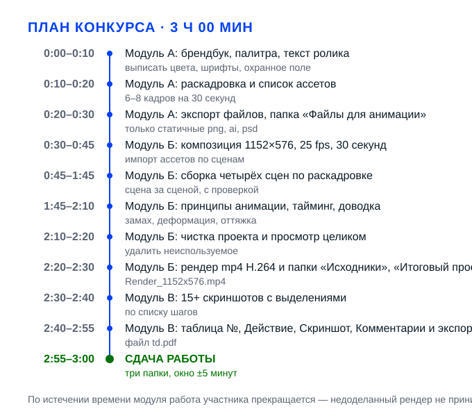
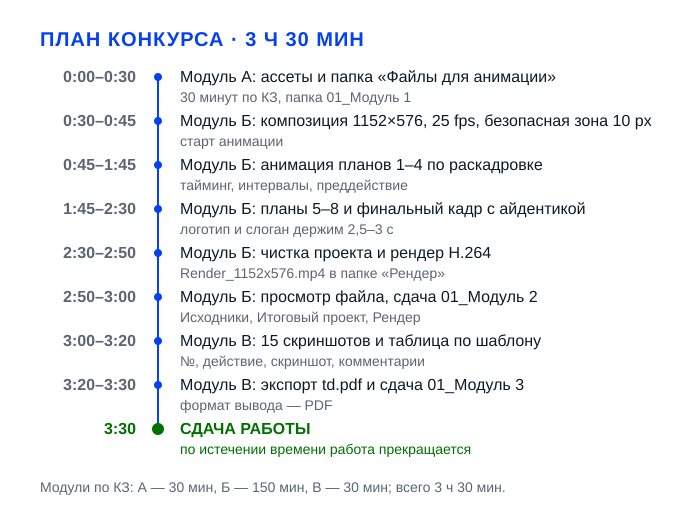
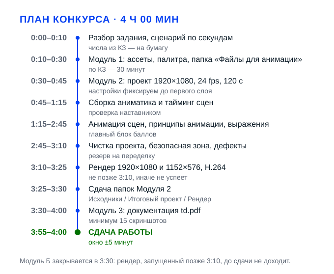

Специалист компьютерной графики (моушн-дизайнер) (Р)
Задания ниже — официальные файлы «Абилимпикс» (источник: abilympics-russia.ru), разложенные по категориям. Решения написаны по тексту задания, регламенту и критериям оценки; в них указано, что именно проверяет эксперт.
Школьник
14–16 лет, базовый уровень заданияВыдержка из официального конкурсного задания: страницы, относящиеся к категории «Школьник» (стр. 5–6, 10–11 источника).
Пошаговое решение
Задание категории «Школьники» — рекламный ролик для чемпионатного движения «Абилимпикс» длиной 30 секунд, собранный из статичных ассетов, которые вы готовите сами. Работа идёт тремя модулями: 30 минут на подготовку файлов, 120 минут на анимацию и рендер, 30 минут на техническую документацию, всего 3 часа 00 минут. Кадр — 1152×576 px, рендер — mp4 с кодеком H.264, важные элементы живут внутри безопасной зоны не менее 10 px от края, айдентика движения обязательна в момент появления информации о нём, а принципы анимации должны быть видны в проекте. Сдаются три папки с точными именами: 01_Модуль 1, 01_Модуль 2 с подпапками «Исходники», «Итоговый проект» и «Рендер», 01_Модуль 3 с файлом td.pdf и минимум пятнадцатью скриншотами. Ниже — весь путь по шагам, от чтения брендбука до ответов на вопросы эксперта.

Задача 1. Модуль А: собрать ассеты и папку «Файлы для анимации»Модуль А · 30 минут из 180
Первый модуль длится ровно 30 минут и заканчивается папкой со статичными файлами, из которых потом будет собрана анимация. Здесь нельзя рисовать «красиво в целом»: каждый файл должен быть подготовлен под конкретный кадр раскадровки, лежать под понятным именем и открываться в чужой программе без потери прозрачности. Тридцать минут — это примерно по две минуты на ассет, поэтому порядок работы жёсткий: сначала читаем брендбук и текст, потом рисуем раскадровку на бумаге, и только после этого садимся за редактор.
Действие 1.1. Прочитать брендбук и текст ролика
Шаг 1.1.1
Открываем брендбук и выписываем на отдельный лист четыре вещи: точные коды цветов в hex, названия гарнитур, минимальный размер логотипа и величину охранного поля вокруг знака. Логотип копируем в отдельный файл в исходном виде, не растягивая по одной оси и не поворачивая: в брендбуке почти всегда есть страница с запрещёнными искажениями, и именно по ней эксперт сверяет кадр. Тут же помечаем, на какой странице лежит версия знака для тёмного фона и на какой — для светлого, чтобы не искать её потом под таймер.
Айдентика чемпионатного движения должна быть соблюдена в проекте, и особенно в тот момент, когда в кадре появляется информация о нём. Это единственное требование, которое проверяется покадрово: сдвинутый оттенок синего или логотип, сжатый по горизонтали, читаются как небрежность. Тридцать минут модуля А — единственное спокойное время, когда документ можно прочитать целиком, в модуле Б на это уже не будет ни одной свободной минуты.
Проверьте себя по четырём пунктам: коды цветов выписаны цифрами, а не словами «синий, как в фирменном стиле»; гарнитуры названы точно и стоят в системе; охранное поле записано в пикселях для размера 1152×576; страница с логотипом для тёмного фона найдена. Откройте логотип в редакторе и убедитесь, что он не размыт и не имеет белой подложки.
Самая частая ошибка — скачать логотип из поиска картинок вместо брендбука: там лежит старая версия знака, с другим контуром и другим оттенком, и вся сцена с айдентикой теряет баллы. Вторая — «поправить» знак по вкусу: подрезать поле, поменять цвет на более контрастный, добавить тень. Третья — отложить чтение брендбука на потом и рисовать по памяти.
Эксперт открывает брендбук и кадр с появлением информации о движении рядом и сравнивает цвет, пропорции знака и охранное поле. Смотрит он это в первые же минуты проверки модуля А и возвращается к тем же кадрам при оценке ролика. Сверка идёт по трём признакам: цвет, пропорции, поле.
Шаг 1.1.2
Берём текст ролика и читаем его вслух с секундомером: спокойный темп диктора — примерно два с половиной слова в секунду, значит за 30 секунд без спешки укладывается 70–75 слов. Делим текст на фразы и напротив каждой ставим время начала и конца, оставляя по одной-две секунды на паузу перед появлением логотипа. Фразы, которые не влезают в хронометраж, сокращаем сразу на бумаге: вычеркнуть слово дешевле, чем потом перестраивать всю сцену.
Хронометраж 30 секунд — жёсткое техническое требование задания, и ролик на 34 секунды уже не соответствует ему, каким бы удачным он ни был. Разбивка по секундам заранее экономит десятки минут в модуле Б: вы сразу видите, сколько времени есть на каждую мысль, и не начинаете анимацию с фразы, для которой в кадре физически нет места. Текст ролика — единственный источник смысла, и если он не разложен по времени, идея рассыпается на отдельные кадры.
Сложите длительности всех фраз и пауз — должно получиться ровно 30 секунд, ни секундой больше. Каждая фраза на бумаге занимает не больше трёх-четырёх секунд: если какая-то тянется шесть, зритель не успеет её прочитать. Прочитайте размеченный текст вслух ещё раз с секундомером и убедитесь, что вы не торопитесь.
Типичная ошибка — оставить в ролике весь текст задания целиком, рассчитывая, что «как-нибудь прочитается». На тридцати секундах это превращается в мельтешение, и зритель не понимает ни одной мысли. Вторая — забыть паузы: без них фразы слипаются, а логотип появляется на последнем слове и не успевает считаться.
Эксперт смотрит ролик целиком и фиксирует, укладывается ли он в 30 секунд и понятна ли идея с первого просмотра. Разметка текста видна уже по тому, насколько спокойно читаются титры.
Шаг 1.1.3
Заводим в редакторе палитру: создаём образцы цветов из брендбука и сохраняем их как набор свотчей, а не набираем каждый раз пипеткой с картинки. Проверяем, что нужная гарнитура установлена и отображается в списке шрифтов, а если её нет — выбираем ближайшую по рисунку из установленных и записываем это решение на лист, чтобы не менять шрифт на середине работы. Тот же лист с палитрой и шрифтами держим открытым до конца конкурса.
Палитра и шрифт — это то, что делает четыре разные сцены одним роликом. Когда цвета берутся пипеткой с чужой картинки, оттенки расходятся на два-три тона, и в монтаже это видно как «грязные» переходы между сценами. Готовые свотчи исключают эту ошибку физически: цвет всегда один и тот же, сколько бы сцен вы ни сделали. Шрифт, выбранный один раз, избавляет от переверстки титров, которая съедает по пять-семь минут на каждую сцену.
В палитре ровно те цвета, что в брендбуке, и ни одного «похожего». Шрифт в списке один и тот же во всех текстовых слоях. Проверить просто: выделите любой текст в макете и посмотрите имя гарнитуры — оно должно совпадать с записанным на листе.
Ошибка — набирать цвет пипеткой с логотипа, сжатого в jpeg: там оттенок уже испорчен компрессией, и фирменный синий становится мутным. Вторая — поставить «красивый» шрифт из интернета, которого нет на конкурсном компьютере: при открытии проекта он подменится, и титры поедут по ширине.
Эксперт сравнивает цвета и шрифт в кадре с брендбуком, а также смотрит, не подменялся ли шрифт при открытии проекта на другом компьютере. Сверяет он это в первые минуты проверки первого модуля.
Действие 1.2. Нарисовать раскадровку и список ассетов
Шаг 1.2.1
Берём шесть-восемь листов или один лист, расчерченный на шесть-восемь кадров, и рисуем раскадровку от руки: прямоугольник 2:1 (это пропорция 1152×576), в нём — крупные пятна композиции и подпись времени под каждым кадром. Рисуем не красиво, а быстро: важно, где стоит герой, где текст, куда движется камера. Под каждым кадром пишем секунды, например «0:00–0:04 — герой входит слева», чтобы к концу раскадровки сумма снова дала 30 секунд.
Раскадровка — это план анимации, без неё модуль Б превращается в перебор идей на таймлайне, а на 120 минут такой перебор не оставляет времени на доводку. Кроме того, раскадровка сразу показывает, сколько ассетов нужно нарисовать: если в кадрах восемь разных объектов, а в модуле А вы успели сделать три, лучше узнать об этом на пятой минуте, а не на двадцать девятой. Она же помогает удержать композицию в кадре — задание прямо требует её построения.
Кадров не меньше шести, у каждого подписан тайминг, сумма времени равна 30 секундам. Проверьте, что в раскадровке есть начало, ясная середина с появлением информации о движении и финал с логотипом: если финального кадра нет, ролик закончится «на полуслове».
Ошибка — начать сразу с программы, «по ходу придумается»: тогда первые сорок минут уходят на эксперименты, а середина ролика остаётся пустой. Вторая — нарисовать раскадровку без тайминга, и в модуле Б выясняется, что сцен в два раза больше, чем помещается в 30 секунд.
Эксперт может попросить показать раскадровку и сравнить её с готовым роликом: совпадение сцен читается как осмысленная работа, расхождение — как импровизация.
Шаг 1.2.2
Составляем список ассетов таблицей на четыре колонки: имя файла, что это, размер в пикселях и в какой сцене используется. Имена пишем заранее и латиницей, без пробелов и кириллицы: hero_01.png, logo_abilympics.svg, bg_gradient.jpg. Размеры считаем от кадра 1152×576: фон всегда ровно 1152×576, герой — примерно 400–600 px по высоте, если он в среднем плане, иконки — 64–128 px. Ниже списка отдельной строкой отмечаем, что нужно нарисовать с нуля, а что можно взять из брендбука.
Список ассетов — это техническое задание самому себе, и он же защищает от главной ловушки модуля А: нарисовать пять картинок, из которых в ролик войдёт одна. Задание разрешает брать исходники из открытых источников и из брендбука, но запрещает использовать в ролике что-либо, чего нет в папке первого модуля, поэтому список должен покрывать все кадры раскадровки. Заданные размеры избавляют от масштабирования вверх в модуле Б, где картинка мылится.
Пройдите по раскадровке кадр за кадром и отметьте каждый объект галочкой в списке: непокрытых кадров быть не должно. У всех файлов есть имя и размер, все имена латиницей, в списке нет двух разных файлов с одинаковым именем.
Частая ошибка — рисовать ассеты «под будущее масштабирование»: маленькую картинку потом растянуть на весь кадр, и она станет мягкой и шумной. Вторая — назвать файлы «рисунок1», «новый слой 3»: через час в проекте невозможно найти нужный объект, а эксперт видит неопрятную папку.
Эксперт смотрит папку модуля А и соотносит её содержимое с роликом: всё, что есть в кадре, должно найтись в папке, а лишние файлы выдают суету. Лишние файлы в папке он тоже отмечает.
Шаг 1.2.3
Строим композицию кадра: в прямоугольнике 1152×576 проводим две вертикальные и две горизонтальные линии по третям, ставим главный объект на пересечение, а текст — в свободную треть. От краёв откладываем по 10 px и обводим этот прямоугольник — это минимальная безопасная зона по заданию, всё важное должно жить внутри неё. Отдельно проверяем, что герой не «прилип» к нижнему краю: диджитал-билборд часто обрезается по контуру корпуса, и нижние 5–7 % кадра могут быть закрыты.
Композиция в кадре — отдельный пункт задания, и на билборде она читается иначе, чем на мониторе: зритель смотрит на экран с десяти метров и полторы-две секунды, поэтому в кадре должна быть одна главная мысль и один акцент. Правило третей и безопасная зона не менее 10 px от края — это не украшение, а способ не потерять текст при монтаже и при обрезке экрана. Если важный элемент стоит вплотную к краю, на реальном билборде его просто не будет.
Проверьте кадр с расстояния вытянутой руки, прищурившись: должно быть видно одно главное пятно, а не три равных. Все важные элементы внутри рамки 10 px, текст не пересекает линии третей и не наезжает на лицо героя. Сделайте снимок кадра и уменьшите его до 300 px по ширине — если смысл читается, композиция работает.
Ошибка — заполнить кадр целиком, «чтобы не было пусто»: на билборде такая картинка превращается в пёстрое пятно. Вторая — поставить текст вплотную к нижнему краю: он пропадает при обрезке и не попадает в безопасную зону, что прямо противоречит заданию.
Эксперт смотрит кадры на предмет читаемости и соблюдения безопасной зоны, особенно в сценах с текстом и логотипом. Отдельно смотрит кадры, где текст стоит у нижнего края.
Действие 1.3. Нарисовать и вычистить файлы в редакторе
Шаг 1.3.1
Создаём новый документ: 1152×576 px, цветовой режим RGB, разрешение 72 ppi, фон прозрачный для объектов и заливка для фона. Работаем артбордами (монтажными областями) — по одному на каждый ассет из списка, чтобы все файлы лежали в одном документе и их было удобно править. Первым делом ставим направляющие на 10 px от каждого края и больше их не двигаем: это граница безопасной зоны для всех будущих файлов.
Точный размер холста — основа всей дальнейшей работы: если нарисовать ассеты на холсте 1920×1080, то при вставке в композицию 1152×576 их придётся масштабировать, а вместе с ними «поедут» толщины линий и радиусы. Единый документ с артбордами экономит время на открывании десятка файлов и даёт одинаковую палитру во всех картинках. Направляющие безопасной зоны, поставленные один раз, работают на весь проект.
Размер документа ровно 1152×576, режим RGB, фон прозрачный или заливка — осознанно. Направляющие стоят на 10 px со всех четырёх сторон. Артбордов столько же, сколько строк в списке ассетов, и каждый назван по имени будущего файла.
Ошибка — рисовать в режиме CMYK «как для печати»: на экране цвета выглядят тускло, а при экспорте в png оттенки уезжают от брендбука. Вторая — сделать один большой холст и рисовать всё на нём, а потом вырезать объекты вручную: края получаются рваными, а прозрачность — с белой каймой.
Эксперт смотрит исходники: аккуратные артборды и совпадающие размеры говорят о том, что участник понимает технологию, а не просто «что-то нарисовал». Смотрит он это в начале проверки модуля А.
Шаг 1.3.2
Готовим логотип: если он пришёл вектором, просто копируем его на отдельный артборд и проверяем, что контуры не разбиты и заливка фирменная; если пришёл растром, аккуратно обтравливаем по контуру с запасом в один пиксель и чистим белые ореолы. Вокруг знака оставляем охранное поле по брендбуку — обычно это половина высоты буквы в логотипе, и внутри этого поля не должно быть ничего. Экспортируем два файла: logo_abilympics.png с прозрачным фоном для анимации и logo_abilympics_white.png для тёмных сцен.
Логотип появляется в ролике в самый важный момент — когда зритель должен считать, о каком движении речь, — и именно по нему проверяют айдентику. Обтравленный знак с белым ореолом на тёмном фоне выглядит как наклейка и сразу выдаёт небрежность, а знак без охранного поля слипается с соседними объектами. Два варианта — тёмный и белый — нужны потому, что в финале ролик почти всегда уходит на тёмный фон, и перекрашивать знак в последнюю минуту опасно.
Откройте png на шахматном фоне: ореолов и белой каймы нет, края чистые. Охранное поле не меньше указанного в брендбуке, пропорции не изменены. Белая версия действительно белая, а не светло-серая, и не имеет полупрозрачных краёв.
Ошибка — масштабировать растровый логотип вверх: контур становится мыльным, и на билборде это видно с десяти метров. Вторая — обтравить знак «на глаз», потеряв тонкие элементы и внутренние просветы букв. Третья — перекрасить знак в произвольный цвет.
Эксперт сравнивает логотип в кадре с брендбуком по контуру, цвету и полю, а также смотрит, не «плывёт» ли он при увеличении. Проверяет при увеличении до 200 %.
Шаг 1.3.3
Делаем фон: либо ровный фирменный цвет, либо мягкий градиент от светлого к насыщенному синему, либо лёгкая геометрическая текстура — но всегда в палитре брендбука и без посторонних оттенков. Градиент строим на двух-трёх точках, а не на радуге: плавный переход держится в пределах 15–20 % светлоты, иначе на билборде появляются видимые полосы. Текстуру, если она есть, делаем с прозрачностью не выше 15 %, чтобы она не спорила с текстом.
Фон задаёт настроение всего ролика и при этом не должен перетягивать внимание с героя и текста. На светодиодном билборде плавные градиенты часто распадаются на полосы, поэтому переходы делают короткими, а контраст — достаточным для чтения с расстояния. Фон, собранный из фирменных цветов, заодно закрывает требование айдентики в тех сценах, где логотипа ещё нет.
Уменьшите фон до размера 400 px по ширине: полос и ступенек нет, градиент остаётся плавным. Текст на фоне читается без обводки. Цвета фона входят в палитру брендбука — проверьте пипеткой три точки: центр, угол и середину перехода.
Ошибка — поставить на фон фотографию с мелкими деталями: на билборде она превращается в шум, а текст на ней не читается. Вторая — растянуть маленькую текстуру на весь кадр, и она становится мутной, с видимыми квадратами.
Эксперт оценивает, поддерживает ли фон идею и не мешает ли читать текст в кадре. Смотрит он фон на каждом кадре и отдельно — в сцене с логотипом, где контраст важнее всего.
Шаг 1.3.4
Рисуем объекты и героя: каждый элемент — на своём слое, слои названы по-человечески (hero_body, hero_hand, star_01), а не «Слой 12». Объекты, которые будут двигаться отдельно, обязательно разносим по слоям: рука, голова, мяч, шестерёнка. Контуры делаем замкнутыми, заливки — сплошными, без полупрозрачных пикселей по краю; если нужен мягкий край, добавляем его маской, а не ластиком с размытием.
Анимация собирается из отдельных частей, и если рука нарисована на одном слое с телом, её невозможно повернуть, не разрезав персонажа. Названные слои нужны вам же через час, когда в проекте будет тридцать элементов, и они же показывают эксперту культуру работы. Замкнутые контуры и сплошные заливки дают чистый край при любом масштабе, а маски позволяют потом менять форму без перерисовки.
Все элементы, которым предстоит двигаться, лежат на отдельных слоях с понятными именами. Края объектов чистые: при увеличении до 200 % нет полупрозрачной бахромы и обрезанных пикселей. Внутри объекта нет «дырок» от ластика.
Ошибка — рисовать персонажа одним куском и потом «анимировать целиком»: движение получается деревянным, а принципы анимации применить не к чему. Вторая — оставлять полупрозрачные края: при наложении на цветной фон появляется грязная кайма.
Эксперт смотрит исходники и оценивает, разложены ли элементы по слоям: по этому видно, понимает ли участник, как из статики получается движение. Смотрит он исходники до просмотра ролика.
Шаг 1.3.5
Экспортируем каждый артборд отдельным файлом в папку «Файлы для анимации»: png с прозрачностью для объектов, jpg высокого качества для фона без прозрачности, pdf или svg для векторных элементов, которые понадобятся в проекте. Экспорт делаем с параметром «прозрачный фон» и без сжатия с потерями для объектов, иначе по краям появится грязь. После экспорта сразу открываем два-три файла и смотрим их на шахматном фоне, не откладывая проверку на конец модуля.
Задание требует, чтобы исходниками были статичные изображения растровой или векторной графики, и папка первого модуля — единственное место, откуда потом можно брать материалы для ролика. Если экспортировать объекты с потерями, при наложении на градиент появятся тёмные и светлые ореолы, и это видно на каждом кадре. Проверка сразу после экспорта стоит тридцать секунд, а переделка всех файлов в конце модуля — пять минут, которых не будет.
В папке лежат файлы всех ассетов из списка, у каждого правильный размер и прозрачность там, где она нужна. Откройте три файла на шахматном фоне: края чистые, фон не белый там, где должен быть прозрачным, размер совпадает с заявленным в списке.
Ошибка — сохранить объект в jpg: прозрачность пропадает, вместо неё белый прямоугольник, и в проекте объект приходится вырезать заново. Вторая — экспортировать фон с прозрачностью, и на месте фона в ролике появляется чёрный прямоугольник.
Эксперт открывает папку и проверяет, что все файлы статичные, целые и открываются без ошибок; битые файлы читаются как неумение довести работу до конца.
Действие 1.4. Собрать папку модуля А по требованиям
Шаг 1.4.1
На рабочем столе создаём папку с именем по шаблону задания: 01_Модуль 1_Фамилия И. О., и через запятую — номер рабочего места, например 01_Модуль 1_Иванов И. И., 01. Номер рабочего места написан на табличке у монитора, его не нужно угадывать. Внутри этой папки создаём подпапку «Файлы для анимации» — ровно с таким названием, без сокращений и латинских букв, потому что проверяющий ищет её по имени.
Имя папки — формальное требование задания, и его проверяют первым: если папка называется «модуль 1» или «работа», эксперт всё равно её найдёт, но отметит нарушение структуры. Сдача идёт по папкам, а не по файлам, поэтому вся работа, не попавшая в правильно названную папку, рискует не быть оценённой вовсе. Номер рабочего места в имени нужен, чтобы работу не перепутали с работой соседа при копировании.
На рабочем столе ровно одна папка модуля А, её имя совпадает с шаблоном посимвольно, включая пробелы и запятую. Внутри — подпапка «Файлы для анимации», и в ней лежат файлы, а не пустые вложенные папки. Проверьте путь целиком: рабочий стол, папка, подпапка, файлы.
Ошибка — сложить файлы прямо на рабочий стол, «потом разберу»: в конце модуля времени на разбор не остаётся, и работа сдаётся россыпью. Вторая — назвать подпапку «Анимация» или «files»: имя не совпадает с требуемым, и часть проверки формально не проходит.
Эксперт проверяет имя папки и наличие подпапки до того, как открыть содержимое: это первое, что видно в проводнике. Дальше он открывает подпапку и смотрит файлы.
Шаг 1.4.2
Раскладываем файлы по подпапке и переименовываем их по схеме из списка ассетов: латиница, нижнее подчёркивание вместо пробелов, номер сцены в начале имени. Например s1_hero_wave.png, s2_gear.png, s3_logo.png. Если файлов больше двадцати, полезно сгруппировать их по сценам в имени, чтобы в модуле Б импорт шёл блоками и не приходилось искать нужный объект среди одинаковых «png (3)». Кириллицу в именах не оставляем: часть программ и часть проверяющих машин её не переваривает.
Понятные имена — это скорость работы в модуле Б, где на импорт и разбор ассетов уходит первая десятка минут. Когда файлы названы по сценам, вы импортируете их пачками и сразу раскладываете по папкам проекта, а не выясняете, какой из трёх «png» — это логотип. Латиница защищает от битых путей при копировании папки на другой компьютер, а это обязательно произойдёт при сдаче.
Все файлы в подпапке названы латиницей, без пробелов и без «копия», «новый», «окончательный». Имя каждого файла позволяет без открытия понять, что внутри и для какой сцены он нужен. Дублей с одинаковыми именами нет.
Ошибка — оставить имена вида «Безымянный-1.png»: в проекте они превращаются в хаос, а при импорте часть программ переименовывает их сама, и вы теряете связь с раскадровкой. Вторая — использовать пробелы и кириллицу, из-за которых некоторые программы не видят файл.
Эксперт смотрит на порядок в папке: аккуратные имена читаются как понимание того, что проект придётся открывать не только вам. Особенно если файлов больше двадцати.
Шаг 1.4.3
Делаем финальную проверку папки по короткому списку: все файлы статичные (никаких mp4, gif-анимаций и видео), все открываются, ни один не весит ноль байт, размеры совпадают со списком, прозрачность на месте. Убеждаемся, что в подпапке нет лишнего: эскизов, мусорных слоёв, чужих файлов, случайно сохранённых скриншотов. Затем копируем папку на флешку или в сетевую папку, если сдача идёт копированием, и проверяем, что копия открывается.
Задание прямо ограничивает исходники статичными изображениями, поэтому видеофайл в папке — это нарушение, за которое снимают баллы независимо от качества ролика. Битый или пустой файл обнаруживается только в модуле Б, когда объект вдруг не вставляется, и тогда приходится тратить анимационное время на перерисовку. Копия на втором носителе — страховка от самой обидной потери: работа готова, а папка не читается.
Откройте каждый файл по очереди — их не больше двух десятков, это две минуты. В папке нет ни одного файла с расширением видео, ни одного нулевого по размеру, ни одного неоткрывающегося. Копия папки открывается с другого носителя.
Ошибка — положить в папку анимированный gif «для наглядности»: формально это уже не статичный исходник, и требование задания нарушено. Вторая — не проверить копию: половина файлов доезжает битой, и работа сдаётся пустой.
Эксперт открывает по два-три файла из папки и проверяет, что они целые и статичные; именно на этом шаге чаще всего всплывают нулевые и битые файлы. Смотрит он это до запуска второго модуля.
Задача 2. Модуль Б: собрать анимацию и композицию роликаМодуль Б · 120 минут из 180
Сто двадцать минут — это основная часть конкурса, и тратить её нужно на движение, а не на перерисовку. К началу модуля у вас есть папка статичных файлов и раскадровка на бумаге: проект настраивается один раз и точно, сцены собираются строго по кадрам раскадровки, а принципы анимации вводятся не «для галочки», а там, где они делают движение понятным. Ролик должен уложиться в 30 секунд, кадр — в 1152×576 px, а всё важное — в безопасную зону не менее 10 px от края.
Действие 2.1. Настроить проект и импортировать ассеты
Шаг 2.1.1
Создаём новую композицию: ширина 1152 px, высота 576 px, частота кадров 25 в секунду, длительность ровно 30 секунд, фон прозрачный или фирменный. Частоту кадров фиксируем сразу и больше не меняем: при смене 25 на 30 все ключевые кадры съезжают, и анимация начинает «дышать». Композицию называем finalпроект, чтобы имя совпадало с требуемым именем файла проекта, а не превращалось в «Comp 1».
Размер 1152×576 и хронометраж 30 секунд — технические требования задания, и любое отклонение означает, что ролик не соответствует конкурсному заданию, даже если выглядит хорошо. Частота 25 кадров в секунду — стандарт для региона и для билбордов, при ней движение остаётся плавным, а файл не раздувается. Правильное имя композиции экономит минуты в конце модуля, когда проект нужно сохранить под строго заданным именем.
В настройках композиции стоит 1152×576, 25 fps, 30 секунд, и имя finalпроект. Проверьте это до первой анимации: откройте настройки композиции и прочитайте цифры вслух, а не «на глаз». Линейка времени должна заканчиваться на 30-й секунде, а не на 10-й или 60-й.
Ошибка — оставить длительность 10 секунд по умолчанию и потом растягивать: ключевые кадры придётся переставлять вручную. Вторая — случайно поставить 29,97 fps вместо 25 и получить расхождение в доли секунды, из-за которого финальный кадр обрезается.
Эксперт первым делом открывает настройки композиции и сверяет размер, fps и длительность с техническими требованиями. Расхождение хотя бы в одном параметре фиксируется сразу.
Шаг 2.1.2
Импортируем файлы из папки «Файлы для анимации» одним заходом через команду импорта нескольких файлов, а не перетаскиванием по одному. В панели проекта сразу создаём папки по сценам: 01_scene, 02_scene, 03_scene, 04_scene, а внутрь раскладываем ассеты по именам, которые вы дали в модуле А. Проверяем, что у png-файлов в настройках интерпретации стоит прямая альфа, а не premultiplied, иначе по краям появится тёмная кайма.
Папки в проекте — это не педантизм, а способ не потерять пять минут на поиск объекта в середине работы, когда до сдачи остаётся полчаса. Задание требует удалять неиспользуемые видеоряды и файлы, и делать это гораздо проще, когда всё разложено по сценам. Прямая альфа критична для png с полупрозрачными краями: при неверной интерпретации каждый объект получает тёмный контур, который виден на светлом фоне.
В панели проекта столько папок, сколько сцен в раскадровке, и в каждой лежат только её ассеты. Ни один файл не остался в корне проекта. Увеличьте кадр с персонажем до 200 % и посмотрите на край: тёмной или светлой каймы нет.
Ошибка — перетащить все файлы в корень проекта и искать нужный по превью: на тридцати файлах это занимает минуты. Вторая — не проверить альфу и обнаружить тёмные контуры только на рендере, когда переделывать уже поздно.
Эксперт открывает панель проекта и смотрит на структуру: порядок в папках читается как умение вести проект, а не только рисовать. Отдельно смотрит, нет ли файлов в корне проекта.
Шаг 2.1.3
Ставим направляющие безопасной зоны: четыре линии на расстоянии 10 px от каждого края композиции, желательно яркого контрастного цвета, чтобы их было видно поверх любого фона. Дополнительно проводим линии по третям — они помогают держать композицию. Направляющие включаем на всех сценах и выключаем только на финальном просмотре, чтобы увидеть кадр глазами зрителя. Если в программе есть функция «безопасные зоны», включаем её и проверяем, что она не шире 10 px.
Задание требует, чтобы анимация важных элементов происходила внутри безопасной зоны, и определяет её минимум как 10 px от края. Без направляющих это требование проверяется на глаз и почти всегда нарушается: текст «наезжает» на край, логотип при движении выходит за границу. На билборде края кадра часто закрыты рамкой корпуса, поэтому элемент, стоящий вплотную к краю, физически не виден зрителю.
На каждой сцене видны четыре линии в 10 px от краёв, и ни один текстовый слой, логотип или значимый объект их не пересекает. Прокрутите таймлайн покадрово в местах, где объекты двигаются к краю: даже в крайней точке движение должно оставаться внутри рамки.
Ошибка — поставить направляющие и забыть про них, потому что они выключены на сцене. Вторая — понять безопасную зону как «10 px только сверху и снизу», хотя требование касается всех четырёх сторон кадра.
Эксперт проверяет кадры с текстом и логотипом на соблюдение безопасной зоны, иногда с линейкой на экране. Особенно в сценах, где объект подходит к краю кадра.
Действие 2.2. Собрать сцены по раскадровке
Шаг 2.2.1
Собираем первую сцену, 0:00–0:06: кладём фон, ставим главный объект и задаём ему первое движение — появление слева с небольшим смещением вверх. Работаем блоками по два-три секунды: сначала выставляем статичное положение объектов, потом добавляем ключевые кадры. Не начинаем следующую сцену, пока первая не проигрывается целиком без рывков и не укладывается в свои шесть секунд.
Первые секунды решают, останется ли зритель с роликом: на билборде у вас полторы-две секунды, чтобы считать главный объект. Сцена, собранная блоками, не разваливается при последующей правке: если понадобится сдвинуть тайминг, вы двигаете один блок, а не переставляете двадцать ключей. Дисциплина «сцена за сценой» экономит время, потому что ошибки находятся сразу, а не на общем просмотре в конце.
Сцена проигрывается от начала до конца без провалов и укладывается в 0:00–0:06. Главный объект читается в первом же кадре, фон не спорит с ним по контрасту. В панели слоёв нет пустых или случайно продублированных слоёв.
Ошибка — начать с самой красивой сцены, а завязку оставить на конец: тогда первые секунды ролика оказываются самыми слабыми. Вторая — держать объект в кадре статично первые четыре секунды, и ролик выглядит как слайд-шоу.
Эксперт смотрит ролик целиком и отдельно первые секунды: понятно ли с первого кадра, о чём история. Смотрит он это на первом просмотре, не останавливая ролик.
Шаг 2.2.2
Собираем вторую сцену, 0:06–0:14: здесь развивается действие — герой что-то делает, объекты взаимодействуют, появляется конфликт или препятствие, которое он преодолевает. Каждому объекту задаём своё движение с разной скоростью: фон двигается медленнее, герой быстрее, детали ещё быстрее. Следим, чтобы в кадре не было двух одновременных движений одинаковой амплитуды — глаз не понимает, куда смотреть.
Середина ролика несёт смысл: именно здесь зритель понимает идею, а задание требует, чтобы она была понятна без объяснений. Разная скорость слоёв создаёт глубину и естественность, а одинаковые по амплитуде движения превращают кадр в кашу. Восемь секунд на развитие — это примерно треть ролика, и если сцена пустая, весь ролик кажется затянутым, хотя формально длится 30 секунд.
В сцене есть одно главное действие и один смысловой акцент, взгляд не мечется. Прокрутите сцену покадрово: ни один объект не появляется «из ниоткуда» и не исчезает рывком. Движение укладывается в отведённые восемь секунд без спешки и без провисаний.
Ошибка — заставить двигаться всё сразу: зритель теряет главное. Вторая — сделать героя неподвижным, а фон активным, и внимание уходит на задний план. Третья — оставить сцену пустой на две-три секунды «для паузы», и ролик провисает.
Эксперт оценивает, читается ли действие в середине ролика и нет ли визуального шума. Отдельно отмечает, нет ли в кадре двух равных по силе движений, между которыми мечется взгляд.
Шаг 2.2.3
Собираем третью сцену, 0:14–0:24: появление информации о чемпионатном движении. Выводим логотип и название строго по брендбуку, на фоне, который обеспечивает контраст не ниже 4,5:1, и держим их в кадре не меньше трёх секунд, чтобы зритель успел прочитать. Появление делаем не «проявлением на месте», а коротким движением: знак выезжает из-за края и останавливается в охранном поле, текст появляется следом с задержкой 0,2–0,3 секунды.
Айдентика должна быть соблюдена особенно в момент появления информации о движении — это прямое указание задания, и именно эта сцена проверяется по брендбуку внимательнее всего. Три секунды — минимальное время, за которое человек с расстояния считывает название, и если логотип мелькает на полторы секунды, он не запоминается. Последовательное появление знака и текста читается как профессиональная работа, одновременное — как вставленная картинка.
Логотип и название видны целиком, не обрезаны и не перекрыты другими объектами, стоят внутри безопасной зоны и не меньше трёх секунд. Сделайте стоп-кадр и сравните с брендбуком: цвет, пропорции, охранное поле. Проверьте контраст: прищурьтесь — текст должен оставаться читаемым.
Ошибка — поставить логотип на пёстрый фон, где он теряется: считается нарушением айдентики. Вторая — растянуть знак под размер кадра и потерять пропорции. Третья — показать название на секунду, и зритель не успевает его прочитать.
Эксперт останавливает ролик именно на этой сцене и сверяет кадр с брендбуком — это самая частая точка, где снимают баллы за айдентику. Сверяет он цвет, пропорции и охранное поле.
Шаг 2.2.4
Собираем финальную сцену, 0:24–0:30: короткий призыв, логотип в финальном положении и мягкое завершение движения. Логотип не «влетает» в последний момент, а приходит за две-три секунды до конца и остаётся неподвижным в последнем кадре не меньше секунды: так его успевает считать даже тот, кто посмотрел на билборд в последний момент. Финальный кадр делаем «чистым»: без обрезанных объектов, без текста, уходящего за край, без движения, оборванного на середине.
Последний кадр запоминается лучше всего, и именно его видят те, кто подошёл к билборду в конце показа. Неподвижная пауза в конце — приём из принципов анимации: движение, которое останавливается и держится, читается как завершённая мысль, а ролик, оборванный на полуже, оставляет ощущение недоделанности. Кроме того, финальный кадр часто используют как постер, и он должен выглядеть самостоятельной композицией.
В последнем кадре логотип целиком в кадре, ровно по центру или по третям, без движения. Прокрутите последние две секунды: движение плавно затухает, а не обрывается. Текст призыва читается и не пересекает безопасную зону.
Ошибка — оборвать ролик на середине движения: выглядит как технический сбой. Вторая — поставить логотип в последние полсекунды, и он не считывается. Третья — оставить в финальном кадре случайный объект, выехавший за край.
Эксперт смотрит последние секунды отдельно: финал оценивается и по композиции, и по соблюдению айдентики. Смотрит он финал после общего просмотра, отдельным заходом.
Шаг 2.2.5
Оформляем текст: кегль не меньше 40 px для основного сообщения и не меньше 28 px для подписи, гарнитура из брендбука, межстрочный интервал 1,2–1,3, выключка по левому краю или по центру. Титры держим в кадре столько, сколько нужно на прочтение: примерно 0,3 секунды на слово плюс полсекунды запаса. Текст не накладываем на активные участки фона: под ним либо спокойная зона, либо затемняющая подложка с прозрачностью 20–30 %.
Текст на билборде читается с десяти метров и на ходу, поэтому мелкий кегль и плотный интервал превращают сообщение в серую полосу. Задание требует, чтобы зрителю была понятна идея и суть ролика, а текст — основной носитель этой сути. Выключка по центру длинных строк и «рваный» интервал читаются как небрежность даже при хорошей анимации.
Уменьшите кадр с текстом до 25 % и посмотрите с расстояния двух метров: сообщение должно читаться целиком. Каждая строка держится в кадре достаточно времени, чтобы прочитать её вслух без спешки. Текст не пересекает безопасную зону и не наезжает на лицо героя.
Ошибка — поставить кегль 24 px «чтобы влезло»: на экране монитора читается, на билборде нет. Вторая — вывести длинную фразу на две секунды, и зритель успевает прочитать половину. Третья — забыть про интервал, и строки слипаются.
Эксперт проверяет читаемость титров на большом экране и соответствие шрифта брендбуку. Смотрит он титры на большом экране, при уменьшении кадра до 25 % и в сравнении с брендбуком по шрифту.
Действие 2.3. Ввести принципы анимации
Шаг 2.3.1
Ставим ключевые кадры движения и настраиваем интерполяцию: для появления и ускорения — ease in, для торможения перед остановкой — ease out, для прохода через кадр — ease in-out. В графическом редакторе это делается через график скорости (value graph): вытягиваем кривую так, чтобы движение начиналось медленно, разгонялось и мягко останавливалось. Отдельно проверяем, что в крайних точках нет резкого обрыва кривой — именно он даёт рывок.
Принципы анимации в проекте обязательны по заданию, и плавность — самый заметный из них. Линейная интерполяция выглядит механически: объект трогается и останавливается мгновенно, как на рельсах. Кривые скорости делают движение живым и, что важнее, управляемым: вы задаёте характер, а не просто «перемещение из точки А в точку Б». Один и тот же путь с разной кривой читается как тяжёлый предмет или как лёгкий шарик.
Прокрутите движение покадрово: в начале и в конце объект проходит маленькие расстояния за кадр, в середине — большие. На графике скорости кривая плавная, без ступенек. Глазами рывков не видно, особенно на медленном воспроизведении 25 % скорости.
Ошибка — оставить все ключи линейными: движение выглядит как в презентации. Вторая — поставить ease на всё подряд, и объект «плывёт», теряя энергию. Третья — не проверить кривую в крайних кадрах, где чаще всего и возникает рывок.
Эксперт смотрит движение на замедленном воспроизведении и отмечает, есть ли разгон и торможение или объект двигается равномерно. Замедление он включает сам, по своему усмотрению.
Шаг 2.3.2
Добавляем преддействие и деформацию: перед тем как герой прыгнет или махнёт рукой, он слегка приседает и уходит в противоположную сторону на 0,1–0,2 секунды, а в момент контакта сжимается по вертикали на 10–15 % и растягивается по горизонтали. После приземления — короткое сжатие и возврат к исходной форме за два-три кадра. Эти три движения (замах, деформация, возврат) делаются на отдельных слоях, чтобы не ломать основную анимацию.
Преддействие (anticipation) готовит зрителя к движению: без него прыжок начинается неожиданно и выглядит как телепортация. Сжатие и растяжение (squash and stretch) передают вес и упругость — это два самых узнаваемых принципа анимации, и эксперт ищет их в проекте, потому что задание требует применения принципов. Даже простая фигура с замахом и деформацией читается как живая, а идеально ровная — как геометрическая анимация без характера.
В движении видно три фазы: короткий замах в обратную сторону, активное движение с деформацией, возврат формы. Покадрово: на кадре замаха объект отклонён назад, в момент контакта сжат, через три-четыре кадра снова в норме. Деформация не превышает 15 %, иначе объект «резиновый».
Ошибка — сделать замах длиннее самого движения, и герой «задумывается» перед прыжком. Вторая — растянуть объект на 40 %, и он выглядит как воздушный шарик. Третья — забыть вернуть форму, и объект остаётся сплющенным до конца сцены.
Эксперт ищет в проекте конкретные принципы: замах, деформацию, оттяжку. Их наличие или отсутствие видно по таймлайну и по движению. Ищет он их целенаправленно, по таймлайну.
Шаг 2.3.3
Настраиваем оттяжку и перекрывающее движение: части объекта приходят в движение и останавливаются не одновременно, а с задержкой в 1–3 кадра. Волосы, шарф, рука, хвост движутся вслед за телом, а после остановки тела ещё немного «догоняют» его и возвращаются. Второстепенные слои (фон, декоративные элементы) двигаются с задержкой 4–6 кадров и с меньшей амплитудой — так появляется глубина.
Перекрывающее движение (overlapping action) и оттяжка (follow through) — то, что отличает анимацию от перемещения картинок: ничто в реальном мире не начинается и не останавливается мгновенно. Задержка в один-два кадра между слоями даёт ощущение веса и инерции, а без неё персонаж выглядит собранным из жёстких деталей. Этот принцип ещё и маскирует мелкие огрехи в основных ключах, потому что взгляд занят деталями.
Прокрутите момент остановки: тело уже стоит, а второстепенные части ещё движутся и возвращаются. Задержка между слоями видна на таймлайне как сдвиг ключевых кадров на 1–3 кадра. Ни один слой не «застывает» раньше главного объекта.
Ошибка — поставить всем слоям одинаковые ключи: движение получается деревянным, все части как будто склеены. Вторая — сделать задержку слишком большой, и объект «разваливается» на части. Третья — забыть про фон, и он стоит намертво, пока герой двигается.
Эксперт смотрит на согласованность слоёв: одновременная остановка всех частей читается как незнание принципов. Отдельно смотрит моменты остановки главного объекта.
Шаг 2.3.4
Выстраиваем тайминг и ритм: раскладываем движения по секундам так, чтобы в ролике чередовались быстрые и спокойные участки. На активное действие оставляем 0,5–1,5 секунды, на смысловую паузу — 1–2 секунды, на появление текста — не меньше 2,5 секунды. Проверяем ритм по «дыханию»: после каждого быстрого блока должен идти короткий спокойный, иначе зритель устаёт за первые десять секунд.
Тайминг — это принцип, который работает даже без красивой графики: правильно расставленные акценты делают простой ролик понятным, а сбитый ритм портит самую качественную анимацию. Задание требует, чтобы зрителю была понятна идея, а понимание напрямую зависит от того, успевает ли он разглядеть каждый смысловой элемент. Ровный ритм без пауз читается как спешка и не даёт зрителю «выдохнуть» перед появлением логотипа.
Разложите ролик на блоки по секундам и проверьте: в каждом блоке одна мысль, между блоками есть пауза. Просмотрите ролик три раза подряд — если на третьем просмотре не устаёте, ритм выдержан. Быстрых участков не больше половины общей длительности.
Ошибка — заполнить все тридцать секунд плотным движением, и ролик превращается в мельтешение. Вторая — растянуть одну сцену на десять секунд, и середина провисает. Третья — поставить все акценты в конце, и первые двадцать секунд зритель ждёт.
Эксперт смотрит ролик целиком и оценивает, держится ли внимание и понятна ли идея без пояснений. Смотрит он ролик один раз, как зритель на билборде, не останавливая и не перематывая.
Шаг 2.3.5
Включаем сглаживание движения: для быстрых перемещений добавляем motion blur (размытие по движению) с углом 180° и выдержкой в половину кадра, для медленных — не добавляем, иначе картинка «мылится». Проверяем, что у всех движущихся слоёв включено субпиксельное позиционирование, а у текста — нет, иначе мелкий кегль начинает дрожать. На финальном просмотре смотрим ролик на скорости 100 % и отдельно на 25 %, чтобы увидеть и общий характер, и отдельные кадры.
Сглаживание убирает «стробоскоп»: без него быстро летящий объект на 25 кадрах в секунду распадается на отдельные положения и читается как рывок. Размытие по движению — это тоже принцип анимации, и его аккуратное применение отличает работу, сделанную с пониманием технологии, от работы «на глаз». При этом избыточное размытие вредит: на билборде картинка должна оставаться резкой, потому что зритель смотрит на неё с расстояния.
На быстрых участках видно размытие по направлению движения, на медленных картинка резкая. Мелкий текст не дрожит при покадровом просмотре. При просмотре на 25 % скорости нет двойных контуров и «призраков».
Ошибка — включить размытие на весь проект: картинка становится мутной, а логотип теряет чёткость. Вторая — оставить быстрое движение без размытия, и объект «телепортируется» между кадрами. Третья — включить субпиксель для текста и получить дрожание.
Эксперт смотрит резкость кадра и характер движения: мыльный ролик читается как ошибка экспорта, а не как приём. Смотрит он резкость на быстрых участках и в финальном кадре.
Действие 2.4. Почистить проект и проверить ролик целиком
Шаг 2.4.1
Удаляем всё, что не используется: лишние композиции, пустые слои, дубликаты ассетов, тестовые дорожки и неиспользованные видеоряды. В панели проекта выполняем поиск неиспользуемых материалов и удаляем найденное, а затем проверяем проект на отсутствие битых ссылок — файлов, которые программа не может найти. После чистки сохраняем проект новой версией, а не поверх старой, чтобы был откат.
Задание прямо требует удалять неиспользуемые видеоряды и файлы, если такие имеются, — это отдельный пункт, который проверяется по панели проекта. Кроме формального требования, чистый проект быстрее открывается и рендерится: на слабой машине лишние тяжёлые слои добавляют минуты к рендеру, а время в конце модуля на счету. Битые ссылки — самая частая причина, по которой проект не открывается на другом компьютере при сдаче.
В панели проекта нет красных или отсутствующих файлов, нет композиций с именами «Comp 2», «тест», «копия». Каждый оставшийся материал используется хотя бы в одной сцене. Проект открывается без предупреждений о потерянных файлах.
Ошибка — удалить «лишнее» вместе с нужным: перед чисткой сохраните копию проекта. Вторая — оставить тестовые композиции, которые видны в панели и читаются как небрежность. Третья — не проверить ссылки, и при открытии на другом компьютере проект оказывается пустым.
Эксперт открывает панель проекта и смотрит, нет ли лишних материалов; чистота проекта — часть оценки организации работы. Лишние композиции он видит сразу, по именам.
Шаг 2.4.2
Смотрим ролик целиком, от первого до последнего кадра, без остановок и без правок по ходу. Записываем на лист три вещи, которые мешают: где взгляд не понимает, куда смотреть, где текст не успевает прочитаться, где движение обрывается. После просмотра правим только эти три пункта и смотрим снова — так вы не уходите в бесконечную доводку одной сцены.
Целостный просмотр — единственный способ увидеть ритм: покадрово работа выглядит нормально, а в потоке выясняется, что две сцены сливаются или финал наступает слишком резко. Задание требует, чтобы зрителю была понятна идея и суть ролика, а понятность проверяется именно на общем просмотре. Правило «три правки за подход» защищает от главной ловушки модуля Б — полировки первой сцены до идеала, когда остальные ещё не собраны.
Ролик проигрывается от начала до конца без остановок и укладывается в 30 секунд. На каждом отрезке понятно, что происходит, текст успевает прочитаться, финал выглядит завершённым. После правок вы посмотрели ролик ещё раз и не нашли новых проблем того же рода.
Ошибка — править на ходу, останавливаясь каждые две секунды: теряется ощущение целого. Вторая — доводить до идеала одну сцену, оставив остальные сырыми. Третья — не смотреть ролик целиком до самого рендера и обнаружить, что он длится 34 секунды.
Эксперт смотрит ролик один раз, как зритель, и составляет первое впечатление: понял ли он идею без пояснений. Вопросы он задаёт уже после этого просмотра.
Шаг 2.4.3
Проверяем безопасную зону по всему ролику: включаем направляющие и прокручиваем таймлайн покадрово, отмечая моменты, когда текст, логотип или значимый объект пересекают линию 10 px. Отдельно смотрим кадры с максимальным смещением объектов — там нарушения чаще всего. Если объект выходит за границу в движении, сдвигаем ключевые кадры внутрь, а не уменьшаем объект: масштаб ломает композицию сильнее, чем смещение.
Требование безопасной зоны не менее 10 px от края записано в задании отдельной строкой, и его проверяют по кадрам, а не «в целом». На билборде края кадра часто закрыты рамкой корпуса или обрезаны по контуру, поэтому элемент, выехавший на 3–4 px к краю, исчезает для зрителя. Покадровая проверка занимает пять-семь минут и сохраняет баллы, которые невозможно вернуть после рендера.
Ни в одном кадре текст, логотип и главные объекты не пересекают линии 10 px. Проверьте начало и конец каждого движения — именно в крайних точках объект подходит к границе ближе всего. Уменьшите кадр до 50 %: граница видна ещё отчётливее.
Ошибка — проверить только статичные кадры и пропустить моменты движения. Вторая — поставить текст вплотную к нижнему краю, где его закрывает рамка билборда. Третья — уменьшить объект, чтобы он «влез», и разрушить композицию.
Эксперт может остановить ролик в любом кадре и проверить границы; чаще всего смотрит финальный кадр и сцены с текстом. Останавливает он ролик сам, в случайных местах.
Действие 2.5. Отрендерить ролик и разложить папки модуля Б
Шаг 2.5.1
Настраиваем рендер: формат mp4, кодек H.264, размер кадра 1152×576, частота 25 кадров в секунду, битрейт 10–16 Мбит/с, профиль High, аудио 48 кГц стерео, если звук есть. Длительность выставляем по рабочей области — ровно 30 секунд, без лишних кадров в начале и в конце. Проверяем, что в настройках не стоит «рендерить все композиции»: нам нужна только финальная.
Формат mp4 с кодеком H.264 и размер 1152×576 — прямые технические требования задания, и несоответствие им означает, что ролик не принят, каким бы удачным он ни был. Битрейт 10–16 Мбит/с даёт чистую картинку без артефактов на градиентах и при этом файл остаётся лёгким, что важно для показа на билбордах. Рендер «всех композиций» — классическая ошибка, из-за которой на выходе получается набор файлов вместо одного.
В настройках вывода стоят mp4, H.264, 1152×576, 25 fps, длительность 30 секунд. После рендера откройте файл в плеере и посмотрите свойства: разрешение и длительность должны совпадать с заданием до кадра. Размер файла — в пределах 20–60 МБ, если он меньше 5 МБ, битрейт слишком низкий.
Ошибка — оставить кодек по умолчанию (например, AVI или ProRes): файл не откроется на проверяющем компьютере. Вторая — выставить битрейт 2 Мбит/с и получить «квадраты» на градиентах. Третья — отрендерить 30,5 секунды из-за лишнего кадра.
Эксперт открывает файл и проверяет свойства: кодек, разрешение, длительность. Это первое, что смотрят при сдаче модуля Б. Дальше он смотрит сам ролик, уже без остановок.
Шаг 2.5.2
Сохраняем рендер в папку «Рендер» с именем Render_1152х576.mp4 — ровно так, как указано в задании, с латинской R и подчёркиванием. Если в задании приведён пример с вторым файлом 1920×1080, делаем и его, но основным считается файл с разрешением 1152×576. Перед сохранением убеждаемся, что в папке нет файлов с похожими именами (Render_final, render 2), иначе проверяющий может открыть не тот файл.
Имя файла — часть технических требований, и оно проверяется буквально: Render_1152х576.mp4. Похожие имена создают риск, что на оценку попадёт черновой вариант с другим битрейтом или недоделанным финалом. Отдельная папка «Рендер» нужна для того, чтобы ролик не потерялся среди исходников и проекта — задание задаёт именно такую структуру.
В папке «Рендер» лежит ровно один основной файл с именем Render_1152х576.mp4, он открывается и проигрывается от начала до конца. Других файлов с похожими именами в папке нет. Имя совпадает с шаблоном посимвольно, включая подчёркивание и расширение.
Ошибка — назвать файл «финал.mp4» или «Render_1152x576.mp4» с латинской x: имя не соответствует шаблону. Вторая — положить рендер в корень папки модуля, а не в «Рендер». Третья — оставить в папке два файла, и проверяющий открывает черновой.
Эксперт ищет файл по имени: если его нет на месте, модуль считается несданным, даже когда ролик существует. Проверяет он это до того, как откроет проект.
Шаг 2.5.3
Собираем структуру папки модуля Б: 01_Модуль 2_Фамилия И.О., номер рабочего места, внутри — три папки: «Исходники», «Итоговый проект», «Рендер». В «Исходники» копируем статичные файлы из модуля А и всё, что использовалось в проекте; в «Итоговый проект» кладём файл проекта с именем finalпроект.aep; в «Рендер» — готовый mp4. Проверяем, что проект сохранён со всеми связанными файлами и при открытии не ищет их на старом пути.
Структура папок задана в задании дословно, и её проверяют до просмотра ролика: если проекта нет или он лежит не там, участник теряет баллы за модуль независимо от качества анимации. Копия исходников внутри папки модуля нужна потому, что при переносе проекта на другой компьютер связи с файлами рвутся, и проект открывается с пустыми слоями. Имя finalпроект тоже задано, и его соблюдение читается как внимательность к требованиям.
В папке модуля Б ровно три подпапки с точными названиями. В «Итоговом проекте» лежит finalпроект.aep, в «Рендере» — Render_1152х576.mp4, в «Исходниках» — все статичные файлы. Откройте проект с флешки: ни один файл не помечен как отсутствующий.
Ошибка — сохранить проект на рабочем столе, а папку собрать «потом»: в конце модуля времени не остаётся. Вторая — положить проект в корень папки модуля, а не в «Итоговый проект». Третья — не скопировать исходники, и проект на другом компьютере открывается пустым.
Эксперт проверяет структуру папок по чек-листу и открывает проект: отсутствие связей фиксируется как ошибка сдачи. Смотрит он структуру по своему чек-листу сдачи.
Шаг 2.5.4
Финальная проверка рендера: проигрываем файл целиком в плеере, смотрим первые и последние секунды, проверяем, что нет чёрных кадров, обрывов и артефактов сжатия на градиентах. Отдельно смотрим ролик на другом мониторе или в другом плеере: иногда цвет уезжает из-за цветового пространства. Сверяем контрольные цифры — 30 секунд, 1152×576, mp4, H.264 — и только после этого считаем модуль сданным.
Проверка на другом устройстве ловит ошибки, которые не видны на рабочем мониторе: сдвинутый цветовой профиль, пропавший звук, обрезанный последний кадр. На билборде ролик будет показываться в совсем других условиях, и то, что кажется мелочью на мониторе, становится заметным дефектом. Сверка цифр перед сдачей — последний барьер, который защищает от формального несоответствия техническим требованиям.
Файл проигрывается целиком без чёрных вставок и обрывов, длительность ровно 30 секунд, разрешение 1152×576, кодек H.264. На втором устройстве цвета выглядят так же, как на рабочем. Последний кадр не обрезан и содержит логотип.
Ошибка — не проверить рендер вообще: самая обидная потеря баллов, когда работа готова, а файл битый. Вторая — смотреть только первые пять секунд. Третья — не заметить, что последний кадр чёрный из-за лишнего пустого слоя.
Эксперт смотрит рендер целиком и фиксирует технические параметры; чёрный кадр или обрыв в конце снижает оценку за завершённость. Отдельно он смотрит последний кадр ролика.
Задача 3. Модуль В: техническая документация к проектуМодуль В · 30 минут из 180
Третий модуль — вариативный, но именно он чаще всего решает исход: тридцать минут на документ, который объясняет, как пользоваться вашим проектом. Требования жёсткие и простые: pdf, минимум 15 скриншотов, файл td.pdf, папка 01_Модуль 3_Фамилия И.О. с номером рабочего места. Документ пишется не «для отчёта», а для дизайнера, который откроет проект после вас: он должен по шагам повторить вашу работу и не наступить на те же ошибки.
Действие 3.1. Собрать скриншоты по шагам работы
Шаг 3.1.1
Составляем список шагов, которые нужно показать: открытие проекта, настройки композиции, импорт ассетов, работа с ключевыми кадрами, кривые скорости, принципы анимации, безопасная зона, настройки рендера, структура папок. Шагов должно быть не меньше пятнадцати, потому что задание требует минимум 15 скриншотов, и лучше планировать восемнадцать-двадцать: часть снимков окажется неудачной. Список пишем в том порядке, в котором пользователь будет проходить проект.
Документация должна быть структурирована последовательно — это требование задания, и последовательность задаётся списком, а не собирается по ходу. Пятнадцать скриншотов — минимальное количество, и если начать снимать без плана, легко получить десять снимков об одном и том же и не покрыть половину работы. Список шагов заодно проверяет, помните ли вы сами, что и в каком порядке делали.
В списке не меньше пятнадцати пунктов, каждый — конкретное действие с конкретным инструментом. Порядок совпадает с реальной работой над проектом. Для каждого пункта понятно, что именно должно быть на снимке.
Ошибка — снимать скриншоты «что попадётся» и потом подгонять текст под картинки. Вторая — сделать пятнадцать снимков одного окна с разными слоями. Третья — начать список с рендера, перескочив настройку проекта.
Эксперт смотрит документ на предмет полноты: покрыты ли все ключевые этапы работы с проектом. Считает он и общее число скриншотов, и то, покрыт ли каждый этап работы над проектом отдельным снимком.
Шаг 3.1.2
Делаем снимки экрана так, чтобы на них было видно главное: нужную панель, выделенный слой или эффект, значения параметров. Снимаем не весь экран с обоями и панелью задач, а окно программы или его часть — тогда на скриншоте читаются цифры. На каждом снимке обводим красной рамкой 2–3 px ту зону, о которой идёт речь в шаге, и подписываем цифрой, совпадающей с номером шага в таблице.
Скриншот без выделения бесполезен: пользователь видит знакомое окно и не понимает, куда смотреть. Задание прямо требует скринов с подписями или выделениями основных зон работы, и это же делает документ пригодным для дизайнера, который открывает программу впервые. Обводка и нумерация связывают картинку с текстом, и проверяющему не приходится догадываться, о каком параметре речь.
На каждом снимке видна рабочая область, читаются названия панелей и значения. Выделенная зона обведена и подписана, номер совпадает с номером шага. Снимок не размыт: при увеличении до 100 % текст на панелях читается.
Ошибка — снять весь экран, где программа занимает четверть кадра. Вторая — сделать скриншот в тёмной теме с мелким шрифтом, который не читается при печати. Третья — забыть выделение, и снимок не связан с текстом.
Эксперт проверяет читаемость скриншотов: размытые или обрезанные снимки не засчитываются как пояснение. Отдельно смотрит, есть ли выделения на снимках.
Действие 3.2. Сверстать документ по шаблону
Шаг 3.2.1
Открываем текстовый редактор и делаем титульный лист: название компетенции, категория, фамилия и имя, номер рабочего места, название проекта и дата. Ниже — короткое описание проекта на пять-семь строк: что за ролик, для кого, из каких модулей состоит работа. Затем вставляем оглавление с номерами разделов, чтобы документ можно было листать по разделам, а не читать целиком.
Титульный лист и оглавление — это то, что делает набор скриншотов документом. Задание требует, чтобы записи были структурированы последовательно и отражены чётко и ясно для дизайнера, а дизайнер начинает с титула и оглавления. Описание проекта заодно фиксирует идею ролика — то, что оценивают в самом ролике, здесь проговорено словами.
На титуле есть все пять элементов: компетенция, категория, фамилия, номер места, название проекта. Оглавление совпадает с разделами по номерам и страницам. Описание проекта укладывается в пять-семь строк и объясняет идею без обращения к ролику.
Ошибка — начать документ сразу с таблицы, без титула: выглядит как черновик. Вторая — сделать оглавление вручную и не обновить номера страниц после вставки картинок. Третья — написать описание на полстраницы, и его никто не читает.
Эксперт смотрит титул и структуру: наличие разделов читается как понимание того, что документ адресован другому человеку. Оглавление он сверяет с фактическими разделами.
Шаг 3.2.2
Собираем основную часть таблицей из четырёх колонок, как в шаблоне задания: №, Действие, Скриншот, Комментарии. В колонке «Действие» пишем повелительным наклоном и по одному шагу на строку: «Откройте проект finalпроект.aep», «Выберите композицию 1152×576». В «Комментариях» указываем параметры цифрами и объясняем, зачем этот шаг нужен. Скриншот вставляем в свою ячейку, не разрывая строку на две страницы.
Шаблон из четырёх колонок задан в конкурсном задании, и отклонение от него читается как невыполнение требования. Один шаг на строку — это то, что делает инструкцию исполнимой: пользователь идёт по строкам сверху вниз и повторяет действия. Цифры в комментариях (размер, fps, длительность) нужны потому, что слова «настройте подходящий размер» никого ни к чему не обязывают.
В таблице ровно четыре колонки с заголовками из шаблона, строк не меньше пятнадцати. В каждой строке есть действие, скриншот и комментарий. Ни одна строка не разорвана между страницами, скриншот не вылезает за поля.
Ошибка — написать в колонке «Действие» абзац на десять строк, и таблица превращается в текст. Вторая — оставить пустые ячейки комментариев. Третья — вставить скриншоты вразнобой, не привязав их к строкам.
Эксперт листает документ и проверяет, можно ли по нему повторить работу: таблица с одним шагом на строку читается быстро. Особенно если строк больше пятнадцати.
Шаг 3.2.3
Дописываем комментарии о возможных ошибках: напротив шагов, где легко ошибиться, добавляем строку «Внимание» и объясняем последствие. Например: при смене fps ключевые кадры съезжают и анимация дёргается; при неверной интерпретации альфы по краям объектов появляется тёмная кайма; при битрейте ниже 8 Мбит/с на градиентах видны квадраты. Таких предупреждений нужно не меньше пяти — по одному на каждый типичный сбой.
Задание отдельно требует поясняющих комментариев о возможных ошибках при работе с эффектом, и это самая полезная часть документа: именно на этих местах ломается чужой проект. Предупреждение связывает действие с последствием, и пользователь понимает не только «что нажать», но и «чего не делать». Пять предупреждений покрывают основные риски: fps, альфа, безопасная зона, битрейт, потерянные связи с файлами.
В документе не меньше пяти предупреждений, у каждого указано последствие, а не общее «может не работать». Предупреждения стоят рядом с теми шагами, где возникает ошибка. Прочитайте документ глазами новичка: после каждого предупреждения понятно, что именно испортится.
Ошибка — написать предупреждения списком в конце документа, где их никто не читает. Вторая — ограничиться фразой «будьте внимательны». Третья — описать ошибку без последствия, и пользователь не понимает, почему это важно.
Эксперт ищет в документе именно комментарии об ошибках: это пункт задания, который чаще всего пропускают. Пропущенные предупреждения он отмечает отдельным пунктом.
Действие 3.3. Экспортировать pdf и сдать документ
Шаг 3.3.1
Экспортируем документ в pdf: в настройках экспорта выбираем «встроить шрифты», качество изображений — не ниже 150 dpi, размер страницы A4, ориентация книжная. После экспорта открываем pdf в просмотрщике и проверяем, что все пятнадцать снимков на месте, шрифты не подменились, таблица не поехала. Особое внимание — строкам, которые шли по границе страницы: при экспорте они часто сдвигаются.
Формат pdf — техническое требование задания, и документ в docx не принимается. Встроенные шрифты гарантируют, что на проверяющем компьютере текст не превратится в квадраты, а качество 150 dpi сохраняет читаемость скриншотов при печати. Проверка после экспорта ловит самую частую проблему: в редакторе всё выглядит ровно, а в pdf таблица разъезжается, и половина скриншотов обрезана.
Открытый pdf содержит все страницы, все скриншоты и полный текст. Шрифты отображаются так же, как в редакторе, без подмены. Таблица не разорвана, номера шагов идут по порядку, ни один скриншот не обрезан по краю страницы.
Ошибка — экспортировать без встраивания шрифтов: на другом компьютере текст заменяется квадратами. Вторая — поставить сжатие изображений 72 dpi, и скриншоты становятся нечитаемыми. Третья — не проверить pdf и сдать документ с обрезанными таблицами.
Эксперт открывает pdf и проверяет читаемость: нечитаемые скриншоты не засчитываются. Отдельно он проверяет, не обрезаны ли скриншоты по краю страницы.
Шаг 3.3.2
Создаём на рабочем столе папку с именем 01_Модуль 3_Фамилия И.О., номер рабочего места и кладём в неё файл с именем td.pdf — ровно так, строчными буквами, без точки в конце и без добавок. Других файлов в папке быть не должно: ни черновиков, ни картинок, ни документа в docx. Если делали документ в Word или другом редакторе, исходник оставляем за пределами папки сдачи.
Имя файла td.pdf и имя папки заданы в задании дословно, и проверяющий ищет именно их: файл «техдокументация.pdf» в папке «Модуль 3» может остаться незамеченным. Отсутствие лишних файлов — часть аккуратности сдачи: черновик рядом с готовым документом создаёт риск, что откроют не тот файл. Три модуля сдаются тремя папками, и единообразие имён помогает не перепутать их при копировании.
На рабочем столе есть папка с точным именем по шаблону, внутри — один файл td.pdf. Файл открывается двойным щелчком и содержит тот документ, который вы проверяли. Расширение именно pdf, а не pdf.docx и не pdf.pdf.
Ошибка — назвать файл td (1).pdf после повторного сохранения: имя не совпадает с шаблоном. Вторая — оставить в папке исходник docx и черновик. Третья — сохранить документ в папку другого модуля, например первого.
Эксперт ищет папку и файл по именам: несовпадение фиксируется как нарушение структуры сдачи. Ищет он папку и файл в проводнике, ещё до открытия документа.
Шаг 3.3.3
Финальная проверка документа по чек-листу: пятнадцать скриншотов или больше, каждый с выделением, у каждого есть комментарий, предупреждений об ошибках не меньше пяти, нумерация шагов без пропусков, формат pdf. Пролистываем документ от первой до последней страницы и читаем только комментарии: если из них складывается связная инструкция, документ готов. После этого папку модуля В копируем на носитель сдачи.
Чек-лист закрывает формальные требования, из-за которых теряют баллы чаще всего: не хватает двух скриншотов, нет выделений, пропущена нумерация. Чтение только комментариев — быстрый способ проверить связность: если инструкция понятна без картинок, значит, текст действительно объясняет, а не подписывает скриншоты словами «вот здесь». Копия на носителе сдачи страхует от потери готового документа.
По чек-листу все пункты закрыты: скриншотов не меньше пятнадцати, у всех выделения, предупреждений не меньше пяти, нумерация сквозная. Комментарии читаются как связная инструкция. Копия папки открывается с другого носителя.
Ошибка — сдать четырнадцать скриншотов, посчитав «на глазок»: требование минимум пятнадцать, и недостача фиксируется. Вторая — не проверить копию, и файл доезжает битым. Третья — оставить в документе два скриншота без комментариев.
Эксперт считает скриншоты и проверяет наличие выделений: это самые быстрые пункты проверки модуля В. Считает он скриншоты и проверяет выделения на каждом.
Задача 4. Сдать три папки и объяснить работу экспертуМодули А–В · финальные 10 минут
Последние десять минут конкурса уходят не на творчество, а на сдачу: три папки должны лежать на рабочем столе с точными именами, внутри — ровно то, что требует задание, а вы должны уметь за две минуты объяснить, что сделали и почему именно так. Здесь теряют баллы, которые были уже заработаны: недоложенный файл, папка с чужим именем или молчание при вопросе эксперта стоят дороже, чем кажется.
Действие 4.1. Проверить сдачу по чек-листу
Шаг 4.1.1
Проверяем три папки на рабочем столе: 01_Модуль 1_Фамилия И.О. с подпапкой «Файлы для анимации», 01_Модуль 2_Фамилия И.О. с папками «Исходники», «Итоговый проект» и «Рендер», 01_Модуль 3_Фамилия И.О. с файлом td.pdf. Номер рабочего места должен стоять в каждом имени. Открываем каждую папку и глазами проходим по содержимому: ничего не забыто, ничего лишнего, вложенность ровно такая, как в задании.
Сдача идёт по папкам, и проверяющий начинает с их структуры: неверное имя или отсутствующая подпапка означает, что часть работы формально не найдена. Три модуля — три папки, и путаница между ними (рендер в папке первого модуля, проект в корне) читается как неумение довести работу до конца. Проверка занимает две минуты и закрывает самый обидный риск конкурса.
На рабочем столе ровно три папки с точными именами и номером рабочего места. В каждой — ровно та вложенность, что задана: «Файлы для анимации» в первой, три подпапки во второй, td.pdf в третьей. Ни в одной папке нет чужих файлов и черновиков.
Ошибка — назвать папки по-своему, например «модуль1»: имена не совпадают с шаблоном. Вторая — сложить всё в одну папку «Работа». Третья — забыть номер рабочего места, и работу путают с работой соседа.
Эксперт проверяет структуру до просмотра содержимого: это первый пункт чек-листа сдачи. Открывает он папки по очереди, начиная с первой, и сверяет вложенность с требованиями задания.
Шаг 4.1.2
Сверяем технические параметры по короткому списку: ролик 30 секунд, 1152×576, mp4, H.264, безопасная зона не меньше 10 px, документация в pdf с пятнадцатью скриншотами, проект сохранён и открывается без потерянных файлов. Каждый пункт отмечаем галочкой на бумаге, а не в голове. Если что-то не сходится и время ещё есть, правим только этот пункт, не начиная новых улучшений.
Технические требования — это то, что проверяется формально и не обсуждается: ролик на 31 секунду или в разрешении 1280×720 не соответствует заданию, даже если он лучше исходной идеи. Список на бумаге нужен потому, что на финальной проверке внимание рассеяно, и один пункт из семи всегда выпадает. Правило «правим только найденное» защищает от последней переделки, которая обычно ломает готовый рендер.
Все семь пунктов отмечены и подтверждены фактами: длительность по свойствам файла, разрешение по свойствам, кодек по свойствам, безопасная зона по кадрам, pdf открыт, проект открыт. Ни один пункт не отмечен «на глазок».
Ошибка — проверять по памяти и пропустить кодек. Вторая — начать «улучшать» финал за пять минут до сдачи и потерять готовый рендер. Третья — перерендерить ролик с другими настройками и не проверить результат.
Эксперт сверяет параметры с заданием по своим пунктам; расхождение фиксируется независимо от качества работы. Проверяет он параметры по свойствам файла, а не на глаз.
Действие 4.2. Объяснить работу и ответить на вопросы
Шаг 4.2.1
Готовим короткий рассказ на полторы-две минуты по схеме: идея ролика, из чего собраны ассеты, какие принципы анимации использованы и где именно, как обеспечена айдентика, что лежит в каждой папке. Проговариваем вслух один раз, засекая время: если рассказ не укладывается в две минуты, сокращаем детали, а не смысл. Называем конкретные вещи — «замах перед прыжком на 0,15 секунды», «кривые ease in-out на появлении логотипа», а не «использовал разные эффекты».
Эксперт оценивает не только файл, но и понимание работы: вопрос «почему так» задают почти всегда, и ответ показывает, сделана работа самостоятельно или собрана наугад. Конкретика в рассказе — это и есть доказательство понимания: названные принципы, тайминги и параметры невозможно придумать на месте. Кроме того, проговаривание вслух помогает самому увидеть слабое место в проекте, пока время ещё есть.
Рассказ укладывается в две минуты и содержит пять элементов: идея, ассеты, принципы анимации, айдентика, структура папок. В нём есть не меньше трёх конкретных чисел из проекта. Вы не сбиваетесь и не начинаете пересказывать задание вместо своей работы.
Ошибка — рассказывать общими словами «сделал красивый ролик про движение»: это читается как отсутствие замысла. Вторая — пересказывать конкурсное задание. Третья — не суметь назвать ни одного принципа анимации, хотя они в проекте есть.
Эксперт слушает рассказ и задаёт один-два уточняющих вопроса: именно по ответам видно, понимает ли участник, что сделал. Слушает он рассказ, не перебивая, и записывает уточнения.
Шаг 4.2.2
Отвечаем на вопросы коротко и по делу, показывая место в проекте: если спрашивают про принципы анимации, открываем таймлайн и показываем ключевые кадры замаха и оттяжки; если про айдентику — открываем брендбук рядом с кадром. Не спорим и не оправдываемся: если чего-то не успели, говорим прямо, что именно осталось и как было бы доделано. После ответов уточняем, всё ли понятно, и не начинаем новых объяснений без вопроса.
Вопросы эксперта — это не экзамен на память, а проверка того, что проект можно сопровождать: задание требует техническую документацию именно для дизайнера, который будет работать с проектом после вас. Умение показать место в проекте за десять секунд ценится выше длинного рассказа. Честный ответ о недоделанном фрагменте выглядит профессиональнее, чем попытка выдать его за задумку, — эксперт видит проект целиком.
На каждый вопрос дан короткий ответ с показом в проекте. Вы можете открыть нужную композицию, слой или настройку за десять-пятнадцать секунд. Про недоделанное сказано прямо, без оправданий и без попытки выдать его за задумку.
Ошибка — отвечать «не помню» на вопрос о собственных настройках: это сразу снижает доверие ко всей работе. Вторая — спорить с экспертом и доказывать, что так и было задумано. Третья — молчать и ждать следующего вопроса.
Эксперт фиксирует понимание проекта: способность показать конкретный приём в проекте — сильный аргумент в пользу самостоятельной работы. Отдельно отмечает, может ли участник показать приём в проекте.
Студент
учащиеся колледжей и техникумовВыдержка из официального конкурсного задания: страницы, относящиеся к категории «Студент» (стр. 5–6, 10–11 источника).
Пошаговое решение
Студенческая категория — это рекламный ролик для движения «Абилимпикс»: тридцать секунд, 1152 на 576 пикселей, mp4 с кодеком H.264, собранный из статичных ассетов и анимированный по принципам анимации. Задание разбито на три модуля: тридцать минут на подготовку файлов, сто пятьдесят на композицию, анимацию и рендер, тридцать на техническую документацию с пятнадцатью скриншотами, итого три часа тридцать минут. Ролик должен читаться с билборда, держать айдентику в момент появления информации о движении и объяснять идею без слов ведущего, а проект — открываться на чужой машине. Ниже — разбор по шагам в After Effects и Illustrator: те же действия выполняются в DaVinci Resolve Fusion или Blender, меняются только названия панелей. Плагины скачивать нельзя, поэтому весь инструментарий — стандартный набор программы.

Задача 1. Подготовить ассеты и папку модуля АМодуль А · 30 минут · папка с файлами
Модуль А — это тридцать минут, за которые нужно превратить брендбук и текст ролика в набор статичных исходников, готовых к анимации, и сложить их в папку «Файлы для анимации» внутри папки 01_Модуль 1_Иванов И.И. Здесь не анимируют и не рендерят: здесь решают, из чего будет собран кадр 1152 на 576 пикселей, и делают эти элементы чистыми — с прозрачным фоном, правильными именами и соблюдённой айдентикой. Ошибка на этом этапе не видна сразу: она проявляется через час, когда выясняется, что логотип размыт, шрифт не тот, а под текст не осталось места внутри безопасной зоны.
Действие 1.1. Развернуть папку модуля и разобрать вводные
Шаг 1.1.1
Первым делом создаём на рабочем столе папку и называем её строго по шаблону из задания: 01_Модуль 1_Иванов И.И., где 01 — номер вашего рабочего места. Внутри сразу заводим вложенную папку «Файлы для анимации» — проверяют именно её, и она должна лежать внутри папки модуля, а не рядом с ней на рабочем столе. Сверьте номер места с табличкой на мониторе и с бейджем: если цифра не совпадает, переименовывайте немедленно, пока папка пустая.
Эксперт ищет работу по номеру места и фамилии, и папка с чужим номером может просто не попасть в оценивание: работа физически есть, а найти её в общем каталоге нельзя. Из тридцати минут модуля А на организацию уходит две-три, и это единственный момент, когда переименование ничего не ломает: позже внутри уже лежат десятки файлов и ссылки на них в проекте.
В адресной строке проводника виден полный путь до вложенной папки, и он заканчивается на «01_Модуль 1_Иванов И.И.» и «Файлы для анимации». Номер в названии совпадает с табличкой, лишних пробелов, точек и подчёркиваний в конце имени нет.
Самая частая ошибка — создать «Файлы для анимации» прямо на рабочем столе: к концу модуля файлы в ней есть, а папка модуля пустая, и оценивать нечего. Вторая — написать «01_Модуль1» без пробела и с маленькой буквы, а потом не найти часть файлов при копировании на проверку.
Эксперт подходит к рабочему месту в первые минуты модуля и сверяет имя папки с номером места, а на последней минуте открывает «Файлы для анимации» и смотрит, что внутри.
Шаг 1.1.2
Открываем брендбук и текст ролика, которые лежат на площадке, и выписываем на лист четыре вещи: точные значения цветов в HEX, названия гарнитур и их начертания, файл логотипа и правила охранного поля вокруг него. Цвета не подбираем на глаз пипеткой с картинки — берём значения из брендбука, потому что пипетка по сжатому JPEG даёт сдвиг на два-три тона. Текст ролика читаем целиком один раз и размечаем: где название движения, где слоган, где перечисление компетенций.
Айдентика чемпионатного движения — прямое требование задания, особенно в момент появления информации о нём, и соблюдается она ровно теми значениями, которые записаны в брендбуке. Сдвинутый синий и «похожий» шрифт читаются как небрежность: эксперт видит подмену сразу, даже если не сверяет HEX, потому что рядом на экране висит официальный логотип.
На листе есть HEX-коды, названия шрифтов с начертаниями, имя файла логотипа и описание охранного поля. Проверьте себя просто: откройте брендбук на странице цветов и сравните выписанные значения посимвольно, а не по памяти.
Ошибка новичка — работать в CMYK-документе, потому что «так делают для печати»: на экране синий уходит в грязно-фиолетовый, и весь ролик получается с чужим оттенком. Вторая — взять шрифт «похожий, но бесплатный», которого нет в брендбуке: на билборде он читается иначе, а эксперту видно подмену.
Эксперт сверяет палитру и шрифт на готовом кадре с брендбуком, и делает это не по одному элементу, а по всему ролику: важно, чтобы цвета не «гуляли» от плана к плану.
Шаг 1.1.3
Разбиваем текст ролика на планы и записываем раскадровку на бумаге: тридцать секунд при среднем плане три с половиной — четыре секунды дают семь-восемь кадров, включая финальный с логотипом. Напротив каждого плана ставим секунды от нуля, например 0:00–0:04 заставка, 0:04–0:09 первый смысловой блок, 0:24–0:30 финал с айдентикой. Под каждый план подписываем, какие элементы нужны: фон, объект, строка текста, иконка.
Раскадровка — это ваш план на оставшиеся три часа: без неё анимация превращается в перебор эффектов, и к концу модуля Б половина сцен не готова. Задание требует, чтобы зрителю была понятна идея и суть ролика, а понятность как раз и держится на последовательности планов, а не на красивых переходах.
Восемь прямоугольников на листе, у каждого подписан тайминг, и сумма длительностей ровно тридцать секунд. Пересчитайте в уме: если сумма больше, какой-то план придётся сокращать, и лучше узнать это сейчас, а не на рендере.
Раскадровку пропускают «я и так знаю, что будет», а через час выясняется, что текста в ролике на сорок секунд: сокращать приходится на ходу, и анимация рвётся в самом заметном месте. Вторая ошибка — сделать все планы по пять-шесть секунд: ролик для билборда в таком темпе кажется вялым.
Эксперт ищет в готовом ролике структуру: завязку, смысловую часть и финал с логотипом, и по раскадровке на столе видно, была ли она задумана или получилась случайно.
Действие 1.2. Разработать статичные ассеты
Шаг 1.2.1
Создаём документ под кадр билборда: ширина 1152 пикселя, высота 576, разрешение 72 ppi, цветовой режим RGB, 8 бит на канал. Если тянет видеокарта, работайте в двойном размере 2304 на 1152 и уменьшайте при экспорте — так линии и мелкий текст останутся чистыми при любом масштабе. Фон рисуем отдельным слоем, без «приклеенной» к нему графики: его придётся двигать в анимации отдельно от объектов.
Соотношение 1152 на 576 — это ровно два к одному, стандарт горизонтального билборда, и любое отклонение от него в рендере даст либо чёрные полосы, либо обрезанные края. Двойной размер нужен не для красоты: при зуме и при параллаксе элемент увеличивается, и с исходника в один к одному он мгновенно становится мягким.
В окне документа стоит 1152 на 576 или 2304 на 1152, режим RGB, и фон лежит на отдельном слое с именем «bg». Проверьте линейкой или панелью информации: два клика по инструменту масштаба возвращают документ в сто процентов, и цифры в строке состояния должны совпасть.
Типичная ошибка — рисовать сразу в 1920 на 1080 «потому что привычно»: потом кадр обрезается по краям, а текст, который вы ставили по центру, уезжает за границу. Вторая — слить фон и объекты в один слой: двигать их в анимации уже нельзя, придётся перерисовывать.
Эксперт смотрит на резкость краёв и пропорции кадра: мягкий логотип, полосы по краям и «поплывшие» при увеличении линии он относит к качеству подготовки исходников, а не к анимации. При 1152 на 576 отклонение от двух к одному сразу видно по чёрным полосам.
Шаг 1.2.2
Логотип движения берём из папки брендбука в векторном виде; если достался только растр, обводим его инструментом трассировки в Illustrator с порогом около 128 и порогом шума не выше 20, затем чистим лишние точки узлов. Сохраняем как AI и как SVG, а для анимации экспортируем PNG с прозрачностью в двух размерах: крупный для финала и уменьшенный для угла кадра. Вокруг знака оставляем охранное поле не меньше высоты буквы «А» в логотипе.
Логотип появляется в кульминации ролика, и именно к нему приковано внимание: растр, растянутый на весь кадр, показывает лесенку на скруглениях, а это читается как низкое качество всей работы. Вектор позволяет увеличить знак в финале без потерь и не требует перерисовки, если эксперт попросит крупный план.
Увеличьте логотип в просмотрщике до четырёхсот процентов: контуры гладкие, без ступенек и без белого ореола по краю. Откройте PNG на тёмном фоне — каймы быть не должно, а в папке рядом с ним лежат AI, SVG и второй PNG меньшего размера для угла кадра.
Обвести логотип «на глаз» кривыми Безье и потерять форму буквы: знак перестаёт быть узнаваемым, а это уже нарушение айдентики. Вторая ошибка — взять логотип с чужого сайта в маленьком размере и растянуть: мыло и артефакты сжатия видны на финальном кадре.
Эксперт сверяет знак с брендбуком по форме и пропорциям и отдельно смотрит, не растянут ли он по одной оси: сжатый или вытянутый логотип читается как нарушение айдентики, даже когда цвет и начертание совпадают.
Шаг 1.2.3
Текст ролика набираем той гарнитурой, что указана в брендбуке, отдельными текстовыми слоями — по строке на слой, без объединения в один блок. Кегль подбираем так, чтобы строка занимала не больше семидесяти процентов ширины кадра, а высота букв была не меньше сорока пикселей: на билборде мелкий кегль не читается с двадцати метров. Каждый слой называем по смыслу — «заголовок_1», «слоган», «подпись_компетенции».
Текст в модуле Б анимируется построчно и по словам, и если весь абзац лежит одним слоем, вы сможете только двигать его целиком, а появление по словам потребует пересборки. Читаемость — часть требования о понятности идеи: зритель на улице видит кадр две-три секунды, и мелкая строка для него не существует.
Включите просмотр в масштабе пятьдесят процентов и отойдите от монитора на два шага: все строки должны читаться без напряжения. Проверьте, что ни одна не выходит за границу безопасной зоны в десять пикселей.
Ошибка — набирать текст растеризованным слоем, потому что «так быстрее»: при анимации масштаба буквы размываются. Вторая — ставить кегль двадцать четыре пикселя, ориентируясь на монитор: на билборде такая строка превращается в серую полосу.
Эксперт смотрит ролик на большом экране и проверяет, читается ли каждая строка с дистанции: мелкий кегль и длинные строки во всю ширину он отмечает как несоответствие формату билборда, даже если анимация текста сделана аккуратно.
Шаг 1.2.4
Дорисовываем недостающие объекты: иконки компетенций, геометрические акценты, линии, паттерн фона. Держим единый стиль — если иконки линейные, то все линейные, с толщиной обводки два-четыре пикселя и одинаковыми скруглениями углов. Цвета берём только из выписанной палитры, добавляя не больше одного оттенка для теней. Каждый объект сохраняем отдельным файлом с прозрачным фоном.
Единый стиль — это то, что отличает аккуратный ролик от набора случайных картинок, и именно по нему эксперт понимает, рисовал участник сам или собирал из первых попавшихся иконок. Кроме того, объекты из открытых источников допустимы, но только статичные, и их всё равно нужно привести к общей палитре.
Разложите все объекты на одном листе рядом и сравните три вещи: толщину обводки, радиус скруглений и оттенки по HEX. Посмотрите на них, прищурившись, — элемент, который выбивается по весу, видно и без деталей, и его нужно перерисовать в общем стиле.
Смешать плоские и объёмные иконки в одном кадре: кадр рассыпается, и зритель не понимает, что главное. Вторая ошибка — оставить у объектов белую подложку от скачивания: на цветном фоне она видна как прямоугольник.
Эксперт оценивает целостность графического языка: одинаковые обводки, одинаковые углы скруглений и одна палитра на всех планах. Смешение плоских и объёмных иконок он читает как сборку из случайных картинок, а не как авторскую графику.
Действие 1.3. Собрать и проверить папку «Файлы для анимации»
Шаг 1.3.1
Экспортируем подготовленные элементы в PNG с прозрачностью, при необходимости добавляем JPG для фонов и PSD или AI для слоёв, которые ещё будут правиться. Имена файлов пишем латиницей, без пробелов и кириллицы: bg_01.png, logo_main.png, text_slogan.png, icon_01.png. Складываем всё в папку «Файлы для анимации» и рядом оставляем исходники в подпапке «Source», чтобы не смешивать рабочие и экспортные файлы.
Кириллица и пробелы в именах — главная причина, по которой файлы «теряются» при переносе проекта на другой компьютер: связь рвётся, и After Effects показывает цветные полосы вместо картинки. Латинские имена и плоская структура экономят вам десять минут на этапе сборки, когда каждая минута уже на счету.
Откройте папку в режиме таблицы и просмотрите имена подряд: ни одного пробела, ни одной русской буквы, расширения видны. Количество файлов совпадает с числом элементов в раскадровке плюс фоны, а подпапка с исходниками лежит отдельно и не мешает экспорту.
Складывать всё в одну кучу с именами вида «Новый слой 12»: через полчаса вы не найдёте нужный элемент и потратите время на перебор. Вторая ошибка — оставить в папке гигабайтный PSD с десятком скрытых слоёв: проект становится тяжёлым и тормозит на слабой машине.
Эксперт открывает папку и смотрит, можно ли по именам понять содержимое: аккуратные имена вроде bg_01 и text_slogan читаются как признак профессиональной работы, а «Новый слой 12» заставляет его перебирать файлы вручную и тратить время проверки.
Шаг 1.3.2
Проверяем каждый файл на три вещи: прозрачный фон без белого ореола, резкие края на увеличении, отсутствие обрезанных элементов у границ. Белый ореол убирается просто: если элемент рисовался на белом, сохраняйте его на прозрачном слое заново, а не вырезайте волшебной палочкой. Обрезанные края проверяем, включив вокруг холста яркую подложку — на ней сразу видно, что часть объекта ушла за границу.
Ореол и обрезка проявляются только в анимации, когда элемент двигается по цветному фону: статичный кадр выглядит нормально, а в движении вокруг логотипа появляется светлая кайма. Это заметный дефект, и он портит впечатление от всего ролика, хотя исправляется за пару минут.
Каждый PNG откройте на тёмном и на светлом фоне: каймы нет, края чистые, элемент целиком внутри холста. Файл открывается в просмотрщике без ошибки, размер не нулевой, а при увеличении до четырёхсот процентов контур остаётся ровным.
Вырезать объект волшебной палочкой с допуском по умолчанию: остаются полупрозрачные пиксели по контуру, и в движении они мерцают. Вторая ошибка — сохранить элемент, случайно обрезав край холстом: в кадре у иконки срезана половина.
Эксперт увеличивает кадр и смотрит контуры: ореолы, «рваные» края и полупрозрачные пиксели по границе он относит к качеству подготовки исходников, и это снимает баллы не только за модуль А, но и за аккуратность всей работы.
Шаг 1.3.3
Проходим по раскадровке сверху вниз и отмечаем галочкой каждый элемент, который лежит в папке: фон, логотип, строки текста, иконки, акценты. Отдельно проверяем, что для каждого плана есть всё необходимое, и что ничего лишнего, что не будет использовано, в папку не попало. Последним действием сохраняем исходники в AI и PSD — они понадобятся, если на защите попросят показать, как сделан элемент.
Контрольный лист закрывает главный риск модуля А: нехватку элемента обнаруживают в середине модуля Б, когда анимировать уже нечего. Лишние файлы тоже вредят: в задании прямо сказано использовать только подготовленные файлы, и мусор в папке читается как небрежность.
Восемь галочек напротив восьми планов, ни одной пустой строки. Откройте папку и мысленно соберите первый план целиком: если для него чего-то не хватает, вы увидите это сразу, а не через час, когда анимировать будет уже нечего.
Оставить проверку «на потом» и уйти в анимацию: нехватка логотипа в финале обнаруживается за десять минут до конца модуля Б. Вторая ошибка — не сохранить исходники, и на вопрос эксперта «как сделан этот элемент» показать нечего.
Эксперт заходит на рабочее место в конце модуля А и смотрит папку: полнота набора, наличие исходников и отсутствие мусора для него важнее количества файлов, потому что по этой папке видно, планировал участник работу или собирал элементы наугад.
Задача 2. Собрать композицию и анимировать роликМодуль Б · 150 минут · проект и рендер
Модуль Б — сто пятьдесят минут, самый длинный отрезок конкурса: за них из статичных исходников собирается тридцатисекундный ролик 1152 на 576 пикселей, анимированный по принципам анимации и отрендеренный в mp4 с кодеком H.264. Работа идёт в три слоя: сначала проект и композиция, потом движение по планам раскадровки, потом чистка и рендер. Плагины скачивать и ставить запрещено, поэтому весь арсенал — то, что уже есть в установленной программе: ключевые кадры, кривые скорости, маски, родительские связи и эффекты из стандартного набора.
Действие 2.1. Настроить проект и композицию
Шаг 2.1.1
Открываем программу для анимации, создаём новый проект и в нём композицию с параметрами кадра: ширина 1152, высота 576, частота 25 кадров в секунду, длительность ровно 30 секунд, то есть 750 кадров, глубина цвета 8 бит, рабочее пространство sRGB. Разрешение просмотра на время работы ставим половинное, чтобы просчёт шёл без рывков, а перед рендером вернём полное. Композицию называем «Main_1152x576».
Длительность и размер кадра — жёсткие технические требования задания, и если композиция изначально сделана на 1920 на 1080 или на сорок секунд, всё придётся пересчитывать в конце, когда время уже расписано. Частота 25 кадров в секунду — стандарт региональных билбордов: при ней тридцать секунд дают ровно 750 кадров, и по этому числу легко проверить хронометраж.
В окне композиции внизу слева стоят цифры 1152 на 576, справа — 25 fps, а длительность в панели проекта показывает 0:00:30:00. Пересчитайте кадры: тридцать секунд на двадцать пять кадров дают ровно 750.
Создать композицию «по умолчанию» в 1920 на 1080 и надеяться уменьшить при рендере: все отступы, кегли и безопасная зона окажутся неверными, а тонкие линии при уменьшении начнут мерцать. Вторая ошибка — поставить 30 кадров в секунду и получить 900 кадров вместо 750, то есть ролик на тридцать шесть секунд.
Эксперт открывает проект и первым делом смотрит параметры композиции: несовпадение размера или частоты видно за секунду и снимает баллы за техническое соответствие.
Шаг 2.1.2
Импортируем содержимое папки «Файлы для анимации» одним заходом и сразу раскладываем по папкам проекта: «Фон», «Логотип», «Текст», «Объекты». Текстовые слои создаём внутри программы, а не вставляем картинкой, если текст будет анимироваться по словам. Лишние файлы, которые точно не пойдут в ролик, удаляем из проекта сразу, а не в конце: они тянут просчёт и путают навигацию.
Порядок в проекте — это скорость: в сто пятьдесят минут вы будете переключаться между планами десятки раз, и поиск нужного слоя в списке из сорока безымянных элементов съедает по минуте каждый раз. Кроме того, задание требует удалять неиспользуемые видеоряды и файлы в проекте, и делается это до рендера, а не после.
В панели проекта четыре папки, в каждой лежат только нужные файлы, и ни одного элемента с именем вида «comp 1» или «layer 4». Список использования показывает, что каждый файл применён хотя бы раз, а общий вес проекта позволяет предпросмотру идти без рывков.
Импортировать всё в корень проекта и работать с длинной лентой: половину времени вы тратите на прокрутку, а часть файлов случайно остаётся неиспользованной. Вторая ошибка — удалять файл из проекта, не проверив, что он не стоит в композиции: слой становится полосатым.
Эксперт заглядывает в структуру проекта при защите: аккуратные папки и осмысленные имена он отмечает как владение инструментом, а длинную ленту из безымянных слоёв — как работу без плана, в которой сам участник уже не ориентируется.
Шаг 2.1.3
Ставим направляющие безопасной зоны: по десять пикселей от каждого края композиции, это минимальное требование задания, и дополнительно включаем сетку третей. Все значимые элементы — логотип, строки текста, лица и ключевые объекты — держим внутри этой рамки, а фон и декоративные пятна могут выходить за неё. Направляющие делаем цветом, которого нет в макете, например ярко-розовым, чтобы их не путать с графикой.
Безопасная зона защищает от обрезки: на части билбордов кадр кадрируется по краям, и текст, стоящий вплотную к границе, срезается. Десять пикселей при ширине 1152 — это меньше процента, поэтому внутри рамки стоит держать все смысловые элементы с запасом, а не впритык.
Направляющие видны на всех планах, и при включённом просмотре ни один текстовый слой не пересекает розовую линию. Проверьте отдельно первый и последний кадр: именно там элементы чаще всего вылезают за границу, потому что движение выносит их к краю.
Поставить направляющие только в первой композиции: если планы собраны в отдельные прекомпозиции, в них зоны нет, и текст уезжает за край. Вторая ошибка — трактовать десять пикселей как «примерно» и ставить логотип в шести пикселях от края.
Эксперт смотрит ролик целиком и отмечает элементы, которые касаются границы кадра: это прямое нарушение требования о безопасной зоне в десять пикселей, и проверяется оно без инструментов, просто по тому, прилипает ли текст к краю.
Действие 2.2. Построить композицию кадра
Шаг 2.2.1
Раскладываем каждый план по глубине в три слоя: дальний фон, средний план с объектами и передний с акцентами и текстом. Дальний делаем спокойным и малоконтрастным, средний — основным носителем смысла, передний — самым резким и контрастным. Масштаб объектов подбираем так, чтобы главный элемент занимал примерно треть ширины кадра, а не половину и не десятую часть.
Три плана глубины — это то, из чего потом собирается параллакс: если всё лежит в одном слое, движение камеры превращается в плоский сдвиг картинки, и кадр выглядит как слайд. Разница в контрасте между планами даёт ощущение пространства даже на плоскости в 576 пикселей высоты.
Отключите верхние слои и посмотрите на каждый план отдельно: фон должен читаться как фон, средний — как сюжет, передний — как акцент. При включении всех трёх главный объект виден сразу, без поиска, и занимает около трети ширины кадра.
Сделать фон таким же контрастным, как объекты: глаз не находит главное, и зритель на билборде не понимает кадр за две секунды. Вторая ошибка — растянуть объект на весь кадр, оставив текст без воздуха.
Эксперт смотрит на иерархию: сначала главное, потом второстепенное, и проверяет, читается ли она в первом кадре плана. Плоский кадр без разницы в контрасте между планами он воспринимает как слайд, а не как анимационную сцену.
Шаг 2.2.2
Ставим композиционный центр: главный объект или логотип на пересечении линий третей, а не в геометрическом центре кадра — в центре он выглядит статично. Оставляем воздух: вокруг главного элемента не меньше пятнадцати процентов ширины свободного поля, иначе кадр кажется зажатым. Для каждого плана проверяем, что направление движения объекта не упирается в границу кадра.
Композиция — это то, что эксперт видит раньше анимации: даже правильно анимированный ролик с зажатым кадром читается как учебная работа. Воздух вокруг логотипа нужен ещё и потому, что на билборде вокруг экрана физическая рамка, и графика у края сливается с ней.
Включите сетку третей и посмотрите на кадр в масштабе пятьдесят процентов: главный элемент стоит на пересечении или рядом с ним, свободное поле вокруг не меньше пятнадцати процентов ширины, а направление движения не упирается в границу кадра.
Ставить всё по центру «чтобы ровно»: кадр получается симметричным и скучным, а движение в нём некуда направить, потому что любая сторона равноудалена. Вторая ошибка — набить кадр элементами до краёв, из-за чего главное теряется среди второстепенного.
Эксперт оценивает композицию по каждому плану отдельно: баланс масс, воздух вокруг главного элемента и читаемость центра. Зажатый кадр и центр геометрической симметрии он отмечает как ученическую композицию, даже если графика нарисована аккуратно.
Шаг 2.2.3
Размещаем текстовые блоки: заголовок — в верхней трети или над главным объектом, подпись — под ним, но не впритык, а с отступом не меньше двадцати пикселей. Контраст текста к фону проверяем по яркости: светлое на тёмном или тёмное на светлом, без средних серых сочетаний. Если текст попадает на пёстрый участок, подкладываем полупрозрачную плашку или затемняем фон под ним на тридцать-сорок процентов.
Текст — единственный носитель смысла, который зритель обязан прочитать за секунды, и низкий контраст убивает его надёжнее всего. Плашка или затемнение — не украшение, а техническое решение: оно гарантирует читаемость независимо от того, какой кадр фона под ним оказался.
Уменьшите масштаб до пятидесяти процентов и отойдите от монитора на два шага: все строки читаются без напряжения. Переведите картинку в чёрно-белый режим — если текст исчезает или сливается с фоном, контраста не хватает и плашку надо усиливать.
Поставить белый текст на светло-голубой фон: на мониторе он виден, а на билборде под солнцем исчезает полностью. Вторая ошибка — плашка на всю ширину кадра, которая закрывает половину композиции и превращает сцену в подпись под картинкой.
Эксперт проверяет читаемость каждой строки и отмечает случаи, когда текст сливается с фоном или перекрыт плашкой: на билборде зритель видит кадр две-три секунды, и нечитаемая строка для него просто не существует.
Действие 2.3. Анимировать по принципам анимации
Шаг 2.3.1
Начинаем движение с тайминга и интервалов: ставим ключевые кадры на вход и выход каждого элемента и сразу настраиваем кривые скорости, а не оставляем линейные. Вход объекта делаем за шесть-десять кадров, выход — за четыре-шесть, между ними движение медленнее. В графике редактора кривых добиваемся формы, при которой разгон занимает около трети времени, а торможение — две трети.
Тайминг и интервалы — первый из принципов анимации, и именно по нему видно, «живой» ролик или механический: линейное движение выглядит как слайд-шоу с картинками. В тридцать секунд укладывается семь-восемь планов, и каждый вход должен успевать прочитаться, поэтому шесть-десять кадров на появление — рабочий диапазон.
Включите просмотр и следите за одним элементом: он трогается мягко, разгоняется и останавливается без рывка. В графике кривых линия не имеет резких углов, а первые и последние кадры движения занимают больше времени, чем середина.
Оставить все ключи с линейной интерполяцией: движение получается дёрганым на старте и обрывается на финише, как будто объект дёрнули за верёвку. Вторая ошибка — сделать появление за два кадра, из-за чего зритель не успевает понять, что именно появилось.
Эксперт смотрит ролик в реальном времени и оценивает плавность: рывки, обрывы и равномерное механическое движение он относит к нарушению принципов анимации, потому что тайминг и интервалы — первый признак профессиональной работы.
Шаг 2.3.2
Добавляем преддействие и деформацию: перед рывком объект отклоняется в противоположную сторону на два-четыре кадра, а при быстром движении сжимается по оси движения на пять-восемь процентов и растягивается поперёк. Для логотипа вместо деформации ставим масштаб с перелётом: сто процентов, сто четыре, обратно сто, каждый шаг через три-четыре кадра. Если объект идёт по дуге, преддействие ставим по касательной к её началу, иначе движение читается как рывок в сторону.
Преддействие и сжатие-растяжение — те принципы, которые делают движение физичным: без них объект выглядит наклейкой, которую таскают по экрану. Пять-восемь процентов деформации достаточно, чтобы глаз поверил в вес, и мало, чтобы заметить искажение формы.
Покадрово пролистайте момент старта: объект сначала отклоняется назад, потом идёт, и в движении слегка вытянут по оси. На паузе в середине движения форма не выглядит сломанной, а логотип сохраняет узнаваемые пропорции.
Растянуть объект на тридцать процентов: он превращается в кашу, а логотип теряет узнаваемость и перестаёт совпадать с брендбуком. Вторая ошибка — преддействие на десять кадров, которое зритель читает как задержку перед началом движения.
Эксперт смотрит замедленный фрагмент и проверяет, есть ли подготовка движения и сохраняется ли форма объекта: пять-восемь процентов деформации он считает грамотной работой, тридцать — браком, потому что знак перестаёт быть собой.
Шаг 2.3.3
Делаем параллакс: фон двигаем медленнее объектов, передний план — быстрее, разница скоростей примерно в два раза между соседними планами глубины. Движение камеры задаём небольшим, не больше сорока пикселей за план, с плавным замедлением к концу. Для объектов, которые останавливаются, добавляем перелёт на три-пять процентов и возврат за четыре кадра.
Параллакс создаёт глубину на плоском кадре, а перелёт с возвратом — ощущение массы: без него тяжёлый объект останавливается как пушинка. Сорок пикселей на план при ширине 1152 — это заметное, но не размазанное движение, при котором фон не успевает «поплыть».
Включите просмотр и посмотрите на стык двух планов: фон и объекты двигаются с разной скоростью, но кадр не рассыпается и края не оголяются. При покадровом просмотре перелёт виден как короткий выход за целевую точку и возврат за четыре кадра.
Двигать все слои с одинаковой скоростью: параллакс не читается, и кадр снова становится плоским, как слайд. Вторая ошибка — сдвинуть фон на сто с лишним пикселей, из-за чего на краю появляется пустая область, а вместе с ней и подозрение, что исходник мал.
Эксперт оценивает глубину кадра и наличие перелётов: движение без них он считает механическим, а параллакс с разницей скоростей примерно в два раза — признаком того, что участник понимает, как строится пространство на плоском экране.
Шаг 2.3.4
Анимируем текст по словам: каждую строку режем маской по линии шрифта и открываем слова поочерёдно с интервалом два-три кадра, а трекинг при появлении сжимаем с двадцати до нуля. Маску двигаем вместе с текстом, а не отдельно, иначе буквы обрезаются на выходе. Выход делаем общим для всей строки, чтобы не рассыпать внимание на последних секундах. Интервал подобран так, чтобы строка из шести слов успевала прочитаться до выхода.
Появление по словам удерживает взгляд и подчёркивает смысл: зритель читает ровно то, что произносится в этот момент. Сжатый трекинг на входе — приём, который делает набор живым без дополнительных эффектов, и он же страхует от «прыжка» строки при смене длины слова.
Прокрутите план покадрово: слова появляются по одному, без обрезки букв сверху и снизу, маска движется вместе со строкой. На последнем кадре плана строка читается целиком, а интервал между словами не превышает трёх кадров.
Анимировать текст целиком одним слоем с прозрачностью: он проявляется как серое пятно, и смысл теряется, потому что глаз не успевает прочитать строку. Вторая ошибка — двигать маску отдельно от текста, из-за чего верхушки букв срезаются на выходе.
Эксперт читает текст в ролике и проверяет, не обрезаны ли буквы и успевает ли строка прочитаться до выхода: появление по словам с интервалом два-три кадра он считает грамотным темпом, а проявление целым блоком — недостаточной работой с текстом.
Шаг 2.3.5
Собираем финал: последние две с половиной — три секунды отдаём логотипу и слогану на спокойном фоне, без движения камеры и без лишних объектов. Логотип выводим на пересечение третей или по центру, слоган — под ним с отступом двадцать-тридцать пикселей, оба внутри безопасной зоны. Движение в финале минимальное: мягкое проявление за восемь-десять кадров и лёгкий масштаб до ста двух процентов.
Финал — момент, когда информация о движении появляется целиком, и задание требует особенно строго соблюдать айдентику именно здесь. Две с половиной секунды — минимум, за который зритель успевает прочитать слоган; если финал короче, вся работа заканчивается невнятной вспышкой.
Остановите просмотр на последней секунде: видны логотип, слоган и ничего лишнего, всё внутри безопасной зоны. Прочитайте слоган в реальном времени — если не успеваете, финал короткий, и его надо удлинить хотя бы на десять кадров.
Закончить ролик на движении, без «выдоха»: зритель не успевает зафиксировать бренд, и вся работа заканчивается невнятной вспышкой. Вторая ошибка — мелкий логотип в углу, который на билборде не виден совсем.
Эксперт смотрит последние кадры отдельно: соответствие айдентике и наличие читаемого финального кадра он проверяет именно здесь, потому что задание требует особенно строго соблюдать айдентику в момент появления информации о движении.
Действие 2.4. Вычистить проект и проверить ролик
Шаг 2.4.1
Проходим по проекту и удаляем всё, что не участвует: пустые слои, неиспользуемые композиции, дубли, тестовые футажи, которые остались от экспериментов. Затем вызываем очистку проекта от неиспользуемых материалов и сохраняем под именем finalпроект. Проверьте список использования: у каждого файла должно быть хотя бы одно применение, а количество композиций совпадать с числом планов плюс главная.
Задание прямо требует удалять неиспользуемые видеоряды и файлы: лишние элементы тянут просчёт, и на слабой машине рендер тридцати секунд может идти двадцать минут вместо трёх. Чистый проект — ещё и доказательство, что вы понимаете структуру своей работы.
В панели проекта нет элементов с нулевым использованием, а размер файла проекта уменьшился после очистки. Откройте главную композицию: все слои на месте, ни один не стал полосатым, и предпросмотр идёт от начала до конца без ошибок.
Удалить файл, на который ссылается слой: он превращается в цветные полосы, и в рендере появляется чёрный кадр, который замечают только на просмотре. Вторая ошибка — оставить двадцать тестовых композиций и потерять среди них рабочую.
Эксперт открывает проект и смотрит, можно ли в нём разобраться: чистая структура с осмысленными именами читается как профессиональный подход, а нагромождение дублей и тестовых слоёв — как работа без плана.
Шаг 2.4.2
Смотрим ролик целиком в реальном времени, не останавливаясь: включаем предпросмотр и выдерживаем все тридцать секунд. Смотрите не на отдельные элементы, а на стыки планов, на ритм и на то, не мелькает ли что-то на границе кадра. Прогоните второй раз, следя только за текстом, и третий — только за логотипом и цветом. Перед первым проходом закройте панели, перекрывающие кадр, чтобы видеть ролик так, как его увидит зритель.
Ошибки, которые видны на стыках, невозможно заметить, листая по кадрам: мозг достраивает движение, а в реальном времени появляются рывки, двойные кадры и моргание. Три прохода с разным фокусом внимания — самый быстрый способ найти то, что заметит эксперт.
Тридцать секунд проходят без остановок, стыки планов не дёргаются, текст не моргает, логотип не прыгает на финале. Если предпросмотр идёт рывками, включите половинное разрешение и повторите — иначе вы смотрите не ролик, а работу видеокарты.
Проверять только по кадрам в таймлайне: пропускаются двойные кадры и микроморгания, которые в движении выглядят как брак. Вторая ошибка — посмотреть ролик один раз и только на середину, где как раз всё в порядке.
Эксперт смотрит ролик именно в реальном времени, поэтому все дефекты движения он видит в том же режиме: рывки на стыках, двойные кадры и мигание графики он отмечает как недоработку монтажа, а не как случайность просчёта.
Шаг 2.4.3
Проверяем хронометраж точно: в панели композиции длительность должна быть 0:00:30:00, а последний рабочий кадр — 749-й. Если получилось тридцать секунд и один кадр, сдвиньте конечную точку рабочей области на кадр назад. Отдельно проверьте первый кадр: он не должен быть пустым, потому что билборд показывает ролик с первого кадра. Правьте рабочую область, а не длительность композиции: длительность задаёт число кадров рендера.
Тридцать секунд — требование задания, и лишний кадр превращает ролик в 30,04 секунды: на части плееров это даёт чёрный хвост или сдвиг по времени в цикле показа. Пустой первый кадр выглядит как сбой воспроизведения, а не как начало ролика, и зритель успевает отвести взгляд именно в этот момент.
Счётчик времени в панели показывает ровно 0:00:30:00, номер последнего кадра 749, первый кадр содержит изображение. Перемотайте в начало и убедитесь, что картинка есть сразу, а в конце нет пустого хвоста.
Оставить хвост из двух-трёх пустых кадров в конце: ролик заканчивается провалом в чёрное, и финальный кадр с логотипом не фиксируется. Вторая ошибка — обрезать последний кадр с логотипом, и ролик заканчивается на движении.
Эксперт сверяет хронометраж по таймкоду и смотрит первый и последний кадр: это самая быстрая проверка соответствия, и лишние кадры в начале или конце он замечает раньше, чем саму анимацию.
Действие 2.5. Отрендерить и проверить файл
Шаг 2.5.1
Добавляем композицию в очередь рендера и настраиваем вывод: формат H.264, контейнер mp4, профиль High, битрейт десять-двенадцать мегабит в секунду при переменной скорости, ключевой кадр каждые двадцать пять кадров. Разрешение выставляем из композиции, не меняя вручную, частоту 25 кадров, звук отключаем, если его нет. Перед запуском ставим полное разрешение просмотра.
Кодек и контейнер заданы в требованиях, и от них зависит, откроется ли файл на плеере билборда: H.264 в mp4 читается везде, а, например, ProRes или MOV могут не открыться. Битрейт десять-двенадцать мегабит при таком разрешении даёт чистую графику без квадратов на градиентах и не раздувает файл.
В окне очереди видно: формат H.264, контейнер mp4, 1152 на 576, 25 кадров в секунду, битрейт в пределах десяти-двенадцати мегабит. Оценочный размер файла — примерно тридцать-сорок мегабайт, что для тридцати секунд графики нормально.
Оставить настройки по умолчанию, где часто стоит AVI или высокий битрейт: файл либо не откроется на площадке, либо займёт триста мегабайт. Вторая ошибка — включить сжатие с ключевым кадром раз в двести пятьдесят кадров: графика в движении рассыпается на квадраты.
Эксперт проверяет именно файл рендера: формат, кодек, разрешение и читаемость графики без артефактов. Квадраты на градиентах и рваные контуры он относит к настройкам сжатия, а не к качеству анимации.
Шаг 2.5.2
Создаём папку «Рендер» внутри папки модуля и сохраняем файл с именем Render_1152х576.mp4, точно как в примере задания. Если остаётся время, делаем второй файл в 1920 на 1080 — пример в задании показывает оба, и лишний рендер никогда не мешает. Путь указываем без пробелов и кириллицы, кроме обязательной части с фамилией. Папку создаём до запуска очереди, иначе файл уйдёт в корень папки модуля и его придётся переносить вручную.
Имя файла — часть формальных требований: эксперт ищет рендер по названию, и файл «Композиция 1.mp4» он может просто не найти, а значит, видеочасть не оценивается. Дополнительный рендер в 1920 на 1080 страхует на случай, если площадке понадобится версия под другой экран, и стоит всего три-четыре минуты машинного времени.
В папке «Рендер» лежит файл Render_1152х576.mp4, размер не нулевой, дата создания сегодняшняя. Имя совпадает с примером посимвольно, включая вид буквы «х» между числами, а второй файл, если он есть, лежит рядом и не перекрывает первый.
Сохранить рендер в корень папки модуля, а не в «Рендер»: структура папок проверяется отдельно. Вторая ошибка — назвать файл «render_final_final.mp4», и формальное требование оказывается невыполненным.
Эксперт открывает папку модуля и сверяет имена файлов и вложенность с примером из задания: структура папок проверяется до просмотра ролика, и неверное имя он фиксирует как формальное несоответствие.
Шаг 2.5.3
Открываем готовый файл в плеере и смотрим от начала до конца, затем проверяем свойства: разрешение 1152 на 576, длительность тридцать секунд, видеокодек H.264, контейнер mp4, частота 25 кадров. Обратите внимание на первые и последние кадры и на градиенты: если на плавных переходах видна ступенька, битрейт стоит поднять на два-три мегабита и перерендерить.
Проверка файла, а не проекта — последний рубеж: именно этот файл уйдёт на билборд, и все ошибки настроек видны только в нём. Ступеньки на градиентах — самый частый дефект сжатия, и на большом экране он бросается в глаза сильнее, чем на мониторе, где графика выглядит идеально.
Свойства файла совпадают с требованиями по всем пунктам: 1152 на 576, тридцать секунд, H.264, mp4, 25 кадров. Картинка чистая, файл открывается двойным щелчком на другом компьютере площадки, звука нет или он уместен.
Отдать рендер, не открыв его: половина ошибок вроде чёрного первого кадра или обрезанного финала обнаруживается только при просмотре файла. Вторая ошибка — перерендерить в последнюю минуту и не проверить результат.
Эксперт смотрит файл из папки, а не проект, и оценивает качество картинки после сжатия: он ищет артефакты на градиентах, дрожание тонких линий и размытие текста, потому что именно это отличает удачный рендер от неудачного при одинаковой анимации.
Задача 3. Сделать техническую документацию по проектуМодуль В · 30 минут · td.pdf
Модуль В — тридцать минут на руководство пользователя: документ, по которому другой дизайнер сможет открыть ваш проект и повторить работу с эффектами. Требования простые и проверяемые: формат вывода PDF, минимум пятнадцать скриншотов с подписями или выделениями, таблица по шаблону «номер, действие, скриншот, комментарии», файл с именем td.pdf в папке 01_Модуль 3_Иванов И.И. Здесь нельзя импровизировать со структурой: чем ближе документ к шаблону из задания, тем меньше вопросов у эксперта.
Действие 3.1. Собрать скриншоты
Шаг 3.1.1
Готовим экран к съёмке: закрываем лишние окна, отключаем всплывающие уведомления, ставим масштаб интерфейса сто процентов, чтобы панели читались в документе. Снимаем не всю работу подряд, а ключевые операции: создание композиции, импорт, настройку кривых, маску текста, финальный кадр, настройки рендера. Минимум по заданию — пятнадцать скриншотов, и лучше сделать восемнадцать, потому что один-два всегда окажутся неудачными.
Скриншот с обрезанными панелями бесполезен: читатель не видит, где нажимать, и документ превращается в набор картинок. Пятнадцать кадров — нижняя граница требования, и если один скриншот придётся выбросить из-за уведомления посередине экрана, вы окажетесь ниже порога и потеряете баллы за формальную часть модуля.
Откройте папку со скриншотами в режиме эскизов: на каждом видны панели инструментов и настройки, нет посторонних окон и уведомлений, количество файлов не меньше пятнадцати. Пролистайте подряд — кадры не должны повторять друг друга.
Снимать по одному скриншоту на каждый чих: документ раздувается до сорока страниц, и его невозможно читать. Вторая ошибка — забыть про уведомление мессенджера, которое перекрывает панель слоёв на самом важном кадре.
Эксперт открывает PDF и считает скриншоты: их количество и читаемость он проверяет первым делом, ещё до чтения текста, потому что по ним видно, снимал участник работу по ходу или собирал документ из памяти в конце.
Шаг 3.1.2
Снимаем так, чтобы на кадре был виден результат операции, а не только меню: раскрытая панель свойств эффекта с введёнными значениями, кривые с выставленными точками, маска в режиме отображения контура. Для настроек рендера снимаем окно очереди целиком, чтобы были видны формат, кодек и битрейт. Каждому кадру сразу даём номер, совпадающий с номером строки в таблице: shot_01, shot_02 и дальше.
Документация ценна не картинкой «вот программа», а зафиксированными параметрами: по снимку меню без значений повторить работу нельзя. Совпадение номера файла с номером строки экономит время при вёрстке документа — вы не ищете, какой кадр куда ставить.
На каждом скриншоте видны конкретные числа или положение переключателей, а имя файла содержит тот же номер, что и строка таблицы. Пролистайте кадры подряд: они показывают разные операции, а не один и тот же экран с разных сторон.
Снимать только общий вид окна: читатель видит, что вы работали в программе, но не видит, какие значения ставили. Вторая ошибка — снимать после закрытия панели, когда нужных параметров на экране уже нет.
Эксперт ищет в скриншотах подтверждение того, что документ описывает ваш проект, а не программу вообще: наличие панели с реальными значениями кривых и настроек рендера для него важнее красоты кадров.
Шаг 3.1.3
Выделяем на каждом скриншоте рабочую зону: обводим нужную панель рамкой толщиной два-три пикселя контрастного цвета, ставим стрелку к нажимаемой кнопке и номер шага рядом. Цвет выделения выбираем тот, которого нет в интерфейсе, например красный или зелёный, а подпись ставим на свободном поле кадра, не поверх текста интерфейса. Рамку рисуем прямоугольником с выключенной заливкой, чтобы не закрывать элементы под ней.
Выделения — прямое требование задания: без них читателю приходится самому искать нужную кнопку среди десятков элементов, и документ теряет смысл. Толстая рамка и контрастный цвет работают даже при печати в чёрно-белом виде, что важно, если эксперт смотрит документ на бумаге.
На каждом кадре есть рамка или стрелка, подпись не перекрывает интерфейс, номер шага совпадает с таблицей. Уменьшите изображение до пятидесяти процентов: выделение всё ещё видно, а значит, оно читается и в напечатанном виде.
Обвести половину панели, оставив за рамкой нужный переключатель: выделение уводит внимание не туда, и читатель нажимает не то. Вторая ошибка — подписать кадр шрифтом в восемь пунктов, который в PDF невозможно разобрать.
Эксперт смотрит, помогает ли выделение найти элемент: точность рамки и читаемость подписи он оценивает как качество документации, а общий вид экрана без выделений считает формальной отпиской.
Действие 3.2. Оформить таблицу по шаблону
Шаг 3.2.1
Открываем текстовый редактор и создаём таблицу с четырьмя колонками ровно по шаблону задания: номер, действие, скриншот, комментарии. Строки выстраиваем в той последовательности, в которой дизайнер будет работать с проектом: открыть файл, проверить связи, найти композицию, настроить эффект, вывести рендер. В колонку «действие» пишем одну операцию на строку, без объединения нескольких шагов.
Шаблон в задании приведён не для красоты: эксперт сверяет структуру документа с ним, и таблица с другими колонками читается как невыполненное требование. Последовательность строк — это и есть алгоритм работы, ради которого документ создаётся, поэтому она строится по порядку действий, а не по порядку воспоминаний.
В таблице четыре колонки с заголовками из шаблона, каждая строка описывает одну операцию, номера идут подряд без пропусков. Проверьте, что по строкам можно пройти сверху вниз и получить готовый ролик.
Сделать таблицу из двух колонок «что сделать» и «как»: формально документ есть, но шаблон не соблюдён. Вторая ошибка — описывать операции в том порядке, в каком вы их вспомнили, а не в порядке работы.
Эксперт сверяет заголовки колонок с шаблоном из задания и смотрит, можно ли по строкам реально повторить работу: таблица, в которой действия идут не по порядку, для него равна отсутствию инструкции.
Шаг 3.2.2
В колонке комментариев к каждому сложному шагу дописываем, что обычно идёт не так и как это исправить: например, если после применения эффекта текст поплыл, нужно включить непрерывную растеризацию; если связи с файлами потерялись, их переподключают в панели проекта. Пишем именно про свой проект: какие эффекты стоят, на каких слоях, какие значения кривых заданы.
Задание отдельно требует поясняющие комментарии о возможных ошибках при работе с эффектом, и это самая содержательная часть документа. Общие фразы вроде «соблюдайте осторожность» не отвечают на вопрос читателя, а конкретная ошибка с готовым решением — отвечает.
В комментариях к каждому эффекту есть хотя бы одна типичная ошибка и способ её устранения. Прочитайте комментарий глазами человека, который открыл проект впервые: понятно ли, что делать, если текст поплыл или связи потерялись.
Написать во всех строках «выполнить аккуратно»: комментарии формально есть, но информации в них нет, и модуль В теряет смысл. Вторая ошибка — описывать эффекты, которых в проекте не было, из-за чего документ противоречит самому ролику.
Эксперт читает комментарии выборочно и проверяет, совпадают ли они с тем, что реально сделано в проекте: описание несуществующего эффекта он замечает сразу, потому что открывает файл и сверяет слои.
Шаг 3.2.3
Пишем действия короткими императивными фразами: «откройте панель эффектов», «выставьте масштаб сто процентов», «нажмите Enter». Один шаг — одна фраза, без вложенных условий и страдательного залога. В конце прогоняем документ проверкой орфографии и читаем вслух два-три абзаца: спотыкание означает, что фразу надо переписать. Названия кнопок копируйте прямо из интерфейса, а не переводите по памяти.
Документ читает дизайнер, который не видел вашу работу, и грамотность здесь — часть оценки: задание прямо просит писать аккуратно, грамотно и разборчиво, чтобы не спровоцировать ошибку пользователя. Короткие фразы в повелительном наклонении читаются быстрее и понимаются однозначно.
В документе нет подчёркнутых красным слов, каждая строка начинается с глагола, средняя длина фразы — до двенадцати слов. Прочитайте вслух один абзац: он не должен вызывать запинки и не должен требовать возврата к началу.
Писать длинными предложениями с придаточными: читатель теряет нить и делает не то, что задумано, а виноват в этом будет документ. Вторая ошибка — оставить опечатки в названиях кнопок, по которым элемент интерфейса невозможно найти.
Эксперт читает две-три строки подряд и оценивает, понятна ли инструкция без ваших пояснений: грамотность и разборчивость задания требует отдельно, и опечатки в названиях элементов он отмечает как риск ошибки пользователя.
Действие 3.3. Экспортировать PDF
Шаг 3.3.1
Экспортируем документ в PDF с внедрением шрифтов и сжатием изображений до ста пятидесяти точек на дюйм: этого достаточно, чтобы скриншоты оставались читаемыми, а файл не весил сто мегабайт. Проверяем, что таблица не разъехалась: колонка со скриншотом не уже шести сантиметров, строки не разрываются на две страницы. Если строка рвётся, ставьте запрет разрыва в свойствах строки таблицы.
PDF — единственный допустимый формат вывода по заданию, и он же самый капризный при вёрстке: таблицы и картинки часто уезжают при конвертации. Разрыв строки таблицы на две страницы делает инструкцию нечитаемой, потому что скриншот остаётся на одной странице, а действие — на другой.
Откройте PDF в просмотрщике и пролистайте целиком: таблица ровная, ни одна строка не разорвана на две страницы, все скриншоты на месте, шрифты не подменены другой гарнитурой. Проверьте на масштабе ста процентов, что подписи читаются.
Экспортировать «в Word с переименованием расширения»: файл не откроется или откроется с искажениями, и документ формально отсутствует. Вторая ошибка — сжать картинки до семидесяти точек на дюйм, из-за чего интерфейс на скриншотах невозможно разобрать.
Эксперт открывает PDF на своём компьютере и смотрит, не поплыла ли вёрстка после переноса: разорванные строки таблицы и мыльные скриншоты он относит к качеству оформления, а не к содержанию.
Шаг 3.3.2
Создаём на рабочем столе папку 01_Модуль 3_Иванов И.И. с номером рабочего места и кладём в неё файл с именем td.pdf, без дополнительных слов и версий. В самом документе на первой странице ставим заголовок с названием компетенции, фамилией и номером места, чтобы файл не перепутался при проверке. Затем пересчитываем скриншоты в готовом PDF и сверяем с нижней границей в пятнадцать штук.
Имя td.pdf и папка с номером места — формальные требования, которые проверяются механически: файл с другим именем может быть не найден, и весь модуль окажется неоценённым. Титульная строка нужна, чтобы эксперт за секунду понял, чей документ он держит, и не сверял фамилию по папке.
В папке лежит один файл td.pdf, он открывается, внутри не меньше пятнадцати скриншотов, на первой странице есть фамилия и номер рабочего места. Размер файла разумный — от пяти до сорока мегабайт, а не двести.
Назвать файл «Техдок.pdf» или «td_final.pdf»: формальное требование не выполнено, и это отдельная потеря баллов. Вторая ошибка — оставить документ на рабочем столе вне папки модуля, где его никто не будет искать.
Эксперт проверяет папку модуля В отдельно от ролика: имя файла, формат PDF и количество скриншотов — три пункта, которые он фиксирует до чтения содержания.
Задача 4. Собрать папки и сдать работуСдача · все модули · окно по времени
Финальная часть — это не отдельный модуль, а последние двадцать-тридцать минут внутри модуля Б: собрать папку модуля 2 по структуре из задания, проверить связи проекта, убедиться, что нет сторонних плагинов, и сдать работу. Здесь баллы не зарабатывают содержанием, их сохраняют аккуратностью: половина потерь на региональных чемпионатах происходит не из-за слабой анимации, а из-за файла, который лежит не в той папке или не открывается на машине эксперта.
Действие 4.1. Собрать папку модуля 2 по структуре
Шаг 4.1.1
Создаём папку 01_Модуль 2_Иванов И.И. и внутри три вложенные: «Исходники», «Итоговый проект», «Рендер». В «Исходники» копируем все статичные файлы, которые участвовали в работе, в «Итоговый проект» кладём файл проекта с именем finalпроект, в «Рендер» — Render_1152х576.mp4. Проверьте, что папки именно вложенные, а не лежат рядом: структура из примера задания проверяется глазами за пять секунд.
Структура папок — формальное требование модуля Б, и она описана в задании поимённо, вместе с примером вложенности. Файл, лежащий в корне папки модуля, формально считается отсутствующим, даже если он идеален по содержанию, потому что проверка идёт по папкам, а не по поиску файлов.
В папке модуля ровно три вложенные папки с точными именами, в каждой лежит то, что требуется, а лишних файлов в корне нет. Сверьте имена с примером из задания посимвольно и проверьте, что папки именно вложенные, а не лежат рядом.
Сложить всё в корень папки модуля: работа есть, но структура не соответствует, и часть критериев не засчитывается. Вторая ошибка — назвать папку «Исходники » с пробелом в конце: имя визуально совпадает, а поиск по нему не работает.
Эксперт открывает папку модуля и сверяет вложенность с примером из конкурсного задания: структура — первое, что он видит, и по ней составляет мнение о том, насколько участник внимателен к требованиям.
Шаг 4.1.2
Собираем проект со связанными файлами: в меню файла выбираем сбор с копированием всех материалов в одну папку, чтобы проект не зависел от путей на вашем компьютере. После сборки открываем скопированный проект и проверяем, что все слои на месте и ни один не превратился в цветную полосу. Только после этого копируем собранный проект в папку «Итоговый проект».
Проект, сохранённый со ссылками на абсолютные пути, на машине эксперта открывается пустым: связи рвутся, и вместо ролика остаются цветные полосы. Сбор с копированием материалов — единственный способ гарантировать, что проект откроется где угодно, включая компьютер без ваших шрифтов и папок.
Открытый собранный проект показывает все композиции и слои, предпросмотр идёт, ни одного предупреждения о потерянных файлах нет. Размер папки проекта вырос — значит, материалы действительно скопированы, а не остались по ссылке.
Скопировать только файл проекта без материалов: он откроется у вас, но не у эксперта, и работа будет оценена лишь по рендеру. Вторая ошибка — собрать проект в последнюю минуту и не проверить его после сборки.
Эксперт открывает именно ваш файл проекта: если связи потеряны, он видит это сразу и оценивает работу только по рендеру, а за проект ставит низкий балл, даже когда анимация сделана хорошо.
Шаг 4.1.3
Проверяем, что в проекте нет сторонних плагинов и эффектов, которые не входят в стандартную поставку программы: задание запрещает их скачивать и устанавливать. Пройдите по слоям и посмотрите список применённых эффектов: незнакомые названия с пометкой отсутствующего плагина нужно заменить стандартными или запечь результат в видео. То же касается шрифтов, которых может не быть на другой машине.
Проект с отсутствующим плагином открывается с красной плашкой и не просчитывается: эксперт видит нерабочий файл, а это прямое нарушение условия конкурса. Шрифт, которого нет в системе, подменяется на первый доступный и ломает вёрстку текста, из-за чего строки уезжают за пределы безопасной зоны.
В проекте нет ни одного эффекта с пометкой «missing» или «отсутствует», все шрифты стандартные или внедрённые, предпросмотр идёт без ошибок. Прокрутите таймлайн по всем планам — ни одной красной плашки.
Использовать эффект из стороннего набора, установленного дома: на площадке он не работает, и половина плана оказывается пустой. Вторая ошибка — забыть про редкий шрифт и получить вместо текста квадраты, которые видно только на чужом компьютере.
Эксперт проверяет список эффектов и при наличии сторонних плагинов фиксирует нарушение условий: для него важно не только то, что проект открылся, но и то, какими средствами сделана работа.
Действие 4.2. Проверить всё и сдать работу
Шаг 4.2.1
Проходим по чек-листу из трёх строк: папка модуля А с «Файлами для анимации», папка модуля Б с тремя вложенными папками и рендером, папка модуля В с td.pdf. В каждой строке проверяем имя, вложенность и содержимое, а у рендера дополнительно разрешение, длительность и кодек. Чек-лист пишем на бумаге и отмечаем пункты галочками, а не держим в голове. Отдельно проверьте, что папки лежат на рабочем столе, а не в сетевом расположении, которое может быть недоступно при проверке.
Три папки — это три независимых блока оценки, и потеря любой из них обнуляет соответствующий модуль целиком. Письменный чек-лист работает потому, что под давлением последних минут память подводит: кажется, что всё сделано, а папка модуля В осталась на другом диске.
Все три папки на рабочем столе, в каждой на месте обязательные файлы, рендер открывается и соответствует требованиям. Пройдите по чек-листу второй раз, не заглядывая в первый: результаты должны совпасть.
Проверять только рендер, потому что «он главный»: папка с исходниками и документация оцениваются отдельно, и потеря любой из них обнуляет соответствующий модуль. Вторая ошибка — оставить копию папки на другом диске и перепутать версии при сдаче.
Эксперт принимает работу по папкам и проверяет каждую отдельно, начиная с той, которую вы назовёте первой: порядок проверки он не навязывает, но отсутствие обязательного файла фиксирует сразу.
Шаг 4.2.2
Сдаём работу в отведённое окно, подняв руку и назвав номер рабочего места, и коротко, за тридцать-сорок секунд, объясняем: что за идея, из каких планов собран ролик, какие принципы анимации использованы, где лежат файлы. Говорим по делу, без пересказа всего процесса: эксперт смотрит ролик, а не слушает историю о том, как он создавался. Номер места называйте отчётливо: он идёт в протокол, и ошибка в цифре создаст путаницу.
Время окончания модуля жёсткое: по истечении времени работа участника прекращается, и опоздание к сдаче означает, что работу не принимают. Короткий доклад нужен, чтобы эксперт понял замысел: ролик на тридцать секунд не всегда раскрывает идею без пояснения.
Работа сдана до конца модуля, все папки названы, доклад уложился в сорок секунд, вопросы эксперта получили ответ по существу. Проверьте по часам: до сигнала должно оставаться хотя бы две-три минуты, а не секунды, иначе доклад придётся обрывать.
Доделывать рендер после сигнала: файл не успевает попасть в папку, и работа не принимается, даже если всё остальное готово. Вторая ошибка — десятиминутный рассказ о том, как всё делалось, вместо ответа на вопрос «в чём идея».
Эксперт слушает доклад и задаёт один-два вопроса по проекту: ответ показывает, понимаете ли вы, что сделали, и умеете ли объяснить свои решения, а не только повторить действия по памяти.
Шаг 4.2.3
Держим в голове запасной план на случай отставания: если до конца модуля Б остаётся двадцать минут, а анимация не готова, сначала доводим до конца все планы вчерне, потом рендерим, и только после этого возвращаемся к улучшениям. Рендер тридцати секунд занимает три-семь минут, и это время нужно закладывать заранее, а не искать в конце. Приоритет всегда один: рендер, затем проект, затем документация.
Работа без рендера не оценивается по видеочасти, поэтому готовый, но простой ролик всегда лучше недоделанного шедевра. Практика чемпионатов показывает, что участники теряют больше баллов на отсутствующем рендере, чем на недостаточно изящной анимации.
К моменту, когда до конца модуля остаётся двадцать минут, у вас есть готовый рендер, и дальше вы только улучшаете. Проверьте по часам, сколько времени до сдачи, и сверьте с планом из раскадровки: сколько планов ещё не собрано.
Оставить рендер на последние пять минут: очередь не успевает пройти, и работа сдаётся без видео. Вторая ошибка — улучшать первый план, пока остальные не собраны, из-за чего ролик остаётся набором красивых фрагментов.
Эксперт видит результат, а не процесс: наличие законченного ролика он оценивает выше отдельных красивых фрагментов, потому что задание требует готового рекламного продукта с понятной идеей и финальным кадром.
Действие 4.3. Закрыть смену без потерь
Шаг 4.3.1
После того как работа сдана и эксперт её зафиксировал, приводим место в порядок: закрываем проект без сохранения, убираем личные файлы и заготовки со стола, возвращаем на место то, что брали у организаторов. Компьютер оставляем включённым до разрешения, а окна программы закрываем по одному, чтобы случайно не сохранить изменения в уже сданный проект поверх финальной версии.
Порядок на месте входит в оценку организации работы, и его видно без инструментов и измерений. Главный риск здесь другой: случайное сохранение поверх сданного файла меняет версию, которую эксперт уже принял, и доказать, что было раньше, невозможно — дата изменения окажется позже времени сдачи.
Стол свободен от личных вещей, программа закрыта, сданные папки не изменены — дата изменения файлов осталась прежней. Проверьте это по свойствам папки, а не на глаз: у рендера и проекта время должно совпадать с моментом сдачи.
Продолжать править проект после сдачи: файл меняется, и эксперт при сверке видит не ту версию, которую принимал. Вторая ошибка — оставить на столе распечатки и черновики, которые читаются как незаконченная работа.
Эксперт обходит рабочие места после сдачи и фиксирует состояние стола и техники: это последнее, что он видит, и по нему судит, довёл участник работу до конца или бросил всё на полпути.
Шаг 4.3.2
Сохраняем себе короткую памятку на будущее: три вещи, которые в этот раз заняли больше времени, чем планировалось, и три, которые получились сразу. Записываем конкретно — «рендер шёл двенадцать минут из-за эффекта свечения» или «маска текста сделана за десять минут по готовому шаблону». Памятку пишем на бумаге, пока свежи воспоминания, и забираем с собой.
Разбор после работы — единственный способ превратить три часа тридцать минут в опыт, а не в эпизод. На следующем чемпионате те же грабли стоят тех же двадцати минут, и знать заранее, где именно вы их наступили, полезнее, чем перечитывать задание и надеяться на память.
В памятке три пункта про потери времени и три про удачные решения, у каждого указана примерная длительность. Если пункт звучит как «делать быстрее», он бесполезен — переформулируйте до конкретной операции.
Записать общие слова «надо больше практики»: такая памятка не даёт ничего, потому что не указывает, что именно менять. Вторая ошибка — не записать ничего, полагаясь на память: через неделю останется только общее впечатление.
Эксперт не оценивает памятку, но на разборе после конкурса именно такие записи позволяют участнику назвать причину потери времени, а не гадать, и по ответу видно, понимает ли он свой собственный процесс.
Шаг 4.3.3
Спрашиваем у эксперта разрешение сфотографировать свой итоговый кадр и, если правила площадки позволяют, общий вид рабочего места — для портфолио. Если фотографировать нельзя, записываем хотя бы точные параметры: размер кадра, хронометраж, кодек, применённые эффекты и время рендера. Эти данные пригодятся для резюме и для заявки на следующий уровень чемпионата.
Ролик и документация — готовый проект в портфолио, а параметры рендера показывают будущему работодателю уровень владения инструментом. Записанные цифры не зависят от того, разрешат ли съёмку: они остаются у вас в любом случае и через месяц позволят повторить результат без экспериментов.
В блокноте есть размер кадра, длительность, кодек, список эффектов и время рендера. Если съёмка разрешена, в галерее лежит фотография финального кадра с читаемым логотипом и слоганом, а не смазанный снимок экрана с бликом.
Снимать работу без разрешения: это нарушение регламента площадки, и вопрос решается не в вашу пользу. Вторая ошибка — уйти сразу после сдачи, не записав параметры, и потом не суметь повторить собственный результат.
Эксперт относится к просьбе о съёмке спокойно, если она задана до сдачи и в вежливой форме: отказ он объясняет регламентом, а не отношением к участнику.
Специалист
работающие профессионалыВыдержка из официального конкурсного задания: страницы, относящиеся к категории «Специалист» (стр. 5–18 источника).
Пошаговое решение
Категория «Специалисты» — это рекламный ролик для чемпионатного движения «Абилимпикс», который потом крутится на диджитал-билбордах республики: ровно 120 секунд, 24 кадра в секунду, два рендера — 1920 на 1080 и 1152 на 576, mp4 с кодеком H.264. На всё даётся 4 часа 00 минут: модуль 1 «Разработка и подготовка файлов» — 30 минут и 24 балла, модуль 2 «Создание и рендеринг» — 180 минут и 55 баллов, модуль 3 «Техническая документация» — 30 минут и 21 балл. От студентов специалистов отличают выражения (expression) — за них отдельные три балла, — два обязательных разрешения, безопасная зона 10 пикселей и осмысленные имена слоёв. Ниже — весь путь по порядку: сценарий, ассеты, сборка проекта, анимация, рендер, документация. Числа, на которых держится оценка, выписаны в каждом шаге: почти половина баллов теряется не на мастерстве, а на формальностях — имени папки, длительности, разрешении и времени запуска рендера.

Задача 1. Разобрать задание и собрать сценарий на 120 секундМодуль 1 · 5 баллов
Первые тридцать минут модуля 1 уходят не на графику, а на перевод задания в числа и в последовательность кадров: что именно зритель увидит на второй, на сороковой и на сто двадцатой секунде. Здесь же выписываются палитра и шрифт из брендбука, потому что позже перекрашивать готовые ассеты дороже, чем сразу рисовать в нужных цветах. Пять баллов этой задачи — три за практичность итогового результата и два за отсутствие дублирования материалов: сценарий без повторов и без сцен «для красоты» виден уже на бумаге, и на бумаге же исправляется за минуту, а не за час переделки готовых сцен.
Действие 1.1. Выписать числовые рамки и кадровый бюджет
Шаг 1.1.1
Берём конкурсное задание и чистый лист, выписываем на него числа, по которым будут мерить работу: 30 минут на модуль 1, 180 на модуль 2, 30 на модуль 3, хронометраж ровно 120 секунд без долей, 24 кадра в секунду, две сдачи — 1920 на 1080 и 1152 на 576, контейнер mp4 с кодеком H.264, безопасная зона не меньше 10 пикселей от края. Отдельной строкой пересчитываем время в кадры: 120 умножаем на 24 и получаем 2880 кадров — это весь бюджет анимации на конкурс, и каждая лишняя секунда в сцене вычитается из другой.
За эти числа отвечают восемь баллов из ста: по два за хронометраж проекта, за кадровую частоту, за разрешения и за кодеки с хронометражем рендеров. Заработать их мастерством нельзя, а потерять проще всего, потому что в голове обычно живут цифры прошлого года или студенческой категории, где ролик вдвое короче.
Через десять минут закрываем задание листом и называем числа по памяти: то, что не вспомнилось, дописываем крупно. Потом сверяем с панелью Project — там должно стоять 1920×1080, 24 fps и длительность 0;02;00;00, а поле длительности не должно показывать ни одного кадра сверху.
Ролик на 60 секунд «как в прошлом году» стоит двух баллов за хронометраж проекта, двух за хронометраж рендера и трёх за соответствие заданию. Вторая потеря — сдать одну версию вместо двух: количество рендеров и разрешение проверяются отдельными пунктами.
Эксперт подходит в первые пятнадцать минут и смотрит, лежит ли перед участником лист с выписанными требованиями; на технической проверке он открывает Composition Settings и сверяет ширину, частоту и длительность.
Шаг 1.1.2
Делим 2880 кадров на сцены: если план ролика — завязка, показ движения, появление логотипа и финал с призывом, то на четыре смысловых блока приходится примерно 300, 1200, 900 и 480 кадров. Внутри блока считаем не «примерно секунды», а кадры, потому что анимация ставится по кадрам, и сцена длиной 7,5 секунды даёт ровно 180 кадров, а не «семь с половиной ударов».
Без кадрового бюджета сцены расползаются: одна занимает половину ролика, а на финал с логотипом остаётся две секунды, и зритель не успевает прочитать название чемпионата. Соответствие поставленной задаче и понимание целевой аудитории — по три балла, и оба критерия видны именно в распределении времени.
Складываем длительности сцен и получаем ровно 2880 кадров, без остатка и без перебора. Проверяем простым действием: подписываем под каждой сценой её длительность и читаем вслух — если на слух блок проваливается, значит, кадров ему дали мало и ритм провис.
Типичный промах — отдать две трети времени красивой заставке, а информацию о движении оставить на последние пять секунд. Тогда теряются три балла за соответствие задаче, даже если картинка технически безупречна.
Эксперт смотрит раскадровку и спрашивает, что происходит в каждом блоке и сколько он длится; ответ «по ходу разберусь» сразу читается как отсутствие плана.
Действие 1.2. Разобрать брендбук и текст ролика
Шаг 1.2.1
Открываем брендбук и выписываем в отдельный файл-палитру всё, что нельзя придумывать: коды фирменных цветов, гарнитуру и начертания шрифта, правила охранного поля вокруг логотипа и запреты на его перекраску, наклон и обрезку. Логотип сохраняем в векторном виде отдельным файлом, чтобы вставлять его в проект без потери качества. Рядом с палитрой записываем название гарнитуры и допустимые начертания — в титрах понадобятся именно они, а не первый попавшийся шрифт из списка.
Соблюдение фирменного стиля и айдентика — по два и по три балла, и проверяются они сравнением с брендбуком, а не вкусом эксперта. Логотип, растянутый по ширине или перекрашенный «под фон», считается грубым нарушением айдентики и обнуляет эти баллы сразу, как бы хорошо он ни был анимирован.
Сверяем: в палитре ровно те коды, что в брендбуке, без «похожих» оттенков; логотип лежит вектором; рядом записано охранное поле в пикселях кадра. Проверить легко — пипеткой по скриншоту: значение должно совпадать до единицы, а не «на глаз похоже».
Частая ошибка — перекрасить логотип в белый, потому что он плохо читается на тёмном фоне. По брендбуку в этом случае меняют подложку или версию логотипа, а не его цвет: за самовольную перекраску снимают баллы за айдентику и за соблюдение стиля.
Эксперт держит брендбук открытым и сравнивает цвета и логотип на паузе в тех кадрах, где появляется информация о движении и название чемпионата. Особенно внимательно он смотрит кадры, где логотип появляется впервые.
Шаг 1.2.2
Читаем текст ролика, который выдаётся как исходник, и размечаем его: где ударное слово, где пауза, какая фраза идёт титром, а какая — закадровым голосом. Считаем скорость речи: спокойное чтение — примерно 2,5 слова в секунду, значит, за 120 секунд без пауз влезает около 300 слов, а с паузами и титрами — не больше 220. Разметку делаем прямо в тексте: ударные слова подчёркиваем одной чертой, паузы отмечаем вертикальной чертой — так сценарий перечитывается за десять секунд.
Текст — единственный носитель смысла, и если он не помещается в хронометраж, участник начинает ускорять титры, и зритель не успевает их прочитать. Грубые орфографические ошибки в сценарии — отдельный критерий на два балла, и опечатка в названии движения обходится дороже, чем кажется.
Прогоняем текст с секундомером вслух: если чтение занимает больше 100 секунд, часть фраз уходит в титры или сокращается. Все слова сверяем с официальным написанием названия движения по брендбуку, каждое — по буквам, а не по памяти.
Ошибка — оставить текст «на потом» и обнаружить на монтаже, что он вдвое длиннее ролика. Тогда режут не слова, а сцены, и ломается уже собранный тайминг вместе с анимацией, которую придётся пересчитывать.
Эксперт читает сценарий целиком и отмечает не только смысл, но и грамотность: опечатки в титрах видны на экране крупным планом и запоминаются. Отдельно он проверяет, совпадает ли написание названия движения с брендбуком.
Действие 1.3. Собрать сценарий по секундам и назвать сцены
Шаг 1.3.1
Рисуем раскадровку на 10–12 кадров: прямоугольник 16:9 размером примерно 8 на 4,5 сантиметра, внутри — грубые силуэты, стрелками показано направление движения. Под каждым прямоугольником пишем номер сцены, время начала и длительность в кадрах. Рисуем мягким карандашом, без проработки деталей — это схема движения, а не эскиз. Под каждым кадром полезно сразу подписать, какой принцип анимации там будет работать: вход, отскок, запаздывание.
Раскадровка ловит провалы до того, как они попали в проект: на бумаге видно, что две сцены подряд одинаковые и одна из них лишняя. Именно это и есть два балла за отсутствие дублирования материалов — повтор сцены читается как нехватка идей, а не как ритм.
Проверяем тремя вопросами к каждому кадру: что в нём происходит, зачем он зрителю и чем отличается от предыдущего. Если на два вопроса ответа нет — кадр убираем или переделываем, пока он ещё стоит карандашом, а не двумя часами анимации.
Самая дорогая ошибка — начать сразу в After Effects, «рисуя по ходу»: через час выясняется, что половина сцен не связана между собой, а времени на переделку уже нет, и ролик собирается из того, что успелось.
Эксперт просматривает раскадровку в первые полчаса и по ней понимает, есть ли у участника замысел; отсутствие раскадровки при хорошей анимации баллов не добавляет, но и не отнимает — а вот путаницу в сценах видно сразу.
Шаг 1.3.2
Переводим раскадровку в тайминг: напротив каждой сцены ставим вход и выход по времени вида 0:12–0:19, а справа — те же значения в кадрах. Оставляем запас: последняя сцена заканчивается на 118 секунде, а не на 120, потому что финальный кадр с логотипом должен постоять неподвижно хотя бы полторы секунды, иначе его не прочитают. Рядом с таймингом оставляем колонку «что меняется», где одной строкой записан смысл перехода между сценами.
Запас в две секунды — это страховка от главной беды монтажа: последняя сцена «не догоняет» финал, и ролик обрывается на середине движения. Хронометраж проекта — отдельные два балла, и проверяется он по длительности композиции, а не по ощущению. Кроме того, запас даёт место для титра, который обычно хочется добавить в последний момент.
Сумма длительностей всех сцен должна дать 2832–2880 кадров. Проверяем в уме по секундам: 118 секунд при 24 кадрах — это 2832 кадра, и до 2880 остаётся ровно 48 кадров, то есть две секунды на финальный кадр с логотипом.
Ошибка — поставить сцены встык без единого кадра перекрытия: движение обрывается рычагом, и в рендере это выглядит как склейка двух разных роликов, а не как единый рекламный сюжет. Вторая ошибка — считать тайминг в секундах с десятыми: при 24 кадрах половина секунды это 12 кадров, и дробные значения потом не сходятся с проектом.
Эксперт сверяет тайминг раскадровки с таймлайном проекта: расхождение больше двух-трёх секунд он замечает сразу, потому что сцены начинают «наезжать» друг на друга.
Шаг 1.3.3
Сразу договариваемся об именах: сцены получают рабочие названия по смыслу — «старт_бег», «зал_победа», «лого_финал», — и эти же имена потом перейдут в файлы ассетов и в слои проекта. Заводим на листе список из 10–12 имён и держим его перед глазами весь конкурс. Имена пишем латиницей, без пробелов, коротко: «sc01_start», «sc02_hall», «sc03_logo». Если сцена делится на планы, к имени добавляется номер плана — «sc02_hall_b», — и тогда в проекте не появится двух композиций с одинаковым названием и разным содержимым.
Именование — это два балла за то, что все элементы названы должным образом, плюс два балла за отсутствие дублирования: когда у файлов есть смысл в названии, копии «фон_копия_2» перестают появляться. Список имён экономит и время поиска: на середине модуля 2 вы найдёте нужный слой за секунду, а не перебором двадцати «Слой 1».
Проверяем список на трёх признаках: имя говорит о содержимом, имена не повторяются, в них нет пробелов и русских букв, если проект потом открывают на другой машине. Латиница в нижнем регистре с подчёркиванием — самый безопасный вариант.
Ошибка — оставить имена «на потом»: потом не будет, а переименование тридцати слоёв в конце модуля 2 съедает время, которого и так нет, и делается второпях, с опечатками и пропусками. И ещё одна: назвать сцены просто номерами без смысла — через час вы не вспомните, что было в сцене 7.
Эксперт открывает панель Project и таймлайн и смотрит именно на имена: «Слой 1» и «комп 2» он отмечает как ненадлежащее именование, и это два балла. Он также смотрит, совпадают ли имена сцен в раскадровке и в проекте.
Задача 2. Разработать и подготовить статичные ассетыМодуль 1 · 19 баллов
Модуль 1 длится тридцать минут и заканчивается папкой «Файлы для анимации», в которой лежат только статичные изображения — ai, png, jpg, psd и другие растровые или векторные форматы. Девятнадцать баллов этой задачи складываются из формата файлов, соблюдения фирменного стиля, оформления иллюстраций, качества изображений, дополнительных элементов, аккуратности и двух папок, названных по образцу. Правило простое: всё, что анимируется, сначала существует как картинка, и от её чистоты зависит, будет ли движение выглядеть дорого, потому что никакая анимация не спасает мыльный фон и случайную палитру.
Действие 2.1. Собрать и нарисовать исходники
Шаг 2.1.1
Берём брендбук и текст, открываем Illustrator или Photoshop и собираем комплект: фон, два-три объекта переднего плана, логотип, набор иконок и элементы для титров. Исходниками могут быть только статичные изображения — видео, гифки и готовые анимации брать нельзя, даже если они лежат в открытых источниках и выглядят точно по теме. Комплект собираем с запасом: лучше иметь два варианта фона, чем обнаружить в модуле 2, что единственный не подходит по цвету.
Формат файлов — два балла, и он проверяется буквально: видеофайл в папке «Файлы для анимации» означает нарушение условия модуля. Логика задания в том, что движение должно быть сделано вами, а не взято готовым, поэтому вся динамика появляется только на следующем модуле, а в первом мир замирает.
Проверяем папку на расширения: png, jpg, psd, ai, svg — годятся, mp4, mov, gif, webm — нет. Если картинку хочется взять из видео, вырезаем один кадр как изображение и используем его, а не сам файл. Список разрешений держим на листе рядом с папкой, чтобы не проверять по памяти.
Ошибка — скачать красивую гифку с прозрачным фоном и вставить её как слой: это прямое нарушение условия, и эксперту достаточно одного взгляда на панель Project, где у файла видно количество кадров вместо единицы.
Эксперт просматривает содержимое папки модуля 1 и панель Project на предмет нестатичных исходников — это заметно по длительности файла и по движению на превью.
Шаг 2.1.2
Фон рисуем в размере кадра 1920 на 1080, а не «как получится», и с запасом по краям: если планируется движение камеры или панорама, холст делаем 2200 на 1240, чтобы при сдвиге не открывался пустой угол. Объекты переднего плана сохраняем в png с прозрачным фоном, каждый — отдельным файлом, потому что анимировать их придётся по отдельности. Тени и блики рисуем отдельными png, чтобы их можно было анимировать независимо от самого объекта.
Качество изображений — два балла, и оно напрямую зависит от размера холста: фон, нарисованный в 800 на 450 и растянутый на кадр, выглядит мылом, и это видно на первом же кадре. Прозрачный фон у объектов нужен не для красоты, а чтобы не вырезать их маской в анимации — маска съедает время и даёт рваный край на движении.
Открываем каждый файл и смотрим фактический размер в пикселях: он должен быть не меньше области, которую объект займёт в кадре. Прозрачность проверяем на шахматной подложке — серых квадратов вокруг объекта быть не должно.
Частая ошибка — нарисовать всё на одном слое и сохранить одним jpg: тогда фон и объекты не разделить, и анимация превращается в движение целой картинки, а замысел с несколькими планами остаётся на бумаге.
Эксперт смотрит, разделены ли элементы по файлам, и щупает разрешение фона в свойствах изображения — это видно за пару секунд. Отдельно он отмечает случаи, когда фон и объект склеены в один файл: такую картинку можно двигать только целиком, и это видно по движению.
Шаг 2.1.3
Логотип, иконки и линейные элементы делаем в векторе: в Illustrator или в After Effects шейповыми слоями, и сохраняем как ai или svg. Растр оставляем только для фактур — фотографий, шумов, мягких теней, — потому что их всё равно не масштабируют, а перерисовывать в кривые бессмысленно. Шейповые слои удобны тем, что живут внутри проекта и не требуют отдельного файла, но для сдачи в папке модуля 1 всё равно нужен статичный исходник — экспортируем логотип в svg и кладём рядом с остальными.
Масштабируемость и адаптивность — два балла, и они берутся именно здесь: один и тот же ролик сдаётся в 1920 на 1080 и в 1152 на 576, и векторный логотип переносит уменьшение без потерь, а растровый в 200 пикселей на втором разрешении превращается в кашу. Оформление иллюстраций — ещё три балла, и чистая векторная графика читается как аккуратность.
Проверяем просто: уменьшаем макет до 40 процентов и смотрим на края — у вектора они остаются ровными, у растра появляется ступенька. Логотип должен быть тем же вектором, что в брендбуке, без перерисовки «на глаз» и без подмены похожим шрифтом.
Ошибка — перерисовать логотип вручную по картинке: буквы и пропорции расходятся с оригиналом, и это видно при наложении на брендбук, а заодно рушится айдентика, которая стоит три балла. Вторая ошибка — взять логотип в png маленького размера: на 1920 он ещё держится, а на уменьшении рассыпается в ступеньки.
Эксперт накладывает логотип из ролика на логотип из брендбука: расхождение формы читается сразу, особенно на буквах с закруглениями. Он увеличивает логотип на экране до 200 процентов и смотрит, остаются ли буквы гладкими.
Действие 2.2. Привести ассеты к одной палитре и качеству
Шаг 2.2.1
Красим не глазами, а кодами: в палитре Illustrator или в образцах Photoshop заводим цвета из брендбука и берём заливки только из них. Если нужен оттенок, строим его прозрачностью того же цвета — 30, 50 или 70 процентов, — а не подбором нового значения на глаз, потому что «почти такой же» цвет рядом с настоящим выглядит грязным. Палитру сохраняем отдельным файлом образцов и подключаем в каждый документ, чтобы не подбирать цвета заново.
Соблюдение фирменного стиля — два балла, и снимаются они именно за подбор: рядом с настоящим фирменным цветом самодельный оттенок читается как ошибка печати. Единая палитра важнее количества цветов: три-четыре цвета плюс белый дают узнаваемость, а десять оттенков — ощущение случайности.
Выделяем все объекты и смотрим список использованных цветов в документе: он должен совпадать с палитрой брендбука, без лишних строк. Пипеткой по готовому png проверяем два-три пятна — значения должны совпадать с выписанными кодами до единицы.
Ошибка — собрать ассеты из разных источников, каждый со своей палитрой: ролик рассыпается на куски, и три балла за оформление иллюстраций уходят вместе с ним, даже если каждая картинка по отдельности хороша.
Эксперт смотрит ролик целиком и оценивает цветовую целостность: разные оттенки одного цвета в соседних сценах он называет разнобоем и снижает балл за стиль.
Шаг 2.2.2
Проверяем каждый растр на резкость и артефакты: jpg сжимаем с качеством не ниже 90, иначе вокруг контрастных краёв появляются квадратные ореолы, а на градиентах — полосы. Увеличивать картинку апскейлом нельзя: лучше нарисовать элемент заново в нужном размере, чем растянуть маленький и получить мягкие края. Мелкие детали — иконки и тонкие линии — проверяем отдельно: на них артефакты заметнее всего, и именно они выдают, что картинка взята из сети.
Качество изображений — два балла, и они проверяются на стоп-кадре: артефакты сжатия и полосы на градиенте видны даже на билборде с расстояния. Аккуратность исполнения оценивается отдельно, и мыло на фоне читается как небрежность всей работы, а не одного файла.
Смотрим каждый ассет в масштабе 100 процентов, а не в уменьшенном окне: в масштабе «по размеру окна» дефекты прячутся. Градиенты проверяем на 16-битном режиме проекта — если полосы остаются, добавляем шум в 1–2 процента и смотрим снова.
Ошибка — растянуть фон из интернета до 1920 пикселей: он становится мягким, и никакая анимация это не скроет, потому что глаз цепляется за нерезкость в первом же кадре, где фон появляется. Вторая — сохранять png с индексированной палитрой: на плавных переходах появляются ступени.
Эксперт открывает рендер на паузе и смотрит края объектов и градиенты: лесенки и ореолы он отмечает как дефект качества изображений. Он также смотрит, нет ли на объектах белого ореола от неудачного вырезания.
Шаг 2.2.3
Приводим иллюстрации к одному стилю: одна толщина обводки, один способ заливки, один тип теней. Если фон плоский, объекты тоже плоские; если у объектов мягкая тень, она есть у всех. Смешивать векторную графику с фотореалистичными вставками можно только осознанно, когда это приём, а не случайность. Проверяем и масштаб деталей: если на фоне толщина линии 2 пикселя, то на объектах не может быть 8 — разница видна в первом же кадре, где они встречаются.
Оформление иллюстраций — три балла, и это самый весомый пункт модуля 1: оценивается не отдельная картинка, а то, складываются ли они в один мир. Дополнительные элементы на три балла тоже берутся здесь — акценты, частицы, декоративные линии, если они поддерживают стиль, а не спорят с ним.
Раскладываем все ассеты на одном листе-превью и смотрим с расстояния вытянутой руки: если какой-то элемент выпадает по контрасту или толщине линии, его переделываем. Толщину обводки меряем в пикселях и держим одинаковой во всех файлах.
Ошибка — нарисовать каждый объект «как получилось»: в ролике они встречаются в одном кадре, и разница в стиле бросается в глаза сильнее, чем любая анимационная ошибка, а исправлять её в модуле 2 уже некогда.
Эксперт выкладывает кадры из разных сцен рядом и смотрит, узнаётся ли единый стиль; это оценочный критерий, и решение он принимает по совокупности кадров.
Действие 2.3. Собрать папку «Файлы для анимации» и закрыть модуль
Шаг 2.3.1
На рабочем столе создаём папку по шаблону задания: номер рабочего места, номер модуля, фамилия и инициалы — вид строки уточняем у эксперта на старте, потому что за имя папки дают два балла. Внутри — подпапку «Файлы для анимации», и в неё кладём ассеты с осмысленными именами вроде «fon_zal.png», «logo_abilimpiks.svg», «titul_tekst.png». Список имён файлов держим на листе и вычёркиваем позиции по мере сохранения.
Созданная папка модуля и папка с подготовленными файлами — по два балла каждая, это четыре балла, которые берутся аккуратностью. Имя вида «dhjfgdhfg» или «Файл 1» прямо названо в задании недопустимым, и такие файлы эксперт отмечает, даже если содержимое хорошее и анимация потом получится.
Проверяем путь целиком: рабочий стол, папка модуля, подпапка, файлы. Внутри не должно быть копий и черновиков — только то, что пойдёт в анимацию; количество файлов не ограничено, но каждая копия «на всякий случай» работает против балла за дублирование.
Ошибка — сохранить ассеты в «Документы» или в папку программы: эксперт ищет работу на рабочем столе, и ненайденная папка означает ноль за весь модуль, сколько бы времени ни было потрачено на рисование.
Эксперт открывает папку и проверяет три вещи: имя, вложенность и состав файлов; скриншот структуры он делает сразу после сигнала о завершении модуля. Отдельно он отмечает копии с припиской «копия».
Шаг 2.3.2
За пять минут до конца модуля останавливаем рисование и делаем сверку по списку: фон, объекты, логотип, иконки, элементы титров — всё на месте, всё открывается, ни один файл не сохранён в процессе. Каждый файл открываем двойным щелчком и закрываем, чтобы убедиться, что он читается программой. Если какой-то файл не открывается, сразу пересохраняем его из исходной программы, пока она ещё запущена и документ в памяти.
Два балла за аккуратность исполнения ставятся в том числе за то, что работа сдана целой: битый файл или несохранённый документ эксперт видит при открытии. Кроме того, несохранённый psd нельзя импортировать в модуль 2, и вы потеряете время уже там, когда каждая минута стоит дороже.
Итог проверки — папка, в которой каждый файл открывается и имеет тот размер, который нужен. Считаем количество файлов и записываем число на лист: расхождение с планом означает, что что-то не сохранилось или сохранилось не туда.
Ошибка — работать до последней секунды и сохранять «в момент отсечки»: файл, который пишется на диск в момент остановки, часто остаётся недописанным и не открывается, а время на пересохранение уже не дадут.
Эксперт фиксирует время завершения модуля и после сигнала не принимает ни файлов, ни объяснений: работа прекращается по регламенту соревнований. После сигнала он обходит рабочие места и фиксирует, у кого папка осталась пустой.
Задача 3. Настроить проект и собрать аниматикМодуль 2 · 12 баллов
Модуль 2 длится 180 минут и весит больше половины всех баллов, но начинается он с технической рутины: правильные настройки композиции, порядок в панели Project и расставленная по времени статика. Двенадцать баллов этой задачи — это именование элементов, масштабируемость, хронометраж и кадровая частота проекта, безопасная зона и отсутствие лишних файлов. Скучно ровно до того момента, когда выясняется, что композиция создана в 25 кадрах в секунду, а переделывать её придётся вместе со всей анимацией.
Действие 3.1. Создать композиции под оба разрешения сдачи
Шаг 3.1.1
Открываем After Effects, в окне New Composition выбираем Custom, ставим ширину 1920, высоту 1080, pixel aspect ratio — square pixels, frame rate — 24, duration — 0;02;00;00, start timecode — 0. Разрешение просмотра оставляем Full, глубина цвета — 8 бит на канал; 16 бит включаем позже только для градиентов, если появятся полосы. Композицию сразу называем по смыслу, например «master_1920x1080».
Хронометраж проекта и количество кадров в секунду — по два балла каждый, и оба проверяются в этом окне. Если поставить 25 кадров, потому что так стоит по умолчанию в шаблоне, то 120 секунд дадут 3000 кадров вместо 2880, и вся анимация, рассчитанная по кадрам, съедет по времени.
Смотрим на панель Composition: внизу должно стоять 1920×1080, 24 fps и 0;02;00;00, а таймлайн должен заканчиваться на кадре 2879, а не на 2999. Проверяем и то, что композиция не растянута по длительности после создания: правый край рабочей области стоит ровно на последнем кадре.
Ошибка — создать композицию «по умолчанию», а потом изменить настройки, когда уже наставлена анимация: часть ключей уезжает, а часть эффектов пересчитывается иначе, и вы получаете движение, которое не совпадает с задуманным.
Эксперт на технической проверке открывает Composition Settings и сверяет четыре поля: ширину, высоту, частоту кадров и длительность. Отдельно он смотрит, не включено ли поле Motion Blur без нужды: оно замедляет рендер и добавляет смаз там, где его не ждут.
Шаг 3.1.2
Создаём вторую композицию под 1152 на 576 и не забываем, что это не то же самое соотношение сторон: 1152 на 576 — ровно 2 к 1, а FullHD — 16 к 9. Поэтому не масштабируем всё слепо, а кладём готовую композицию 1920 на 1080 внутрь новой, ставим масштаб 60 процентов и центрируем: 1920 на 0,6 даёт 1152 по ширине, а высота 1080 на 0,6 равна 648, то есть лишние 72 пикселя обрезаются по 36 сверху и снизу.
Разрешения и адаптивность — два балла, и они снимаются за растягивание кадра: непропорциональное масштабирование видно по сплющенным кругам и жирным буквам. Правильная вложенная композиция даёт второй рендер за десять минут и гарантирует, что движение в обеих версиях одинаковое.
Проверяем цифрами: в панели композиции 1152 на 576, вложенный слой стоит на 60 процентах, по вертикали он выходит за кадр ровно на 36 пикселей сверху и снизу. Круги в кадре должны остаться круглыми — это простейший тест на пропорции.
Ошибка — сделать вторую композицию «с нуля», отдельной анимацией: две версии начинают расходиться, и критерий соответствия анимации в рендере и в проекте превращается в три потерянных балла. Вторая ошибка — забыть, что 2 к 1 шире 16 к 9, и поставить полный кадр без обрезки: картинка растянется по горизонтали.
Эксперт открывает оба рендера рядом и смотрит, одинаково ли движется картинка; затем проверяет, как сделана вторая композиция в проекте. Он также смотрит, чем именно сделана вторая версия: вложенной композицией или отдельной анимацией, и во втором случае задаёт вопросы.
Действие 3.2. Разложить ассеты по папкам, слоям и прекомпозициям
Шаг 3.2.1
Импортируем папку «Файлы для анимации» целиком через File → Import → File, выбираем все файлы сразу и ставим галочку Import Folder, чтобы структура сохранилась. В панели Project создаём папки по сценам — sc01, sc02, sc03 — и раскладываем ассеты туда, а затем каждую сцену собираем в отдельную прекомпозицию через Ctrl+Shift+C с параметром Move all attributes.
Исходники должны соответствовать файлам модуля 1, и это два балла: если в проекте появились картинки, которых нет в папке, эксперт считает, что исходники подменены. Прекомпозиции нужны не для красоты, а чтобы правка одной сцены не ломала соседнюю и чтобы таймлайн читался с одного взгляда.
Сверяем панель Project с содержимым папки модуля 1: каждый файл на месте, лишних нет. Внутри каждой прекомпозиции должны лежать только её слои — если в sc02 видны объекты из sc03, значит, при сборке захватили лишнее.
Ошибка — свалить все тридцать файлов в корень проекта: через час вы будете искать нужный фон перебором, а эксперт увидит беспорядок, который оценивается как ненадлежащая организация работы. Вторая ошибка — импортировать файлы по одному и потерять половину: проверка по списку занимает минуту.
Эксперт открывает панель Project и смотрит структуру: папки, прекомпозиции и соответствие файлов папке модуля 1. Отдельно он отмечает, лежат ли исходники внутри папки проекта или подключены по внешнему пути: во втором случае проект не откроется на другой машине.
Шаг 3.2.2
Переименовываем каждый слой: выделяем, нажимаем Enter и пишем смысл — «fon_zal», «begaet_devushka», «logo», «titul_zagolovok». Слои внутри прекомпозиции называем по той же схеме, что и в раскадровке, чтобы имя сцены совпадало в трёх местах: на бумаге, в панели Project и в таймлайне. Для единообразия держим правило: сначала префикс сцены, потом смысл — «sc02_fon_zal», «sc02_devushka», «sc02_titul». Такой порядок позволяет отсортировать список по имени и сразу увидеть все слои одной сцены, не перебирая таймлайн.
Все элементы, названные должным образом, — два балла, и это самые дешёвые баллы модуля: они берутся нажатием Enter. Кроме того, осмысленные имена нужны вам же: через полтора часа работы над анимацией вы не вспомните, что находится в слое «Слой 14». Плюс это прямо влияет на два балла за отсутствие дефектов: переименованный слой труднее случайно удалить или отключить.
Пробегаем таймлайн сверху вниз и читаем имена как список: если хоть одно имя ничего не говорит или повторяется, переименовываем сразу. В панели Project не должно остаться файлов вида «Файл 1», «комп 2» и «Слой 1».
Ошибка — переименовать только главные слои, а служебные оставить как есть: именно служебные «Слой 1» и попадаются эксперту на глаза первыми, потому что лежат сверху. Вторая ошибка — назвать слои по-русски с пробелами: часть эффектов и выражений такие имена не принимает, и появляется ошибка, которую вы будете искать полчаса.
Эксперт листает таймлайн и панель Project и отмечает стандартные имена — это отдельный пункт критериев, два балла. Он смотрит и на прекомпозиции: имя вида «комп 2» в панели Project он отмечает так же, как «Слой 1» в таймлайне.
Шаг 3.2.3
Создаём управляющие пустышки: Ctrl+Alt+Shift+Y, переименовываем в «ctrl_sc02», ставим в центр сцены и привязываем к ней слои сцены через pick whip — тянем спираль от слоя к пустышке. Так всё движение сцены задаётся одной парой ключей на пустышке, а не двадцатью парами на каждом объекте. Пустышку ставим в точку, вокруг которой строится сцена — центр масс персонажа или центр логотипа, — и уже от неё задаём движение. В свойствах оставляем только Position и Scale, остальные параметры не трогаем, чтобы не плодить лишние связи.
Управляющая пустышка экономит время и снимает половину дефектов: когда слои привязаны, они не разъезжаются относительно друг друга, и «отсутствие дефектов в анимации» — два балла — достигается почти автоматически. Масштабируемость тоже выигрывает: сцену можно сжать под второе разрешение одним движением.
Проверяем связь: двигаем пустышку на 50 пикселей вправо и смотрим, поехали ли все привязанные слои вместе. Если какой-то слой остался на месте, значит, он не привязан, и в движении он отстанет от сцены.
Ошибка — привязать к пустышке фон: фон должен оставаться неподвижным или двигаться своей, более медленной траекторией, иначе теряется ощущение глубины и появляется эффект «плывущей картинки». Вторая ошибка — сделать две пустышки на одну сцену и привязать слои к разным: половина сцены поедет в одну сторону, половина в другую.
Эксперт смотрит на иерархию в таймлайне: есть ли родительские связи и не двигается ли всё одним куском без параллакса. Он разворачивает иерархию и смотрит, что движение задаётся сверху вниз: одна пустышка, к ней слои, а не тридцать независимых ключей.
Действие 3.3. Расставить статику по времени и проверить ритм
Шаг 3.3.1
Собираем аниматик: в главную композицию кладём прекомпозиции сцен и расставляем их по таймингу из раскадровки, выставляя начало каждого слоя по времени входа. На границах сцен ставим маркеры композиции — выделяем слой и жмём звёздочку на цифровой клавиатуре, — чтобы потом видеть границы без вычислений. Стартовое время каждого слоя выставляем числом, а не перетаскиванием мышью: двойной щелчок по полю In в таймлайне открывает ввод, и там пишется точное значение вида 0:00:14:12. Такой способ исключает ошибку в один-два кадра, которая потом ломает ритм.
Аниматик показывает, держится ли ролик по ритму до того, как потрачены часы на анимацию. Понимание целевой аудитории и соответствие задаче — по три балла, и оба критерия проявляются именно в ритме: реклама на билборде должна читаться за один просмотр, без остановки.
Запускаем просмотр с нулевого кадра и смотрим без остановок: если на какой-то сцене хочется промотать, значит, она провисает и её надо сократить на 12–24 кадра. Сумма длительностей всех прекомпозиций должна дать 2880 кадров.
Ошибка — оставлять сцены встык и надеяться, что переходы «появятся сами»: без перекрытия в 6–12 кадров ролик выглядит набором слайдов, а не движением. Вторая ошибка — расставить сцены «на глаз» и не поставить маркеры: потом невозможно понять, где должна начинаться третья сцена.
Эксперт смотрит аниматик как черновик и оценивает, понятен ли сюжет без анимации: если непонятен, дальше он уже не поверит в готовый ролик. Он проматывает аниматик и смотрит, совпадают ли границы сцен с маркерами на таймлайне.
Шаг 3.3.2
Слушаем и смотрим ритм: у каждой сцены должен быть вход, развитие и выход, а между сценами — короткая пауза или перекрытие. Правки делаем на уровне прекомпозиций: сдвигаем слой целиком на 6–12 кадров, а не тянем отдельные ключи внутри сцены, потому что внутреннее движение ещё не поставлено. Если сцена провисла, сначала пробуем сократить её на 12 кадров — половину секунды, — и только потом двигаем соседние: суммарная длина должна остаться прежней, иначе финал уедет за 2880 кадров.
Хронометраж проекта — два балла, но проверяется он по концу таймлайна, а не по ощущению: если после правок ролик стал 118 секунд, надо не растягивать сцены, а добавить финальный кадр с логотипом, который всё равно нужен по смыслу. Ритм — то, что зритель чувствует раньше, чем понимает сюжет: провисание на секунду читается как «затянули».
Проверяем общую длительность в панели композиции: она должна остаться 0;02;00;00, а последний слой заканчиваться не позже 2879 кадра. Если появился разрыв в конце, финальный кадр будет чёрным — это видно на просмотре.
Ошибка — растянуть последнюю сцену, чтобы «дотянуть» до 120 секунд: движение замедляется, и финал выглядит вялым, а хронометраж всё равно проверяют по проекту. Вторая ошибка — двигать слои внутри прекомпозиции, пытаясь поправить общий ритм: внутренние ключи ещё не стоят, и правка ничего не даёт.
Эксперт обращает внимание на финал: ролик должен заканчиваться осмысленным кадром, а не затуханием последней сцены. Он смотрит ролик один раз, без остановок, и отмечает место, на котором внимание проваливается, — обычно это и есть провисшая сцена.
Шаг 3.3.3
Включаем безопасные зоны: в панели Composition открываем View Options и ставим галочку Safe Zones, а нужные границы дополнительно помечаем направляющими через View → New Guide. По заданию анимация важных элементов идёт внутри зоны не меньше 10 пикселей от края, но на билборде реальный запас делают больше — 40–60 пикселей, потому что края экрана часто перекрыты корпусом.
Анимация внутри безопасной зоны — два балла, и проверяется она на обеих версиях: в кадре 2 к 1 по вертикали обрезается по 36 пикселей, и титр, стоящий у нижнего края, в билбордовой версии просто исчезнет. Титры и логотип — то, что нельзя терять ни при каком кадрировании.
Накладываем обе композиции: в версии 1152 на 576 смотрим, попадают ли логотип, заголовок и лицо героя в центральную полосу высотой 576 пикселей. Всё важное должно оказаться внутри прямоугольника 1152 на 576, а лучше — внутри 1152 на 540.
Ошибка — проверять безопасную зону только в FullHD: на втором разрешении текст уезжает за кадр, и это стоит двух баллов, а заодно портит впечатление от всего ролика. Вторая ошибка — проверять только первый кадр сцены: титр появляется позже и к концу движения уезжает за границу.
Эксперт включает в проекте направляющие и смотрит, не выходит ли за них анимация ключевых элементов — особенно в версии для билборда. Он смотрит финальный кадр в версии 2 к 1: именно там чаще всего обрезается нижняя строка с датой или призывом.
Задача 4. Анимировать по принципам анимацииМодуль 2 · 22 балла
Главный блок конкурса: двадцать два балла за то, как именно движется картинка. Здесь оцениваются принципы анимации, использование выражений, соблюдение айдентики, понимание целевой аудитории, соответствие задаче, отсутствие дефектов и совпадение рендера с проектом. Работа идёт от общего к частному: сначала ключевые кадры и интерполяция, потом физика движения, потом текст и логотип, и только в конце — выражения, которые связывают элементы между собой.
Действие 4.1. Поставить ключевые кадры и настроить интерполяцию
Шаг 4.1.1
Ставим ключи по принципу «два ключа на движение»: начальное положение и конечное, а промежуточные добавляем только там, где меняется направление. Выделяем все ключи слоя и жмём F9 — Easy Ease, затем в контекстном меню Keyframe Assistant проверяем, что у входа стоит ease out, а у выхода ease in, а не линейная интерполяция. Для движения по прямой линии оставляем два ключа, для движения с поворотом добавляем третий в середине: без него объект проходит поворот рывком.
Отсутствие дефектов в анимации — два балла, и большинство дефектов появляется именно из линейной интерполяции: движение начинается и заканчивается рывком, будто объект толкнули. Плавный вход и выход — то, что отличает любительскую работу от профессиональной, и эксперт видит это на первом же просмотре.
Смотрим движение по одному элементу, замедлив просмотр: включаем показ всех ключей и проверяем, что между ними нет дрожания и что объект не «переползает» последние кадры. Простой тест — пролистать кадры стрелкой: движение должно быть монотонным.
Ошибка — оставить линейные ключи «потому что и так работает»: в рендере движение выглядит механическим, и снимаются баллы и за дефекты, и за принципы анимации, которые в такой работе не читаются. Вторая ошибка — ставить ключ на каждый кадр «чтобы точно»: кривая становится ломаной, и движение дёргается.
Эксперт смотрит ролик в реальном времени и на замедлении: рывки на старте и финише движения он отмечает как дефект интерполяции. Он также смотрит, не стоит ли на слое больше ключей, чем нужно: плотная сетка ключей читается как отсутствие понимания интерполяции.
Шаг 4.1.2
Открываем графический редактор скоростей: выделяем ключи, нажимаем кнопку Graph Editor в таймлайне и тянем ручки так, чтобы кривая была крутой на старте и пологой в конце для «выезда», и наоборот для «въезда». Для тяжёлых объектов делаем кривую с длинным хвостом, для лёгких — короткую и симметричную. Отдельно проверяем вертикальные и горизонтальные параметры: в AE по умолчанию Position — одно поле с двумя значениями, и чтобы настроить оси независимо, разбиваем его правой кнопкой на Separate Dimensions.
Принципы анимации — три балла, и скорость — их главный носитель: одинаково плавное движение у всех объектов читается как отсутствие веса. Разные кривые у тяжёлого логотипа и лёгкой частицы дают ощущение материала, и это ровно то, что оценивают. Разные кривые по осям дают дугу без ручной правки траектории.
Смотрим кривую в редакторе: она не должна быть прямой линией и не должна иметь изломов в середине. Проверяем и значения: у правильно настроенного выезда скорость на последних кадрах близка к нулю, а не обрывается.
Ошибка — растянуть ручки на всю длину движения: объект «плывёт» и останавливается незаметно, из-за чего теряется акцент, ради которого ставилась сцена. Вторая ошибка — оставить кривую симметричной: движение получается механическим, будто объект движется по рельсу с постоянной скоростью.
Эксперт открывает граф-редактор на двух-трёх слоях и смотрит форму кривых — это видно за минуту и говорит о квалификации больше, чем сам рендер. Он сравнивает кривые у двух разных объектов: одинаковые формы у всех слоёв он считает признаком шаблонной работы.
Шаг 4.1.3
Двигаем объекты по дуге, а не по прямой: ставим два ключа, затем в таймлайне берём точку траектории и вытягиваем её в сторону, превращая прямую в кривую. Для броска, прыжка и поворота головы дуга обязательна; для строгого выезда панели можно оставить прямую, но с замедлением. Для прыжка ставим три ключа: приседание, вершина, приземление, — и вытягиваем траекторию так, чтобы вершина была ближе к концу полёта. Для броска добавляем четвёртый ключ на отскок, иначе предмет останавливается как приклеенный.
Движение по дуге — один из двенадцати принципов, и он входит в три балла за принципы анимации. Прямая траектория у живого объекта выглядит механической, а дуга сразу добавляет правдоподобия, даже если сама анимация простая и сделана за десять минут. Дуга — единственный принцип, который виден даже на стоп-кадре.
Включаем отображение траектории и смотрим на её форму: у прыжка вершина должна быть выше середины, у броска — смещена вперёд. Если траектория осталась прямой, значит, ручки не вытянуты и ключи стоят в линию.
Ошибка — гнуть траекторию у текста и логотипа: типографика и знак должны двигаться по прямой, иначе айдентика «плывёт» и читаемость падает. Вторая ошибка — гнуть траекторию у объекта, который катится по поверхности: он должен идти по линии, а вращаться вокруг своей оси.
Эксперт смотрит траектории в проекте и в рендере: расхождение между ними — прямое нарушение критерия соответствия анимации в рендере и в проекте, три балла.
Действие 4.2. Добавить физику: подготовка, деформация, запаздывание
Шаг 4.2.1
Перед основным движением ставим подготовку: за 4–6 кадров до рывка объект уходит в противоположную сторону на 8–12 процентов амплитуды. Для прыжка это приседание на 3–5 кадров, для выезда логотипа — микро-отвод назад на 6 пикселей. Подготовку делаем короткой, иначе она читается как отдельное движение. Ключи подготовки ставим вручную, а не копированием: важно, чтобы отвод был медленнее основного движения — примерно в два раза, иначе он читается как самостоятельный жест.
Anticipation — самый заметный из принципов, и он входит в три балла за принципы анимации: без подготовки движение выглядит внезапным, зритель не успевает сфокусироваться и пропускает смысловой акцент. В рекламе на билборде у зрителя всего несколько секунд, и подготовка работает как курсив в тексте.
Смотрим только участок подготовки, покадрово: отвод должен занимать 4–6 кадров и не превышать 12 процентов амплитуды основного движения. Если отвод длиннее, он начинает читаться как самостоятельная сцена.
Ошибка — сделать подготовку слишком длинной и заметной: вместо акцента получается второе движение, и ритм сцены разваливается на два такта. Вторая ошибка — сделать подготовку только у главного объекта и забыть про детали: они начинают движение одновременно с ним и выдают, что физики в сцене нет.
Эксперт ищет подготовку в ключевых сценах — там, где движение должно привлечь внимание; её отсутствие он отмечает как неиспользованный принцип. Он смотрит первый кадр движения: если объект стартует без подготовки, он отмечает это как неиспользованный принцип.
Шаг 4.2.2
Добавляем деформацию: в момент удара или отталкивания масштаб по осям меняется неравномерно — например, 118 процентов по ширине и 86 по высоте на 2–3 кадра, — затем возвращается к 100. Для персонажа это приседание перед прыжком, для логотипа — короткое сжатие при появлении, если стиль брендбука это допускает. Деформацию ставим на отдельный нулевой объект, чтобы не ломать масштаб самого слоя: тогда исходный размер остаётся 100 процентов, и объект не теряет качество при повторных правках.
Squash and stretch даёт ощущение веса и упругости, и без него движение выглядит жёстким, как перетаскивание картинки мышью. Вместе с подготовкой он составляет основу тех трёх баллов за принципы, которые эксперт ищет в первую очередь. Так же поступают с персонажем: сжатие в приседе и растяжение в полёте дают ощущение мышц, а не резины.
Пролистываем удар покадрово: деформация должна занимать 2–3 кадра и возвращаться к 100 процентам без остатка. Если объект остался сплющенным на несколько кадров дольше, это читается как ошибка масштаба, а не как приём.
Ошибка — деформировать логотип и текст: по брендбуку знак не растягивают, и такая деформация стоит баллов за айдентику, даже если движение выглядит эффектно. Вторая ошибка — деформировать объект на 6–8 кадров: вместо удара получается «желе», и сцена теряет чёткость.
Эксперт смотрит кадры удара и приземления: именно там видно, понимает ли участник, что у объекта есть масса. Он смотрит удар и приземление в замедлении: по 2–3 кадрам видно, понимает ли участник, что у объекта есть масса.
Шаг 4.2.3
Делаем запаздывание: дочерние элементы — волосы, шарф, край одежды, тень — начинают движение на 3–6 кадров позже основного объекта и заканчивают на 3–6 кадров позже, с небольшим перелётом в 3–5 градусов поворота. Проще всего сдвинуть ключи слоя целиком вправо на нужное число кадров. Для волос и шарфа достаточно двух слоёв с разным запаздыванием — 3 и 6 кадров; больше слоёв на билборде не читается, а времени съедает много. Тень сдвигаем на 2 кадра позже объекта и уменьшаем прозрачность на 20 процентов в момент отрыва от поверхности.
Follow through и overlapping action — то, что превращает набор двигающихся картинок в живую сцену, и это тоже часть трёх баллов за принципы анимации. Запаздывание деталей заодно маскирует мелкие огрехи: глаз читает движение как цельное, даже если основная анимация простая.
Смотрим финальные кадры движения: объект уже стоит, а детали ещё догоняют его на 3–6 кадров. Если всё останавливается одновременно, запаздывания нет и сцена выглядит «приклеенной». Проверяем и на глаз, в реальном времени: детали должны догонять объект, а не останавливаться вместе с ним.
Ошибка — сдвинуть ключи на 12–15 кадров: детали начинают жить своей жизнью, и появляется дефект, который эксперт описывает как «разъезжающиеся элементы». Вторая ошибка — запаздывание только по позиции: детали отстают, но не поворачиваются, и движение выглядит плоским.
Эксперт смотрит на детали в момент остановки: по ним он понимает, работал ли участник с overlapping или просто двигал слои целиком. Он также смотрит, не отстаёт ли от сцены сам главный объект: такое отставание — уже дефект, а не приём.
Действие 4.3. Собрать текст, логотип и фирменный стиль
Шаг 4.3.1
Логотип выводим в кадр по правилам брендбука: масштаб от 96 процентов до 100 с одновременным появлением прозрачности за 10–12 кадров, охранное поле вокруг знака не меньше указанного в брендбуке, никакого наклона и перекраски. Если фон тёмный, берём версию логотипа для тёмного фона, а не инвертируем цвет вручную. Появление делаем спокойным: прозрачность от 0 до 100 за 10 кадров и масштаб от 96 до 100 процентов, без вращения и отскока. Время показа логотипа в кадре — не меньше 2 секунд, иначе зритель не успевает прочитать название движения.
Айдентика — три балла, и они снимаются за любое самовольное изменение знака: наклон, обводку, тень, растяжение. Логотип в рекламе движения — не декоративный элемент, а обязательная часть сообщения, и его появление должно быть спокойным, чтобы зритель успел прочитать название.
Ставим курсор на кадр с логотипом и сравниваем с брендбуком в масштабе 100 процентов: совпадают пропорции, цвет, охранное поле. Проверяем, что логотип не перекрыт титром и не обрезан краем кадра ни в одной из двух версий.
Ошибка — анимировать логотип «эффектно»: вращение, отскок, разлёт на части — всё это нарушает айдентику и стоит трёх баллов, даже если выглядит зрелищно. Вторая ошибка — поставить логотип в угол, где его перекрывает титр: по брендбуку у знака есть охранное поле, и его нельзя занимать.
Эксперт останавливает ролик на кадре с логотипом и сравнивает его с брендбуком; это самое быстрое место, где теряются баллы за стиль. Он проверяет и размер: логотип меньше 8 процентов ширины кадра считается нечитаемым на билборде.
Шаг 4.3.2
Текст анимируем через текстовые аниматоры: Animate → Position и Opacity, диапазон ставим 0–100 процентов с задержкой 2 кадра между буквами или словами. Заголовок держим на экране не меньше 1,5 секунды после окончания появления — иначе его не прочитать; для длинной строки скорость появления не больше 8–10 знаков в секунду. Для длинной строки используем аниматор по словам, а не по буквам: пословное появление читается быстрее и не рассыпает фразу на слоги.
Соответствие задаче и понимание аудитории — по три балла, и оба критерия видны именно на тексте: если зритель не успевает прочитать призыв, реклама не работает, каким бы красивым ни было движение. Кроме того, аккуратная типографика закрывает часть баллов за оформление иллюстраций.
Читаем текст с экрана в реальном времени и засекаем: успеваете ли произнести фразу, пока она на экране. Проверяем и кернинг: между буквами не должно быть провалов, а строка не должна вылезать за безопасную зону.
Ошибка — анимировать текст по буквам с задержкой в полсекунды: короткая фраза появляется четыре секунды, и зритель читает её по слогам, теряя смысл. Вторая ошибка — анимировать текст масштабом от 0: буквы «выпрыгивают» из точки и на секунду становятся нечитаемыми.
Эксперт смотрит титры в реальном времени, а не на паузе: на паузе любая типографика выглядит прилично, а в движении видно, успевает ли зритель читать.
Шаг 4.3.3
Собираем финальный кадр: логотип, название чемпионата и дата или призыв, выстроенные по сетке из брендбука. Кадр стоит неподвижно 36–48 кадров, без затухания в чёрное, потому что ролик крутится в цикле на билборде и чёрный кадр читается как сбой. Сетку берём из брендбука: логотип в левом верхнем или нижнем углу в зависимости от композиции, название по центру, дата под ним. Между элементами оставляем воздух не меньше высоты строки, чтобы кадр читался с расстояния двадцати метров, с которого смотрят билборд.
Финальный кадр — единственное место, где зритель получает информацию о движении, и за него отвечают сразу три критерия: айдентика, соответствие задаче и практичность итогового результата. Ролик без читаемого финала не выполняет рекламную функцию, сколько бы баллов ни набрала анимация.
Останавливаем ролик на последнем кадре и смотрим на него как на плакат: всё читается, ничего не обрезано, логотип на своём месте. Проверяем и то, что кадр не содержит лишних элементов из предыдущей сцены.
Ошибка — закончить ролик затемнением: на билборде это выглядит как выключенный экран, а в оценке — как отсутствие финального кадра с информацией. Вторая ошибка — поставить в финальный кадр всё сразу: логотип, три строки текста и QR-код — и получить нечитаемое пятно.
Эксперт смотрит последние две секунды отдельно: по ним он судит, понял ли участник, для чего вообще сделан ролик. Он оценивает финальный кадр как плакат: если с расстояния вытянутой руки не читается название, балл за практичность снижается.
Действие 4.4. Связать элементы выражениями (expression)
Шаг 4.4.1
Добавляем выражения на фоновые элементы: зажимаем Alt и щёлкаем по секундомеру параметра, в появившемся поле пишем wiggle(1.5, 12) для лёгкого дрожания или loopOut("cycle") для бесконечного повтора уже сделанного движения. Выражения ставим только на второстепенные слои, которые не несут смысла. Второе полезное выражение для фона — time*8 в параметре Rotation: слой медленно вращается без единого ключа. Для пульсации используем loopOut("pingpong") на масштабе, чтобы движение шло туда и обратно без шва на стыке цикла.
Использование выражений — три балла, и это единственный пункт, который есть только в категории «Специалисты»: от участника ждут не эффекта ради эффекта, а понимания, что часть движения можно описать формулой. Аккуратно применённое выражение экономит десятки ключей и заодно снимает риск рассинхронизации.
Открываем поле выражения и читаем его: строка должна быть короткой и понятной. Проверяем на разных участках таймлайна, что значение меняется плавно и не улетает в бесконечность; на первом кадре значение должно быть предсказуемым.
Ошибка — поставить wiggle на главный объект или на текст: он дрожит вместе с кадрами, и появляется дефект, который снижает и баллы за аккуратность, и читаемость титров. Вторая ошибка — оставить выражение без проверки на последнем кадре: накопление по времени уводит объект за пределы кадра к концу ролика.
Эксперт открывает выражения в проекте и смотрит, что именно написано: одна осмысленная строка ценится выше десяти эффектов из готовых пресетов. Он смотрит, где именно стоит выражение: на фоне и частицах — правильно, на логотипе и тексте — ошибка.
Шаг 4.4.2
Связываем параметры через линейное отображение: например, прогресс полосы или позиция бегущей строки считается как linear(time, 0, 120, 0, 100), где время переводится в проценты за 120 секунд. Для задержки используем valueAtTime(time - 0.15) — так второй элемент повторяет движение первого с отставанием в 3–4 кадра. Если выражение получается слишком сложным, его можно превратить в ключи командой Convert Expression to Keyframes и дальше править вручную.
Выражения делают анимацию устойчивой к правкам: если сцена сдвинется на десять секунд, связанные элементы пересчитаются сами, и вам не придётся переставлять ключи. Это прямо влияет на два балла за отсутствие дефектов и на три балла за соответствие анимации в рендере и в проекте.
Проверяем на трёх точках таймлайна — в начале, середине и конце: значение должно расти монотонно и укладываться в заданный диапазон. Затем смотрим рендер: картинка должна совпадать с тем, что показывает проект, кадр в кадр.
Ошибка — оставить в выражении деление на переменную, которая на первом кадре равна нулю: появляется ошибка выражения, слой пропадает из рендера, и это замечают уже на сдаче, когда времени на исправление нет.
Эксперт проверяет, что выражения не ломают рендер: смотрит первые кадры и кадры после правок, где чаще всего и вылезают ошибки. Он проверяет, что после рендера выражения не «схлопнулись»: иногда при экспорте через стороннюю программу они не просчитываются.
Задача 5. Довести проект, отрендерить и сдать Модуль 2Модуль 2 · 21 балл
Последние сорок пять минут модуля 2 уходят на то, чтобы работа дошла до эксперта в том виде, в котором её задумали: чистый проект, два рендера в правильных разрешениях, три папки с точными именами. Двадцать один балл этой задачи складывается из имён рендеров, разрешений, кодеков, папок, количества файлов и самого главного пункта — рендер должен быть завершён до конца времени модуля. Здесь важно не мастерство, а дисциплина: половина потерь в этой части происходит из-за того, что рендер запустили в 3:20 вместо 3:10.
Действие 5.1. Проверить ролик покадрово и вычистить проект
Шаг 5.1.1
Прогоняем ролик целиком, но не в реальном времени, а перелистывая по 12 кадров: так видно всё, что пропускает глаз при обычном просмотре — мигание слоя на один кадр, рывок интерполяции, объект, который появился на кадр раньше сцены. Каждую находку записываем на лист с номером кадра, а не правим на месте, чтобы не потерять ритм проверки и не забыть остальные.
Отсутствие дефектов в анимации — два балла, и дефекты почти всегда мелкие: один лишний кадр, двойная экспозиция, моргание. Именно они отличают работу, которую принимают без замечаний, от работы, где эксперт находит пять мелочей и снижает оценку за аккуратность.
Ведём список найденного и вычёркиваем по мере исправления: к концу проверки лист должен быть пустым. Отдельно смотрим стыки сцен — там дефекты встречаются чаще всего, потому что слои принадлежат разным прекомпозициям.
Ошибка — смотреть ролик только в реальном времени: глаз не фиксирует кадровые артефакты, и на сдаче выясняется, что в середине на два кадра пропадает фон. Вторая ошибка — править найденное сразу и не записывать: к концу проверки забывается половина списка, и дефекты остаются в рендере.
Эксперт смотрит рендер целиком и останавливает его в местах стыков: именно там он ищет дефекты анимации. Он останавливает рендер на стыках сцен и на моментах появления логотипа: там дефекты видны лучше всего.
Шаг 5.1.2
Проверяем безопасную зону в обеих версиях: в FullHD смотрим, что титры стоят не ближе 10 пикселей к краю, а лучше 40–60, а в версии 1152 на 576 — что они попали внутрь центральной полосы и не обрезаны сверху и снизу на 36 пикселей. Логотип, название и лицо героя проверяем в первую очередь, потому что они несут смысл. Отдельно проверяем титры на читаемость в движении: если строка появляется и исчезает быстрее полутора секунд, её удлиняют, а не ускоряют.
Анимация внутри безопасной зоны — два балла, и потеря здесь обиднее всего: технически всё правильно, а титр в билбордовой версии срезан наполовину. Заодно проверка зоны страхует от претензий по композиции кадра, которые входят в оформление иллюстраций.
Накладываем рамку 1152 на 576 поверх кадра 1920 на 1080 и смотрим, что осталось за её пределами: там не должно быть ничего, кроме фона и второстепенных деталей. Проверяем на трёх кадрах — в начале, в середине и на финальном кадре с логотипом.
Ошибка — поставить титр у нижнего края «чтобы было видно на телефоне»: в билбордовой версии он уходит за кадр, и вместо информации зритель видит обрезанную строку. Вторая ошибка — ориентироваться на 10 пикселей как на норму: это минимум из задания, а не рекомендация для билборда.
Эксперт включает направляющие в проекте и проверяет обе композиции: расхождение между версиями он отмечает как небрежность адаптации. Он сравнивает положение титров в обеих версиях и отмечает расхождение как ошибку адаптации.
Шаг 5.1.3
Чистим проект: удаляем неиспользуемые слои, пустые прекомпозиции, дубликаты файлов и всё, что осталось от экспериментов. В After Effects есть команда File → Dependencies → Remove Unused Footage, она убирает из проекта файлы, которые не стоят ни в одной композиции; после неё вручную удаляем пустые папки, чтобы панель Project читалась как оглавление.
Удалённые неиспользуемые видеоряды и файлы — два балла, и они берутся именно здесь. Кроме баллов, чистка спасает от аварии при сборе: проект с мусором собирается дольше, а при Collect Files тянет за собой гигабайты ненужных исходников, и времени на сдачу не остаётся.
Смотрим панель Project сверху вниз: не осталось ни одного файла, который не используется в композициях, ни одной папки с названием «комп 2». Проверяем и таймлайн: пустых слоёв и слоёв с нулевой прозрачностью быть не должно.
Ошибка — удалить «лишнее» вместе с нужным: перед чисткой сохраняем копию проекта под именем с пометкой backup, чтобы можно было откатиться за десять секунд. Вторая ошибка — удалять исходники из папки, а не из проекта: тогда проект открывается с сообщением об отсутствующих файлах.
Эксперт открывает проект и оценивает, читается ли структура: захламлённый проект с тридцатью пустыми слоями он отмечает как неаккуратность. Он открывает панель Project и смотрит, нет ли пустых композиций и файлов с нулевым использованием.
Действие 5.2. Отрендерить обе версии в mp4 H.264
Шаг 5.2.1
Открываем Render Queue через Ctrl+M, в Output Module выбираем формат H.264 и контейнер mp4, профиль — High, битрейт 12–16 Мбит в секунду для FullHD и 6–8 для 1152 на 576. Ставим галочку Audio Output — Off, если звука нет, и проверяем, что в настройках стоит Render Settings → Best Settings, а не Draft, иначе получите половинное разрешение и мыло. Галочку Use Maximum Render Quality включаем только для финального рендера.
Формат файла рендера и кодеки — по два балла, и они проверяются программой-плеером или свойствами файла: должен быть именно mp4 с H.264, а не avi и не ProRes. Хронометраж рендера — тоже два балла: 120 секунд без долей, и любая версия с длительностью 119,8 секунды уже не соответствует заданию.
Проверяем настройки до запуска, а не после: в очереди рендера должно быть видно 1920×1080, 24 fps, длительность 0;02;00;00 и формат H.264. Если стоит Match Source, проверяем, что источник — правильная композиция, а не случайно выбранная сцена.
Ошибка — рендерить через Media Encoder с настройками «по умолчанию»: там часто стоит переменный битрейт с низким качеством, и на билборде появляются квадраты в движении. Вторая ошибка — оставить в Output Module формат QuickTime: файл получится, но кодек будет не тот, и два балла за кодек уйдут.
Эксперт открывает свойства готового файла: кодек, разрешение, частоту кадров и длительность — четыре числа, по которым сразу видно, попал участник в задание или нет.
Шаг 5.2.2
Запускаем рендер FullHD первым и не ждём его молча: смотрим на индикатор, что время оценивается реально, и параллельно готовим вторую версию. При 2880 кадрах простой сцены рендер идёт 4–8 минут; если счётчик показывает полчаса, значит, в проекте тяжёлые эффекты или включено сглаживание на максимуме. Пока идёт рендер, не открываем тяжёлые программы и не запускаем второй проект: на слабой машине это добавляет десять минут и риск зависания.
Рендер всех видео до конца времени текущего модуля — три балла, самый весомый пункт этой части: файл, который не успел записаться, не существует, и все предыдущие усилия не считаются. Планировать надо от конца: если модуль заканчивается в 3:30, рендер должен быть запущен не позже 3:10.
Смотрим на полосу прогресса и на оставшееся время модуля: запас должен быть не меньше десяти минут. После завершения открываем файл в плеере и смотрим первые и последние десять секунд — так ловятся ошибки экспорта.
Ошибка — запустить оба рендера одновременно: машина делит ресурсы, и оба файла пишутся вдвое дольше, а при нехватке памяти один из них может оборваться. Вторая ошибка — запустить рендер в 3:25, рассчитывая на «пять минут»: на тяжёлой сцене он идёт вдвое дольше, и файл остаётся недописанным.
Эксперт фиксирует время создания файлов: если рендер записан после сигнала о завершении модуля, он не засчитывается. Он смотрит время создания файла: рендер, записанный после сигнала, не оценивается вовсе.
Шаг 5.2.3
Меняем в Render Queue композицию на версию 1152 на 576 и запускаем второй рендер с теми же настройками кодека, но битрейтом 6–8 Мбит. После завершения сравниваем две версии на одном мониторе: движение должно совпадать кадр в кадр, а отличаться только размер. Если проект собран правильно, вторая версия — это одна вложенная композиция, и рендер занимает те же 4–8 минут. Перед запуском проверяем, что в Render Queue стоит именно композиция 1152 на 576, а не главная: ошибка выбора стоит двух баллов за разрешение.
Количество рендеров и разрешение — по два балла: в задании для специалистов указаны оба размера, и сдача одной версии считается неполной. Совпадение версий входит в критерий соответствия анимации в рендере и в проекте, который стоит три балла. Совпадение версий проверяется наложением кадров.
Открываем оба файла и ставим на паузу на одном и том же моменте: композиция кадра, положение логотипа и текст должны быть идентичны. Если в билбордовой версии что-то обрезано, возвращаемся к безопасной зоне и правим, пока есть время.
Ошибка — отрендерить вторую версию «на скорую руку» из другой композиции: движение расходится, и эксперт видит два разных ролика вместо одного адаптированного. Вторая ошибка — назвать файл «Render_1920х1080» во второй раз, скопировав имя: получается два одинаковых файла и ноль за имя второго рендера.
Эксперт смотрит оба рендера подряд: расхождение в движении или композиции он отмечает как несоответствие версий. Он открывает оба файла и ставит на паузу на одном моменте: композиция кадра должна совпадать.
Действие 5.3. Собрать папки модуля и сдать работу
Шаг 5.3.1
Создаём на рабочем столе папку «01_Модуль 2_Фамилия И.О.» и внутри — три подпапки строго по заданию: «Исходники», «Итоговый проект», «Рендер». В «Исходники» кладём все статичные файлы из модуля 1, в «Итоговый проект» — файл проекта с именем «finalпроект» и расширением aep, в «Рендер» — два файла «Render_1920х1080.mp4» и «Render_1152х576.mp4». Имя проекта пишем без пробела и без заглавных букв — «finalпроект».
Папка проекта, имя файла проекта, папка исходников, папка рендеров и имена рендеров — это пять отдельных пунктов по два балла, десять баллов, которые берутся только аккуратностью. Ошибка в одной букве имени стоит двух баллов, и восстановить их после сдачи невозможно, потому что работа уже оценена.
Открываем каждую папку и читаем имена вслух, сверяя с заданием по буквам: «Исходники» с большой буквы, «finalпроект» без пробела, «Render_1152х576» с латинской R и русской х в размере — как в образце. Проверяем, что файл проекта открывается с того же места, где лежит.
Ошибка — положить рендеры в корень папки модуля: тогда не существует ни папки рендеров, ни правильного имени файла, и теряется сразу четыре балла вместо одного. Вторая ошибка — положить в «Исходники» только часть файлов: критерий требует соответствия папке модуля 1, и недостача видна сразу.
Эксперт открывает папку и идёт по структуре сверху вниз, сверяя с образцом из задания; скриншот структуры он делает до того, как участник уйдёт с места.
Шаг 5.3.2
Делаем финальную сверку по чек-листу из семи пунктов: оба рендера на месте, оба открываются, длительность 120 секунд, разрешения совпадают с именами, файл проекта открывается без ошибок отсутствующих файлов, папка исходников заполнена, имена соответствуют образцу. Каждый пункт отмечаем галочкой на бумаге, а не в голове. Если хоть один пункт не сходится, исправляем сразу, пока не прозвучал сигнал: после него доступ к компьютеру закрывается.
Финальная сверка — это те баллы, которые уже заработаны, но могут быть потеряны на последней минуте: недописанный файл, папка не на рабочем столе, рендер с чужим именем. Практичность итогового результата — три балла — оценивается именно по тому, можно ли эту работу сразу отдать в эфир.
Открываем файл проекта и смотрим, не появилось ли окно с сообщением об отсутствующих исходниках: если появилось, значит, ассеты подключены по абсолютному пути, и проект на другой машине не соберётся. Лечится командой File → Collect Files с копированием всех исходников в одну папку.
Ошибка — сдавать проект, не проверив его открытие: сообщение об отсутствующих файлах видит эксперт, и это читается как «работа собрана на скорую руку». Вторая ошибка — оставить открытым окно с сообщением об ошибке: оно закрывает проект и мешает эксперту открыть файл.
Эксперт открывает файл проекта у себя и проверяет, что все слои на месте и анимация воспроизводится без подстановки заглушек. Он открывает проект с флешки или сетевой папки: работа должна собираться на другой машине без правок.
Задача 6. Написать техническую документацию по проектуМодуль 3 · 21 балл
Модуль 3 длится тридцать минут и требует pdf-документа, который объясняет другому дизайнеру, как устроен ваш проект и что с ним делать: структуру файлов, назначение композиций, последовательность работы с эффектами и типичные ошибки. Двадцать один балл складывается из структуры документа, грамотности, описанного алгоритма, имени и расположения файла, наличия сториборда из пятнадцати скриншотов и, главное, из того, полностью ли документ объясняет работу с проектом. Писать надо для человека, который ваш проект видит впервые.
Действие 6.1. Выстроить структуру документа
Шаг 6.1.1
Открываем Word или Google Документы и делаем титульную часть: название компетенции, фамилия и инициалы, номер рабочего места, дата, название проекта и хронометраж 120 секунд. Дальше четыре раздела: назначение и состав проекта, структура файлов и композиций, алгоритм работы по шагам, типичные ошибки и способы их устранения. Нумерацию страниц ставим в нижнем колонтитуле, а в шапке — название проекта, чтобы распечатанные листы не путались.
Наличие структуры документа — два балла, и проверяется она оглавлением: эксперт должен за десять секунд понять, где что лежит. Документ без разделов читается как поток сознания, и даже правильные шаги в нём теряются, а вместе с ними и баллы за полноту объяснения.
Смотрим на документ как на чужой: если открыть его на второй странице, понятно ли, о каком проекте речь и что делать дальше. Каждый раздел начинается с новой страницы, заголовки одного уровня оформлены одинаково.
Ошибка — начать сразу с шагов, без описания состава проекта: читатель не понимает, какие файлы открывать и в каком порядке, и алгоритм повисает в воздухе. Вторая ошибка — сделать документ на две страницы «чтобы успеть»: пятнадцать скриншотов в него физически не помещаются, и баллы за сториборд теряются.
Эксперт листает документ целиком и оценивает структуру до чтения текста — по заголовкам и оглавлению. Он смотрит титульный лист: фамилия, компетенция и номер рабочего места должны быть на месте, как в образце задания.
Шаг 6.1.2
Внутри раздела с алгоритмом делаем таблицу из четырёх столбцов ровно по шаблону задания: номер, действие, скриншот, комментарии. Ширину столбцов ставим так, чтобы скриншот занимал 8–9 сантиметров, а комментарий — 6–7; шрифт в таблице 11–12 пунктов, чтобы документ оставался читаемым при печати. В столбце «Действие» пишем одно действие на строку, в «Комментарии» — что должно получиться и на что смотреть. Строк делаем по числу шагов алгоритма, обычно 15–20, и каждая заканчивается результатом, который можно увидеть на экране.
Шаблон записи прямо задан в конкурсном задании, и отклонение от него читается как невыполнение технических требований: это два балла за соответствие сториборда техническим требованиям. Таблица заодно дисциплинирует текст — в узком столбце невозможно написать «сделайте красиво».
Проверяем таблицу на трёх признаках: четыре столбца на месте, шапка повторяется на каждой странице, ни одна строка не разорвана между страницами. Нумерация строк сплошная, без пропусков и без повторных номеров.
Ошибка — вставить скриншоты «плавающими» объектами поверх таблицы: при экспорте в pdf они съезжают, и в документе остаются пустые ячейки вместо картинок. Вторая ошибка — оставить шапку таблицы только на первой странице: на третьей странице непонятно, что в каком столбце.
Эксперт открывает таблицу и сверяет её с шаблоном из задания: количество столбцов и их порядок он проверяет первым делом. Он проверяет, что в каждой строке есть скриншот: пустая ячейка читается как пропущенный шаг.
Действие 6.2. Сделать скриншоты и разметить зоны работы
Шаг 6.2.1
Делаем минимум пятнадцать скриншотов, по одному на ключевую операцию: открытие проекта, структура панели Project, настройки композиции, слои сцены, ключевые кадры движения, настройки интерполяции, выражение в поле параметра, текстовый аниматор, появление логотипа, настройки рендера, готовый файл в папке. Снимаем через Win+Shift+S или Print Screen, сохраняем в png, а не в jpg, чтобы мелкий текст не расплывался.
Наличие скриншотов — прямое требование задания, и в категории «Специалисты» их нужно не меньше пятнадцати: это два балла за сториборд и ещё два за то, что он соответствует алгоритму. Скриншот показывает то, что невозможно описать словами — где именно находится кнопка и как выглядит результат.
Считаем файлы в папке со скриншотами и сверяем с числом строк таблицы: их должно быть не меньше пятнадцати, и на каждом видно то, о чём говорит строка. Проверяем читаемость: при масштабе 100 процентов подписи в интерфейсе должны разбираться.
Ошибка — снимать весь экран вместе с рабочим столом и чужими окнами: на скриншоте не видно, о какой панели речь, и документ перестаёт объяснять. Вторая ошибка — сделать пятнадцать скриншотов одного и того же окна с разных сторон: количество выполнено, а сториборд не показывает алгоритм.
Эксперт смотрит, соответствуют ли скриншоты шагам: снимок не того окна он отмечает как формальность. Он считает скриншоты и сверяет их со строками таблицы: расхождение в два-три снимка он отмечает как неполный сториборд.
Шаг 6.2.2
Размечаем каждый скриншот: обводим красной рамкой толщиной 2–3 пикселя ту зону, о которой говорит шаг, и ставим рядом цифру, совпадающую с номером шага. Стрелки добавляем только там, где нужно показать направление — например, от параметра к кнопке, — и не больше двух на снимок, иначе разметка спорит с содержимым. Для разметки достаточно инструментов «Фигуры» в Word: прямоугольник без заливки, красная линия 2,25 пункта, и текст в белой плашке поверх снимка.
Скриншоты с подписями и выделениями основных зон — это то, что делает документ руководством, а не набором картинок. За полноту объяснения дают три балла, и именно разметка показывает, что автор думал о читателе, а не о формальном количестве снимков. Плашка нужна, чтобы цифра читалась на любом фоне.
Проверяем: на каждом снимке ровно одна выделенная зона, цифра читается, рамка не закрывает сам элемент. Если на снимке обведено пол-экрана, значит, шаг описан слишком широко и его надо разбить. Проверяем при печати: рамка должна быть видна на чёрно-белом принтере.
Ошибка — обвести всё окно целиком: читатель не понимает, куда смотреть, и выделение превращается в декорацию, за которую баллов не дают. Вторая ошибка — рисовать разметку жёлтым маркером: на скриншоте с тёмным интерфейсом он не виден, а при печати исчезает совсем.
Эксперт смотрит на разметку как на подсказку: если по ней можно повторить действие без чтения текста, значит, документ работает. Он смотрит, помогает ли разметка найти элемент: если рамка стоит не там, документ теряет смысл.
Действие 6.3. Описать алгоритм и типичные ошибки
Шаг 6.3.1
Пишем действия в повелительном наклонении, по одному действию на строку: «Откройте файл finalпроект.aep», «Выберите композицию sc02_hall», «Нажмите F9 для смягчения ключей». В комментарии добавляем то, чего не видно на скриншоте: какое значение ставить, в каких единицах, что должно получиться в результате. В конце каждого раздела добавляем строку «Результат»: что должно быть на экране после выполнения шага. Это позволяет читателю проверять себя, не перечитывая весь документ.
В документации должен быть описан алгоритм работы с проектом — два балла, и проверяется он практикой: эксперт пробует выполнить шаги и смотрит, получается ли результат. Формулировки вида «настройте анимацию» невыполнимы, потому что не говорят ни где, ни чем, ни сколько.
Проверяем каждый шаг вопросом «что именно нажать и что должно измениться»: если ответа нет, шаг переписываем. Между шагами не должно быть пропусков — читатель не должен догадываться, как он попал из одного окна в другое.
Ошибка — описывать работу в прошедшем времени: «я сделал вылет логотипа». Это отчёт о работе, а не руководство, и баллы за алгоритм за него не ставят. Вторая ошибка — ссылаться на «предыдущий шаг» без номера: читатель теряет место и закрывает документ.
Эксперт выбирает два-три шага и пробует повторить их на вашем проекте — так проверяется, работает ли алгоритм на самом деле. Он пробует выполнить два шага наугад: если получается, алгоритм написан для человека, а не для отчёта.
Шаг 6.3.2
Добавляем в таблицу столбец-комментарий с типичными ошибками: что случится, если изменить интерполяцию на линейную, если сдвинуть слой за пределы безопасной зоны, если поставить выражение на текстовый слой, если отрендерить в Draft. На каждую ошибку — одна строка с последствием и способом исправления. Ошибки описываем в формате «что сделали — что увидели — как исправить», по одной строке на каждую.
Поясняющие комментарии о возможных ошибках прямо требуются в задании, и это часть тех трёх баллов за полноту объяснения. Такой раздел показывает, что автор понимает проект, а не просто помнит последовательность нажатий, — а именно это отличает специалиста от исполнителя.
Проверяем: на каждую описанную операцию есть хотя бы одна ошибка, и она сформулирована как следствие, а не как запрет. Читатель должен понимать, что он увидит на экране, если сделает неправильно. Проверяем, что ошибки относятся к вашему проекту.
Ошибка — написать общими словами «возможны ошибки при работе с эффектом»: такая строка не помогает и не оценивается, потому что не называет ни ошибку, ни последствие. Вторая ошибка — переписать общие советы из интернета: они не связаны с проектом и не считаются описанием.
Эксперт ищет в документе раздел с ошибками: его отсутствие он отмечает как неполное объяснение работы с проектом. Он ищет хотя бы три конкретные ошибки с последствиями: меньше — признак формального раздела.
Действие 6.4. Экспортировать pdf и сдать Модуль 3
Шаг 6.4.1
Экспортируем в pdf через «Сохранить как» с выбором PDF или через «Печать в PDF», проверяя, что все скриншоты встроились, а не остались связанными файлами. После экспорта открываем pdf заново и листаем целиком: так видно съехавшие картинки, разорванные таблицы и пропавшие шрифты. В настройках экспорта ставим «Встроить шрифты» и «Сжать изображения без потери качества», иначе документ потянет на 40 мегабайт и будет открываться минуту. Проверяем размер файла: 3–8 мегабайт для двадцати страниц со скриншотами — норма.
Формат вывода и расширение файла — по два балла, и они проверяются свойствами файла: должен быть именно pdf, а не docx и не rtf. Заодно проверяется грамотность — два балла за отсутствие грубых орфографических ошибок, и в pdf их видно так же, как в исходнике.
Прогоняем текст проверкой орфографии до экспорта и ещё раз просматриваем глазами после: проверка не ловит ошибки в названиях программ и в латинице. Смотрим, что все пятнадцать скриншотов на месте и каждый стоит в своей строке таблицы.
Ошибка — экспортировать pdf из просмотра документа с включёнными пометками: на страницах остаются синие рамки и служебные подписи, и документ выглядит черновиком. Вторая ошибка — экспортировать в pdf/A с ограничением цветов: красная разметка на скриншотах становится бурой и теряет контраст.
Эксперт открывает pdf и проверяет его на чужой машине: если шрифты не встроены и текст поехал, работа читается как небрежная. Он открывает pdf и листает: съехавшие картинки и разрывы таблиц он видит сразу, ещё до чтения текста.
Шаг 6.4.2
Создаём на рабочем столе папку «01_Модуль 3_Фамилия И.О.» и кладём в неё файл с именем «td» и расширением pdf — ровно так, как в образце задания. Проверяем, что документ лежит в корне папки модуля, а не во вложенной папке со скриншотами, и что имя набрано латиницей без пробелов. Если система предлагает сохранить копию с припиской, отказываемся и пересохраняем поверх: имя файла — отдельный критерий на два балла, и приписка его ломает. Рядом с папкой ничего не оставляем, чтобы эксперт не искал нужный файл среди черновиков.
Имя файла, расположение и расширение — три отдельных пункта по два балла, шесть баллов, которые зависят только от аккуратности. Задание прямо задаёт и имя «td», и папку модуля, поэтому любое отклонение читается как невыполнение технических требований.
Открываем путь целиком и читаем: рабочий стол, папка «01_Модуль 3_Фамилия И.О.», файл «td.pdf». Двойным щелчком убеждаемся, что документ открывается и содержит все страницы, включая последнюю с таблицей ошибок.
Ошибка — назвать файл «td (1).pdf» или «td_final.pdf»: при повторном сохранении система добавляет к имени пометку, и оно перестаёт совпадать с образцом. Вторая ошибка — положить pdf в папку со скриншотами: файл есть, но папка модуля пустая, и три балла за расположение теряются.
Эксперт проверяет папку модуля 3 после сигнала о завершении: имя, расширение и расположение файла — три поля, которые он сверяет с заданием. Он также проверяет, что документ открывается на его машине без предупреждений о шрифтах.